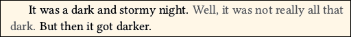
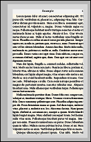
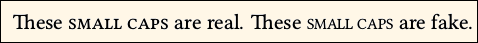
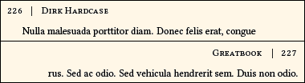
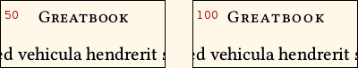
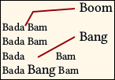

Document class novel - documentation
Version: 1.40, 2017/09/14. This is a complete re-write of the documentation, with the HTML in a single file, and many improvements. Version 1.40.1: Minor doc changes, especially correction to code for converting cover image to CMYK. Version 1.40.2: More minor doc changes.
☺ An example novel, text and cover, can be found at the GitHub project page, in the "other" folder. You will find its TeX source and the resulting PDF. The PDF text and cover meet submission standards for major American print-on-demand services.
A smaller example document is novel-example.tex, which can be found in the extras folder within this documentation.
1. Overview
1.1. Description
The novel document class is intended for writers of original fiction, such as novels and collections of short stories. For this purpose, it provides easy-to-use settings that are pre-configured for the most common book Trim Sizes, according to publishing standards.
The class uses the advanced typographic features of LuaTeX, fontspec, and microtype, and has the built-in capability to produce files compliant with PDF/X. All these capabilities are accessed via simple front-end commands that do the work for you, thereby reducing the learning curve.
You will be using utf-8 encoding throughout, and Open Type fonts (or TrueType). That means built-in support for many languages.
PDF/A and other formats pertaining to digital publication (e-books) are not supported, and never will be. If that is what you need, then this is the wrong document class for you.
Bibliography, Floats, Tables, Math Mode, automatic generation of title page and table of contents... Forget them! Many of the TeX features used for academic work have reduced functionality, or are entirely disabled, in novel class. There is a reason for this. If you need those capabilities, find another document class. There is some support for page-bottom footnotes, but good support for raster (not vector) images.
The class makes typographic choices that are best suited to original fiction, where you can easily resolve problematic typesetting by re-writing your own work. Note that modern commercial publishing is often very tolerant of widows and orphans, so novel makes no effort to control them.
The novel class has a lot of possible settings, and a command structure that differs from other document classes in many ways. So, there is a lot of documentation. But you probably do not have to read most of it.
Before you panic, look at the novel-example.tex demonstration file, in the documentation extras folder. It uses mostly default settings. See how easy that can be?
If you are ready to typeset your great detective novel, or your collection of sci-fi short stories, then novel is for you. And, if you are unfamiliar with the terminology of commercial book publishing, have no fear! This documentation is here to help you.
1.1.1. Installation
Your TeX installation must be based on TeXLive 2016 or later (including any recent MiKTeX). If you are on Linux and your distro is something such as Ubuntu 16.04 LTS (Xenial), then the distro version of TeXLive is too old. However, you can still install a more recent version of TeXLive manually, to your home directory, from tug.org.
The novel package is not (yet) included with default TeX distribution. Once you have TeX working, use its package manager to install novel. The TeX package will be placed in (texroot)/tex/lualatex/novel/, the documentation will be placed in (texroot)/doc/lualatex/novel/, and the included font will be placed in (texroot)/fonts/opentype/novel/.
Fonts from the libertinus package are required, and may be installed via your TeX package manager. Note that a novel document does not request the package, so you will not see an error if the fonts are not installed! Instead, if you have not manually specified which fonts to use, it will automatically look for pre-installed Libertinus fonts (or Linux Libertine O) as defaults.
Since you will be using LuaLaTeX, the font cache will be updated to include the newly-installed fonts, the next time you run this software. However, I recommend that you force a full cache refresh, by locating the luatex-cache directory, and discard its contents. The cache may be anywhere (sadly), so you will have to hunt for it. If you have never used LuaLaTeX before, it may not exist. If there are any updates to the fonts, then a manual cache refresh is necessary.
1.1.2. Licensing
The novel document class, including software, examples, documentation and supporting images, is distributed under the terms of the LaTeX Project Publc License, either version 1.3c of this license or (at your option) any later version. The exception is the included font NovelDeco.otf, which is distributed under terms of the SIL Open Font License, v.1.1.
To ensure that your book may be sold commercially, be careful to use only fonts that allow commercial usage. That may exclude some of the fonts in the LaTeX font catalog. See this documentation regarding fonts.
1.1.3. Credits
My method of "programming" largely involves using or modifying code provided by others under allowable license terms. Thus, within the TeX code files, you will find places where small or large pieces of code are the work of someone else. Names or organizations are credited in-place within the TeX code, according to license.
Various clipart graphics were obtained from openclipart.org. The NovelDeco.otf font is partly derived from Linux Libertine O, using FontForge.
I read popular fiction a lot, usually books from my local public library. Even if I do not read a particular book, I often look a how it is designed. Throughout this documentation, where I recommend a design or style, it is most often based on the preponderance of designs/styles as I have seen in softcover or hardcover popular fiction, from major publishers in the U.S.A. That does not include "mass-market paperback" versions (the kind seen at supermarkets, rather than at bookstores). I may mention several common alternatives.
I have also consulted the authoritative Chicago Manual of Style (CMoS) hardcover 16th Edition. In the case of fiction, CMoS notes that publishers sometimes don't do things the official way.
Although I have looked at a variety of web sites concerning book design, I give these the least credence, because (a) often they merely duplicate each other's opinions, right or wrong, and (b) they may simply echo CMoS.
1.1.4. Success Story
In August 2017, an original novel using this document class was published. The text block used nearly all the default settings, and was electronically submitted as PDF/X-1a:2001.
The color cover image was designed in RGB using Inkscape and GIMP, coverted to CMYK at 240% ink limit using GraphicsMagick and the methods described in this documentation, then finally converted to PDF/X-1a:2001 using this document class.
Both files were automatically reviewed and accepted on first attempt, with the actual printed books for sale within a few days of file submission.
1.1.5. Help Wanted
Although this package works for me, and there are no known issues, bugs are always possible. You may file an issue at the GitHub project page, or contact me by e-mail if you do not have a GitHub account. My e-mail address is towards the top of the novel.cls file.
I, the original author of this package, am a retiree who prefers to move on to other things. If you are of a mind to take up long-term maintenance, then contact me by e-mail. If you already are a package developer with a CTAN login, also contact them. You will need to understand elementary LuaLaTeX, fontspec, Unicode, Open Type fonts, PDF/X, and the general needs of fiction writers in the printed (not e-book) market. However, Lua, XeTeX, TiKz, math, and physics are not required (possibly counterproductive).
1.2. Important Behavior
There are several ways that novel is very different from other TeX document classes. Before you wonder why your document doesn't work, you need to understand the differences. All of these are features, not bugs. They are done with the intent of making novel best for its intended purpose.
1.2.1. Always Use UTF-8, Without fontenc
You must create your document in utf-8 encoding. No OT1, no T1, no LY1, or other TeX font encoding that pre-dates cell phones.
Instead of typing TeX codes such as \`{e} you can simply paste è from a Unicode character map. Other alphabets such as Greek and Cyrillic are directly supported, as long as you choose fonts that support those character sets.
Do not call for fontenc in your Preamble. The novel class is pre-configured for utf-8.
If you use a plain text editor, or TeXWorks, or export plain text from a word processor, be sure that your text is encoded as utf-8, without byte order mark (BOM).
If you are on Windows, do not use Notepad! The free Notepad++ (also Portable version) is a suitable plain text editor. Configure it as specified, with utf-8 and without BOM. Does not matter whether UNIX or DOS line endings, as long as you are consistent.
1.2.2. Do Not Load Fonts via \usepackage or \RequirePackage
The method for loading fonts is described elsewhere on this page. Be sure you read that! For example, you cannot load a font with \usepackage{fontname} in this document class.
1.2.3. Use LuaLaTeX and Open Type fonts
 With novel, you will be using the LuaLaTeX engine, whether you like it or not. No pdfTeX, no XeTeX, no dvips. You do not have to understand Lua code, since the heavy lifting is already done for you. Just follow the instructions in this documentation.
With novel, you will be using the LuaLaTeX engine, whether you like it or not. No pdfTeX, no XeTeX, no dvips. You do not have to understand Lua code, since the heavy lifting is already done for you. Just follow the instructions in this documentation.
The built-in fontspec package handles modern Open Type fonts, and is able to access their internal features. The syntax is easy to learn, and very powerful. And, you can directly include text with diacritical marks, Greek, Cyrillic, and most other utf-8 encoded characters in your document. All you need are the fonts, and you probably have them. You will wonder why you never did this before.
1.2.4. Disabled standard text size commands
Would you like to size text, using command such as \small or \LARGE ? Bah! They will be ignored. Write these commands, and the text will appear at its usual size, just as if the commands did not exist.
There is a reason for this behavior, related to the need for constant line spacing. Thus, novel provides its own capability to size text, using different commands.
1.2.5. Disabled academic-purpose commands
 Commands such as
Commands such as \section, \chapter, \abstract, \index, \tableofcontents, \maketitle, and many other structural commands will not work with novel. Those are for academic papers. The results they would produce (if enabled) would be inappropriate for fiction. If you attempt to use them, you will either get an error message, or they will simply be ignored.
Novelists do not need many ways to distinguish chapters. With novel there are commands specifically created for the needs of fictional works. They are described below.
Also, the float and table environments are ineffective. In novel there are specific ways to place images or construct a table of contents.
1.2.6. Images must be raster png or jpg
You read that correctly. Sometimes fiction uses images, especially for the title page and chapter titles. With novel, do not use vector formats such as eps, svg, or pdf images. Use raster images in png or jpg format.
There is a reason for this, explained below, where the use of images is discussed in detail. Be sure to read it, as novel has its own way to place images, in a way that is most likely to work well with fiction.
1.2.7. Beware of $, %, and Other TeX Special Characters
This is standard TeX behavior. Just a reminder!
 TeX has a number of special characters. If you type them in a document, they will not appear as an ordinary printed character, but will do something else. These are:
TeX has a number of special characters. If you type them in a document, they will not appear as an ordinary printed character, but will do something else. These are:
$ % # _ ^ & ~ \ { } and sometimes [ ]
In most cases, an incorrect usage will provide an error message that can be easily deciphered. However, the dollar sign and percent symbol are tricky. Incorrect use of the dollar sign may either place your text in math mode (not your intent) or produce a baffling error message that points to an innocent package. The percent symbol normally produces no error, since it is a comment character. But then, whatever text follows on that line will be missing from your PDF.
Special characters, other than the backslash, are escaped by placing a backslash in front, thus: \$ for the dollar sign, \% for percent. If you must print a backslash, \string\ does it.
• Tip: To avoid unforeseen problems, you should review your document in a text editor, prior to compiling. Search for any instances of special characters, particularly dollar and percent. Backslash them as needed.
1.2.8. Avoid TeX Editors and IDEs
You must create your document in utf-8 encoding. You may use a plain text editor (with or without TeX code highlighting), export plain text from a word processor (recommended), or use the minimal TeXWorks GUI. If you use TeXWorks, be sure that you are not running scripts that change the content of your document.
Do not use another TeX editor, such as Lyx or TeXstudio, or an Integrated Development Environment (IDE). Those programs are often capable of inserting standard LaTeX code from menus. However, novel does not necessarily use that standard LaTeX code. The result may be unexpected.
1.2.9. Suggestion: Write Using a Word Processor
I suggest that you write your novel in a word processor rather than in a text editor. MS Word and similar programs work. I use LibreOffice (also Portable version). If you use LibreOffice, version 5.3 or later is much better than earlier versions.
Why begin with a word processor? These programs can automatically substitute curly quotes and other characters. Remember than since you are using utf-8 encoding, you don't need to use TeX code for that, since you can simply insert the character directly. And, word processors have much better support for spell checking (and sometimes grammar). Just be sure that the word processor does not automatically correct your spelling, because any TeX code won't be in its dictionary.
Remember that TeX closes paragraphs by skipping lines, or by \par. Also remember that in most word processors, the emdash is two hyphens, not the three used in TeX. You can always insert an emdash (or endash) directly. You can write TeX code into the word processor, where it will be treated like ordinary text, so use \textit{text} or similar command, rather than the word processor's italics menu.
In any case, be sure to export plain text as utf-8, then compile it with lualatex.
• Tip: For the editing and proofreading phase, where spelling and grammar are carefully reviewed, I use a special font CPmodified.otf. This is my custom derivative of the Courier Prime regular font. Cpmodified can be found in the documentation extras folder. It is released under the SIL Open Font License v.1.1. To use this font for editing, install it in your operating system, not TeX. Then, call it from your word processor. The font includes Latin-1 and ANSI characters, and a few others. It is not quite monospaced (the em dash and ellipsis are longer). Punctuation is highly exaggerated, so you can see it more easily. My own experience is that most errors in the nearly-finished document involve punctuation.
• Tip: Word processors usually make an incorrect substitution for certain English elisions (possibly in other languages also). When you type "Give 'em hell," the substitution may provide Give ‘em hell, but the correct rendition is Give ’em hell. Can you see the tiny difference in the direction of the single quote? Probably not on your computer screen, but it will be noticeable in print. The CPmodified.otf font makes the difference obvious.
1.2.10. Think for yourself
When TeX processes a document on a paragraph-by-paragraph basis, it chooses the layout that has the least total "penalty." Penalties are assessed based on factors such as word spacing, inter-line spacing, hyphenation, widows, and orphans. You may choose the value of each penalty.
With novel, inter-line spacing is fixed, and there is no padding between paragraphs. No plus-or-minus. Hyphens are allowed, but strongly penalized. A reasonable amount of altered word spacing is allowed, and the built-in microtype package allows reasonable changes to letter spacing and the letters themselves. These choices achieve a high level of visual appeal and readability for flowing text.
However, there is little penalty for widows or orphans. When you process a document with novel you are likely to find widows and orphans on many pages. This choice was made for several reasons. First, attention to widows and orphans would reduce the effectiveness of the other, more important, layout penalties. Second, fiction often has numerous short paragraphs (especially with dialogue), and it is very difficult for software to deal with all of them. Third, a great deal of contemporary fiction has widows and orphans. Fourth, it's your book... You can rewrite it!
2. Document Class Options
As with other LaTeX classes, novel is called this way:
\documentclass[options]{novel}
As with other document classes, novel chooses a default paper size, and font size, if you do not make the choice. But there, the similarity ends. The default paper size in novel is 5.5" wide by 8.5" high, which is a popular book Trim Size for softcover fiction in the US, and close to the Demy Octavo (C novel) British size. And, the default font size is not an integer point size!
In fact, you cannot set either the paper size or font size in the class options. You set them via other commands, in the Preamble. The commands are explained on other pages of this documentation.
Still, there are a number of class options. As usual, options must be enclosed in braces and be separated by commas.
Note: The debug option, unique to version 1.38, has been removed.
2.1. draft
The word DRAFT will appear at the upper left of each page.
In draft mode, a little black bar will be placed at the right side of text that didn't quite fit on the line. These locations are reported in the log file as "overfull hbox" warnings. The black bar is called an "overflow rule".
Some packages take note of whether or not the document is in draft mode, and change their behavior accordingly. However, the included microtype package will always be in final mode, and the included hyperref package will always be in draft mode.
In draft mode, PDF/X compliance is turned off, no matter what you specify.
2.2. graytext
The novel document class is intended for black/white book interiors. Normally, any color command, even gray, will be ignored, and the text will be rendered black. This does not affect images.
The graytext option over-rides this restriction, and obeys grayscale color commands from the xcolor package, which is already loaded with the class. Non-grayscale colors will be converted to shades of gray.

Your book will not be printed with "gray ink." Instead, anything other than pure black will be emulated by a pattern of black dots. This is known as "halftone." It causes a reduction in resolution, so your gray text will appear somewhat fuzzy. Therefore, do not use very small text, or characters with fine lines.
Sometimes the halftone operation extends to nearby text that is not gray. So: Unlike the example shown above, it is a bad idea to mingle gray with the ordinary flow of black text. The most appropriate use of gray text is for special items such as chapter titles.
You may place darker text over a lighter background. But even though the resulting PDF meets standards, lighter text over darker background is unlikely to print as intended.
See also section 7.2.8.
2.3. shademargins
This option is ignored unless using draft mode. It is not necessary to use the graytext option.
 The shademargins option is simple: The margins will have a light gray background.
Note that margins refers to the area between the live text area (including head/foot, if any) and the TrimBox, which is the finished size of your book. If you are using \SetMediaSize to request paper larger than your book's Trim Size, the excess area is not considered to be margins; it is discarded paper, so it is not gray.
Some commands (in particular, images) allow their content to overflow the textblock area. With shademargins you can see where such object intrude into the margins.
Sometimes it is hard to see whether a centered object is really centered, because the left-right margins are not the same width. With shademargins you can more easily see centering.
Note that headers and footers are not part of the margins.
2.4. cropmarks
 This option is ignored if the TrimSize is the same as the MediaSize (the usual situation). It works whether or not in draft mode.
This option is ignored if the TrimSize is the same as the MediaSize (the usual situation). It works whether or not in draft mode.
If the PDF Media Size is larger than its finished TrimSize, you can place crop marks (also known as trim marks) to indicate where the paper will be cut. The cropmarks option makes the marks visible. If this option is not used, then no marks are placed, regardless of any other commands.
Note that most print-on-demand book printers do not want crop marks. The process flow is automated, and trim data is read from within the PDF. Crop marks may actually interfere with proper layout, if your PDF is re-formatted to share a large sheet of paper along with other pages. So, do not use cropmarks unless you must. For this reason, the built-in capability for cropmarks is very basic.
 There is only one configurable setting, which may be used in the Preamble:
There is only one configurable setting, which may be used in the Preamble:
\SetCropmarkGap{length}
The cropmark gap is the distance between the Trim Box and where the crop lines begin. The purpose of the gap is so that the marks do not show on the trimmed paper, if the cut is a little bit off. In all cases, the far end of the cropmarks is 0.5in from the Trim Area. The gap is marked G in this diagram. The length must be least 0pt, and is more typically 0.125in or 0.250in. The default is 0.125in.
If your Trim is placed off-center in the Media, then only one pair of cropmarks will be visible.
2.5. cropview
 This option is ignored if the TrimSize is the same as the MediaSize (the usual situation), because it is unnecessary. Also, it is ignored unless using draft mode.
This option is ignored if the TrimSize is the same as the MediaSize (the usual situation), because it is unnecessary. Also, it is ignored unless using draft mode.
With cropview, there is an internal instruction to PDF viewers, requesting that only the Trim Size be displayed on the screen, rather than the whole Media Size. This is useful during the layout phase, because it is hard to visualize layout when you have a small finished size floating in a much larger paper size. Nothing else is changed.
The accompanying image is the cropview display of the same page that was used to illustrate the cropmarks command. However, you do not need to have cropmarks, to use cropview.
2.6. closecrop
 This option is only effective in draft mode. When used, the layout of your text is unchanged, but the surrounding margins are shrunk so that they just clear the live text area (which includes header and footer, if present). Also, the TrimSize is shrunk accordingly. The resulting PDF will be easier to read on a handheld device.
This option is only effective in draft mode. When used, the layout of your text is unchanged, but the surrounding margins are shrunk so that they just clear the live text area (which includes header and footer, if present). Also, the TrimSize is shrunk accordingly. The resulting PDF will be easier to read on a handheld device.
This does not produce an E-book, since the file will be missing some things that an E-book ought to have. The sole purpose of this option is to create a conveniently-sized file that you can carry around while you are thinking about edits and revisions.
2.7. xml
If you request your PDF to comply with PDF/X standards, it will automatically include XMP Metadata that can be seen as document properties in some (mostly professional) PDF reader software. The xml option exports this data with an xml header added, so that it can be independently viewed in software such as a browser.
This option is only for your information; the exported xml file is not necessary. Whether or not you choose this option will not affect the structure or content of your PDF. If you set PDF/X compliance to off, then there will be no exported xml file.
The exported file will be named jobname-XMPasXML.xml, where jobname is the file name of your *.tex document. If you wish to obtain the XMP packet, without the xml header, you can easily do that with a Unicode-compatible text editor. The necessary editing is obvious.
2.8. coverart
This option is only used for cover artwork. See section 12.
2.9. unblock (primarily for developer use)
A number of LaTeX packages are known to be incompatible with novel, because "the way those packages do things" conflicts with "the way novel does things." If you attempt to load one of those packages, then the results you get may not be in agreement with the formats and styles described in this documentation, because the other package over-rides some of novel's own macros.
Therefore, at the end of your Preamble, novel reviews the loaded packages, and throws an error message if you included any of them via \usepackage or \RequirePackage. That also applies if you call some other package that chain-loads one of the forbidden packages.
The odds that you will need a forbidden package are small, because they generally pertain to layout for mathematical and academic papers (tables, floats, equations, diagrams, etc.).
If you specify document class option unblock then the list of forbidden packages will be disregarded by novel. Use at your own risk! This option is really intended for the convenience of developers, rather than ordinary users.
3. Metadata, File Data, and PDF/X
The commands described on this page are used only in the Preamble.
These commands write non-printing information to the PDF file. Some of the information is used to identify and classify the file. Other information is read by the printer, to assist it with printing choices.
Unfortunately, some of the terms have slightly different meaning, depending on whether they are used in the context of printing, book distribution, or ebooks. To avoid confusion within this documentation I will use different terms when they mean different things. When you are communicating with your printing and distribution service, take care to ensure that your understanding of terminology is what they really mean.
3.1. Definition of Terms
This section is more detailed than it needs to be, because my review of various online forums (unrelated to TeX) shows a lot of user confusion.
3.1.1. ISBN Metadata
 When you obtain the ISBN for your book, either directly through the issuing agency or via your chosen print service, you will enter ISBN Metadata in an online form. This metadata will go into a database, and identify your printed book in distribution and sales channels. It neither knows nor cares about PDF. (If you were marketing a PDF ebook, instead of print, that would be a different story.)
When you obtain the ISBN for your book, either directly through the issuing agency or via your chosen print service, you will enter ISBN Metadata in an online form. This metadata will go into a database, and identify your printed book in distribution and sales channels. It neither knows nor cares about PDF. (If you were marketing a PDF ebook, instead of print, that would be a different story.)
ISBN Metadata includes title, author(s), subtitle if any, ISBN, other identifying information, and a description. The description is by way of advertising, and can usually be changed later; it need not appear anywhere in your book or PDF file, although some authors might use the description on the book's rear cover or cover flap.
Note: The ISBN refers to your printed book, not to the PDF file. You are not selling copies of the PDF.
3.1.2. Printed Metadata
 Printed Metadata refers to the information that can be seen on paper, in expected places: the book cover, the title page, and the copyright page. Whether your book was printed from a PDF file, or by some other method, is not relevant.
Printed Metadata refers to the information that can be seen on paper, in expected places: the book cover, the title page, and the copyright page. Whether your book was printed from a PDF file, or by some other method, is not relevant.
Your print service will insist that the title, subtitle (if any), author, and ISBN in these places exactly match what appears in the ISBN database. Of course, you can (and usually will) use styling or images to make the Printed Metadata more attractive than the plain-text ISBN Metadata.
Some print services may object to artwork that is too fancy, on the grounds that it is difficult to discern the title and author. Although this is very unlikely, it is better to ask before committing resources.
3.1.3. File Data (PDF Metadata)
 When your PDF file is produced, internal metadata will be automatically created for the benefit of PDF reader software. To avoid confusion, this documentation uses the term "File Data" to mean this internal PDF metadata. You can see some of the File Data when you open the PDF in any reader, and go to File>Properties. To see all of it, you need professional software (such as Adobe Acrobat Pro).
When your PDF file is produced, internal metadata will be automatically created for the benefit of PDF reader software. To avoid confusion, this documentation uses the term "File Data" to mean this internal PDF metadata. You can see some of the File Data when you open the PDF in any reader, and go to File>Properties. To see all of it, you need professional software (such as Adobe Acrobat Pro).
Be sure to read the rules for File Data, below. Some of it is generic, and some is particular to TeX or to the novel class.
3.2. Rules for File Data
File Data must conform to several specifications, in terms of what you may or may not write. Some of the limitations are imposed by the book distribution industry, which stores information in its databases a certain way.
3.2.1. Required, Prohibited, Optional?
If PDF/X compliance is required, then you must at least set the title in File Data, using the \SetTitle{} command. Note that this title is not styled in any way.
Some print services require a minimum amount of file data, particularly title and author, which must match the printed metadata and ISBN metadata for these fields. Other services may require that the book's ISBN number, with something like _text added, be used in place of the title (remember that underscore is a special character in LaTeX). You will have to communicate with your service, and determine their requirements.
Many print services do not care about File Data, one way or the other. Your PDF is passed through production according to its file name, not its internals. In such a case, assume that title and author are required.
Caution: Be sure that any included images are stripped of their own image metadata. The procedure is described on farther along in this documentation.
3.2.2. Limited to Latin-1?
At least in the USA, your print service may require that File Data be limited to characters in the Latin-1 set. This is because their production and distribution software uses Latin-1 for the database. Note that Latin-1 does not include curly quotes or em dash. You will still be using utf-8 encoding in your document files, but your choice of characters is restricted.
If it were not for the database limitation to Latin-1, you could give your book a Greek or Cyrillic title, because novel can do it, and so can the PDF.
If your book has File Data using quotes, then use the special commands \straightquote{} and \straightdblquote{}. Be sure to use the braces, so that you don't have to worry about gobbled space. When you use these commands instead of typing ' or " you eliminate the risk that your software will automatically convert them to the forbidden curly quotes. Example title:
\SetTitle{That\straightquote{}s Amore} % That's Amore
If you are limited to Latin-1 in File Data, you can still use curly quotes and em dash on the cover and title page, and in headings. In novel there is no \maketitle command, so you may (and should) apply styling to the printed title, even though the File Data title cannot be styled.
3.2.3. TeX escapes
In File Data, you must obey the same TeX rules that apply everywhere: Certain characters have special meaning, and must be preceded by a backslash, if you wish to use them as ordinary characters. These are:
# $ % & _ { } (hash, dollar, percent, ampersand, underscore, left and right curly brackets)
Example: The title Doing 9% & Gone is coded:
\SetTitle{Doing 9\% \& Gone}
The above characters are rarely needed in File Data. Sometimes they must be spelled out, in order to agree with your book's ISBN Metadata. For example, you may need to write "and" rather than the ampersand.
3.2.4. Forbidden Characters
• Do not use the backslash \ except as described above.
• Do not use the tilde ~ or the circumflex ^.
• Do not use TeX code, such as \`e for e with grave; instead paste è directly from a character map.
• Do not use styling, such as {\small text} or \textit{text}.
• Use only \straightquote{} and \straightdblquote{} if necessary, not TeX code for apostrophe or quote.
• Do not use multiple hyphens to create longer dashes. Do not use em dash or en dash.
3.3. File Data Commands
Now that you understand what File Data means, and how it may be written, you can use commands to write it.
3.3.1. \SetTitle{text}
If you do not use the \SetTitle{} command, or leave it empty or blank, then the resulting PDF cannot comply with PDF/X standards. In very rare cases, that is desirable.
This information is not automatically transferred to your book's title page. It will be used as default in certain page heading styles, but you can over-ride it. The information can be retrieved as \theTitle anywhere in your document.
3.3.2. \SetAuthor{text}
This information is not automatically transferred to your book's title page. It will be used as default in certain page heading styles, but you can over-ride it. The information can be retrieved as \theAuthor anywhere in your document.
3.3.3. \SetSubtitle{text}
There is no file data for subtitle! The only reason for using this command is if you wish to later retrieve the information as \theSubtitle in your document.
3.3.4 Advanced: \SetApplication{text} and \SetProducer{text}
The Application, also known as CreatorTool, is the program used to create your source document. Text editors, word processors, and page layout programs are the most common Applications (not specific to TeX). The PDF Producer is the program that converts the source document to PDF. In many cases, the Producer is a back-end, directly linked to the Application.
These details are automatically created when you compile your document, without any input from you. However, if you have the need to provide a custom text string for the Application or Producer, these commands will do it.
3.4. PDF/X
Commercial printers are very likely to require PDF/X compliance. This ensures that your PDF meets a variety of criteria, by containing those things it must contain, and omitting those things it must not contain. Most perfectly valid PDF files are not PDF/X compliant, simply because they are not intended for commercial printing.
\SetPDFX[output intent]{compliance standard} and starred version
If the \SetPDFX command is not used, it is off by default. Note that a non-compliant file is not a defective file! It complies with PDF standards, but not PDF/X standards. Some print services insist on PDF/X, and others don't care as long as the fonts are embedded (which they always are).
3.4.1. Compliance Standards
The following choices are available:
X-1a:2001
X-1a:2003
X-3:2002
X-3:2003
off (default)
The first of these is the one that is most widely accepted in commercial printing. Anything meeting X-1a:2001 necessarily meets the other standards. If your book involved complicated color artwork, then the correct choice might be crucial. But for a black and white book block, X-1a:2001 is the preferred choice unless your print service says otherwise.
3.4.2. Output Intent
Unless compliance is off, an Output Intent is always required. However, novel treats this as an optional argument, because it will automatically use CGATSTR001 as default Output Intent.
Output Intent informs the printer that you "intend" your PDF to be printed according to certain printer capabilities. If you took the trouble to soft-proof your PDF on a color-calibrated monitor using color-managed software, and if the printer's capabilities actually correspond to the intent, then the printed result will closely match what you expected. This is very important in commercial color printing (such as for cover artwork), but nearly irrelevant for a black and white book block. Nevertheless, an Output Intent is required to meet PDF/X compliance.
3.4.3. Built-in Output Intent Codes
There are three pre-defined choices:
CGATSTR001 (default)
FOGRA39
JC200103
The first of these, more properly named "CGATS TR 001" with spaces, is also known as "US Web Coated SWOP v2" in the USA, and is the most commonly-used American print standard for this kind of book. The second is widely used in Europe, the third in Japan.
3.4.4. Other Output Intents
If you are required to use an Output Intent that is not one of the above three, then you have to code it yourself. Have a look at the three pre-configured Output Intents (files novel-CGATSTR001.clo, novel-FOGRA39.clo, and novel-JC200103.clo). Instructions are inside the files. There are several places where you can find the necessary data; the most comprehensive is at the Inernational Color Consortium.
In essence: If you create a custom Output Intent file named novel-MyFunkyPrinter.clo, then you request MyFunkyPrinter (without the preceding novel- or the .clo extension) as Output Intent, and that file will be loaded.
3.4.5. Whether or Not to Embed *.icc
Each Output Intent has a corresponding color profile, in the form of a file with extension *.icc.
You usually do not need it. In fact, unless your print service specifically asks you to embed the file, don't do it. When you use \SetPDFX in its un-starred form, the *.icc file will not be embedded.
If your print service demands that you embed the *.icc color profile, then use \SetPDFX* (with the asterisk).
Repeat: Do not embed the *.icc color profile unless specifically requested by your print service.
• If your printer requests "US Web Coated SWOP v2" and, as usual, requests that you not embed the corresponding *.icc color profile, then some software will read the Output Intent as "CGATS TR 001" instead of "US Web Coated SWOP v2". They are identical. But not everyone knows that.
3.4.6. Where to Find *.icc Files
You do not need an *.icc color profile unless you choose to embed it.
Although many *.icc files are freely available, they usually cannot be distributed within an open-source project. You might already have them in your system, wherever such files are stored. Note that TeX uses forward slash in file paths, not backslash, even if the platform is Windows:
Windows: C:/Windows/System32/spool/drivers/color/ [older Windows: system32 instead of System32]
Linux: /usr/share/color or hidden ~/.local/share/icc/ or other places
OSX: /Library/Colorsync/Profiles/ or hidden (username)/Library/Colorsync/Profiles/
If you do not have the files, look on the Internet here and here. These links also have many other profiles, beyond the basic three. In a few cases, your print service may provide the necessary file.
You want printer profiles, usually CMYK. Don't worry about the files being "for Windows," as they are actually cross-platform.
If your system has the necessary *.icc file for your Output Intent, but novel cannot find it, then copy the file to the same folder as your TeX document.
Again: Do not embed the file unless the printer requests it.
4. Book Size and Page Layout
There are many layout settings available, but you do not have to use them all. In fact, you may not need to use any of them! Your novel is pre-configured with settings that will often be suitable for the 5.5"W x 8.5"H Trim Size that is widely used in the American softcover fiction market.
If you choose a different Trim Size, then some of the other defaults will be automatically tweaked, so that your starting point is reasonable for the requested size.
4.1. Book Dimensions
4.1.1. Trim Size
Trim Size is the finished size of your book, width and height (but not thickness). In the case of softcover books, it is the exact size. In the case of hardcover books, where the cover is larger than the contents, it is (usually) the cover size that is measured, with the internal trim size being slightly smaller than nominal (some of the margins shaved away).
Your print service has a list of standard trim sizes. For fiction, you probably want creme (off-white) paper, which eliminates a few of the choices. Choice of size may also be limited by the distribution channels you choose.
4.1.2. Media Size, TrimBox
 In a few cases, the commercial printer will request that the PDF page size be something larger than the Trim Size of your book. In PDF terminology, the larger dimensions are the Media Size. Typically, the Media Size will be U.S. Letter, or A4, and the Trim Size must be floated in the center, horizontally and vertically. As an alternative, the Trim Size will be at the edge. Something of the sort happens when you print a copy of your PDF at home, where your printer's paper tray has Letter or A4, not the Trim Size.
In a few cases, the commercial printer will request that the PDF page size be something larger than the Trim Size of your book. In PDF terminology, the larger dimensions are the Media Size. Typically, the Media Size will be U.S. Letter, or A4, and the Trim Size must be floated in the center, horizontally and vertically. As an alternative, the Trim Size will be at the edge. Something of the sort happens when you print a copy of your PDF at home, where your printer's paper tray has Letter or A4, not the Trim Size.
Unless you explicitly set it to a different value, Media Size will automatically be set at Trim Size. Do not specify the Media Size, unless the commercial printer requests it.
Since your PDF is being prepared for commercial print production, it will have an invisible TrimBox automatically encoded. This information tells the printer where the Trim Size is located. If (as usual) the Trim Size and Media Size are identical, then the TrimBox is the full size of the PDF page. But when the Trim Size is smaller than the Media Size, the TrimBox defines where the paper will be trimmed. Although it is not normally marked on the PDF page and never appears in print, some PDF viewers allow you make the TrimBox visible.
In the accompanying diagram, the TrimBox is shown as a faint green line. The margins, shaded gray, are measured relative to the Trim Size, not relative to the Media Size. The excess area beyond the Trim Size is "wasted paper" that will not become part of the book.
4.1.3. Margins
Margins are required on all four edges of the page. They do not have to be the same width. Generally the margin at the spine edge (inside margin) is wider.
In the case of fiction, where there are no marginal notes, it is typically the case that the inside margin is the widest. But this is not a rule for all books. All that is required is that each margin be "wide enough" for the printing process.
Keep in mind that the print services are not used to seeing books with exotic margins (such as bottom margin twice the size of top margin). They may think that there is a mistake in your PDF, or in the print job, if you do that.
The novel document class does not provide for marginal notes.
Normally, your TeX document will be compiled to a PDF that is electronically at the exact Trim Size. And normally, print services want it to be that way. When you view your PDF, the text will shift from side to side as you move through the pages, due to the slightly increased margin at the inside edge.
4.2. Layout Commands
Now that you understand how the terms are used, you are ready to use novel layout commands.
Remember that everything is pre-configured, specifically for the purpose of fiction. You only need to write a layout command if you don't like the defaults.
4.2.1. \SetTrimSize{width}{height}
Command \SetTrimSize sets the size of your book. Both values must be written, using units such as in or mm. If you do not use this command, the default Trim Size will be the widely-used 5.5in wide x 8.5in high.
This setting is most crucial. Unless your book is very exceptional, its Trim Size will be one of several standard sizes available from the print service. Among those sizes, only one or two will be "standard" for your genre.
In the USA, 5.5in x 8.5in is often used for softcover fiction. Some fiction, and most nonfiction, prefers the slightly larger 6in x 9in trim size. Both of these are known as "trade" sizes.
If you ever need to retroactively change Trim Size, see Appendix F.
Do not request a mass-market paperback size unless you really, truly, know what you are doing. Since you are not a major writer for a major publishing house, you don't know; so, don't do it.
4.2.2. \SetMargins{top}{outside}{bottom}{inside}
 Mnemonic: "TOBI, or not TOBI, that is the question."
Mnemonic: "TOBI, or not TOBI, that is the question."
When you choose your book's Trim Size, margins are pre-configured. In most cases, the top, outside, and bottom margins are 0.5", and the inside (spine) margin is 0.75" to allow 0.25" binding clearance. These values are acceptable to most American printers, unless your book is very thick. The largest Trim Sizes have slightly larger margins.
Command \SetMargins lets you choose your own margins. If you use it, all four must be written, using units such as in or mm.
 If your book has headers and/or footers, they sit inside the rectangle bounded by the margins. That is, they do not sit inside the peripheral areas cleared by the margins.
If your book has headers and/or footers, they sit inside the rectangle bounded by the margins. That is, they do not sit inside the peripheral areas cleared by the margins.
Be aware that there is a lot of confusion regarding the word "gutter." In the accompanying diagram, it might mean any of A, B, C, or D, depending on who is doing the talking and which software is in use. The novel class uses inside margin, also known as spine margin, to mean C.
If you ever need to retroactively change margins, see Appendix F.
4.2.3. \SetFontSize{length}
In the novel document class, you do not set point size as a class option. Instead you use \SetFontSize in the Preamble.
The size may be any units TeX understands, including decimal values. So, 12.8bp and 13.1pt are acceptable. This is because you will be using scalable, Open Type and TrueType fonts throughout your document. They do not need TeX metrics.
If you insist on using ancient TeX fonts, then you may need to specify a convenient integer font size such as 11pt or 12pt. But why? Forget those fonts! Welcome to the Twenty-First Century.
The minimum normal font size is 8pt, and the maximum is 18bp. On a local basis, text may be larger or smaller than this.
4.2.4. \SetLinesPerPage{integer}
Lines per page refers only to the textblock, and does not include header/footer. Lines are not stretched to fill short pages.
By default, a suitable number of lines per page are set, based on other dimemsions. You can change the default with this command. Any non-integer will be rounded. There is no direct command to set the leading, also known as line-to-line spacing or baselineskip. Instead, it is calculated from the textblock height and number of lines.
If the calculated leading is less than 1.2x the font size, an error will result. It is difficult for TeX to honor all layout settings with such a small leading, which would normally be unacceptable for fiction in any case. If the calculated leading is at least 1.2x the font size, but less than 1.25x the font size, then the log file will have an Alert message, suggesting that you should consider using fewer lines per page. If the leading exceeds 1.4x the font size, then the log will have an Alert, suggesting more lines per page. The Alert messages are friendly; you do not necessarily have to do anything.
4.2.5. \SetHeadFootStyle{number}
 The use of this command is described in section 6.1.2. It is mentioned here, because whether or not your book has headers and/or footers will affect the overall layout. The default is style 1, which has header but no footer (shown here).
The use of this command is described in section 6.1.2. It is mentioned here, because whether or not your book has headers and/or footers will affect the overall layout. The default is style 1, which has header but no footer (shown here).
The pre-defined styles are comprehensive, for use in fiction. It is hard to imagine a header/footer style that is not identical to, or a variation from, one of those styles. But if you do wish to create your own style, you must use \SetHeadFootStyle to choose the closest available style, then use fancyhdr commands for your custom style. The reason is that \SetHeadFootStyle tells the layout engine how much space it needs to reserve.
4.2.6. \SetHeadJump{number} and \SetFootJump{number}
Puzzled by TeX terms such as headsep and footskip? Me too! That's why I rewrote the way that the positions of headers and footers are calculated. Now, you can use easy-to-understand commands that do what you think they ought to be doing.


The head and/or foot "jump" is a multiple of the normal baseline skip. When the jumps are set to 1, the header (if used) will be where the textblock would be, if it had one more line on top. The footer will be where the textblock would be, if it had one more line at the bottom. Values of 2 would skip a line at top and bottom. In other words, integer jumps maintain the line grid.
Actually, the header and/or footer do not need to be on line grid. The defaults are 1.5 for each, which balances the need to separate the header/footer from the text, with the need to avoid wasting vertical space.
The maximum is 3, minimum 1. The two jumps do not need to be identical. If your layout does not have a header and/or footer, then the corresponding setting does not matter.
Don't worry about headheight. Whether you like it or not, headers (if used) will have only one line, and footers (if used) will have only one line. The necessary heights are calculated automatically.
4.2.7. Advanced: \SetMediaSize[alignment]{width}{height}
Normally, the book Trim Size will also set the same size for the PDF pages. What you see is what you get.
Some print services prefer that the Trim Size be floated in a standard paper size, such as US Letter or A4. That's not a technical necessity, but "the way things are done around here." See section 4.1.2 for details. If you must do that, use the \SetMediaSize command.
The width and height must be specified with units, such as in or mm. If the optional alignment is not specified, then The Trim Size will be centered horizontally and vertically in the Media Size. That is the preferred method.
If you write edge for the optional alignment, then the Trim Size will be off-center in the Media Size. Do not do this unless your print service specifically wants it that way. If you are making a hand-made book with a home printer, then this option might be convenient.
Note that margins are measured relative to the Trim Size, not the Media Size. The extra white space between Trim Size and Media Size is just that: extra white space, unrelated to the margins of your book.
For PDF/X compliance, an invisible PDF TrimBox is automatically calculated and written into the PDF file.
The accompanying image shows how this works. Here is the code:
\documentclass[draft,shademargins]{novel}
\SetTrimSize{5.5in}{8.5in}
\SetMediaSize{8.5in}{11in}
\SetMargins{0.5in}{0.5in}{0.5in}{0.75in}
Trim Size 5.5"x8.5" is centered in Media Size 8.5"x11". The shademargins option was used, so that the page margins can be seen. Whether verso or recto, the Trim is centered in the Media. This image is a recto page, which has its slightly-larger inside margin at left of the text. For purposes of illustration, I have drawn the invisible TrimBox with a green line.
4.2.8. Advanced: \SetCropmarkGap{length}
This command is only effective if you use the cropmarks class option, as described in section 2.4. Note that user-provided cropmarks are very unusual in the print-on demand market. Do not use them unless your print service specifically requests them. The built-in cropmark capability is very elementary, and cannot be easily enhanced by adding other LaTeX packages.
In the accompanying image with cropmarks, a corner of the Trim Size is at lower right. The invisible TrimBox has been drawn with a green line. The cropmark gap is G.
5. Fonts
This section describes how to choose fonts and font features, and how to apply fonts within your document. Local styling (such as italics) is described farther down this page.
EEEK! If you are like me, you first try to do something the way you did it before, then when it fails, you finally read the instructions. So, before you came to this part, you tried these things, and none of them worked:
\usepackage{somefont} % FAILS!
\renewcommand\rmdefault{smf} \normalfont % FAILS!
\setmainfont{Some Font} % FAILS!
DON'T PANIC. In novel, the essential fonts are specified with different code. Fortunately, they are all pre-configured. If you accept the carefully-chosen defaults, then you do not need to worry about fonts. You do not even need to specify the font families. Sit back and relax.
You can do something like this, if you have the font license. Then let novel do the rest:
\SetParentFont{Adobe Garamond Pro} % WORKS!
It's that simple. But TeX being what it is, there are complicated ways to customize things. The rest of this part shows you how to do it. You will be using Open Type fonts, or perhaps TrueType fonts. Forget the old Type 1 fonts.
5.1. The Parent Font and Descendants
In novel, you do not directly set the default font, or the main font, or the roman font, or whatever. Instead, you set the parent font. The command:
\SetParentFont[optional,features]{Font Family}
The parent font, or parentfont, is the ancestor of several other fonts, wich will use the same font family unless you manually set them to something else:

The parentfont has TeX ligatures and kerning, applied by default. All of the descendant fonts will also have TeX ligatures and kerning. (Note: TeX ligatures allow you to type `` to get “ and so forth.)
If you specify any optional features for the parentfont, they will automatically be applied to descendants: textfont, chapterfont, subchfont, and headfont.
If you do not set the parentfont yourself, then the following will be used as default, in order of priority: Libertinus Serif, Linux Libertine O, Latin Modern Roman.
The Libertinus Serif fonts are well-suited to fiction. If in doubt, use them. They can be downloaded as TeX libertinus package, but do not write \usepackage{libertinus} in your Preamble. Those fonts are a more up-to-date fork of the Linux Libertine O fonts, which are in the libertine package.
Alas, even though Latin Modern Roman is a fine font, its style and weight are not well-suited to fiction; the only reason they are a last-choice default, is because just about every TeX system has them.
5.1.1. Where Fonts Are Used
The parentfont is not directly used, anywhere in your document. Instead, its descendants are specialized for use in different situations. Here is a typical page spread, using some of the pre-configured choices for chapters and headings:

If you use the novel pre-configured style commands, then the correct font will automatically be applied. That is the recommended, no-brainer method. If instead you choose to write your own custom styles, then you will also need to specify the fonts; but this allows you more TeX coding flexibility.
5.1.2. The Text Font
The text font, or textfont, is the default main font used used for ordinary, flowing text. It uses the parentfont, with added features: common ligatures, and oldstyle numbers. Thus, you do not set or customize the textfont by itself.
Common ligatures (the Open Type liga feature) are such things as replacing ff with the single character ff. Oldstyle numbers (onum) are designed to blend with surrounding text. Not every font has these features; if they are missing, then whatever the font actually has, is used instead.
Normally, you do not need to call the textfont explicity, because it is the default for ordinary text. But in the event that you have a small passage in textfont, within a passage in some other font, you can do this:
{\textfont text}
Note that {\textfont text} and {\rmfamily text} mean the same thing.
Local font changes are described in sections 7.2.6 and 7.2.7.
5.1.3. The Chapter Title Font
The novel command \ChapterTitle{text} automatically styles its text in the chapterfont by default.
The chapterfont inherits from the parentfont. Then, by default it is set to a larger font size (Scale=1.6), and uses Lining numbers if available (Open Type feature lnum).
You may customize the chapterfont:
\SetChapterFont[optional,features]{Font Family} % Note command case!
If you write chapter titles by means other than the \ChapterTitle command, then whether or not you use chapterfont is your choice.
Outside of \ChapterTitle (where chapterfont is automatic), you may use this font anywhere in your document:
{\chapterfont text}
5.1.4. The Chapter Subtitle Font
The novel commands \ChapterSubtitle{text} and \QuickChapter{text} automatically style their text in the subchfont by default.
The subchfont inherits from the parentfont. Then, by default it is set to a slightly larger font size (Scale=1.2), and uses Lining numbers if available (Open Type feature lnum).
You may customize the subchfont:
\SetSubchFont[optional,features]{Font Family} % Note command case!
If you write chapter subtitles by means other than the \ChapterSubtitle command, then whether or not you use subchfont is your choice. Same applies regarding \QuickChapter.
Outside of \ChapterSubtitle and \QuickChapter (where subchfont is automatic), you may use this font anywhere in your document:
{\subchfont text}
5.1.5. The Header/Footer Font
The novel pre-configured header/footer layouts automatically style their text in the headfont by default.
The headfont inherits from the parentfont. Then, by default it is set to a slightly smaller font size (Scale=0.92), and uses Lining numbers if available (Open Type feature lnum).
You may customize the headfont:
\SetHeadFont[optional,features]{Font Family} % Note command case!
If you use fancyhdr syntax to write your own header/footer content, then whether or not you use headfont is your choice.
If you write chapter titles by means other than the \ChapterTitle command, then whether or not you use chapterfont is your choice.
Outside of headers and footers (where headfont is automatic), you may use this font anywhere in your document:
{\headfont text}
5.2. Other Pre-Defined Fonts
There are also a few pre-defined font commands that are "unrelated to" the parentfont.
5.2.1. Sans and Mono Fonts
You probably do not need a sans-serif or monospaced font in a work of fiction. The most prominent exception might be headers/footers, where the use of a light sans-serif font is fashionable. But in that case, set the headfont to the desired sans-serif font, instead of inheriting from parentfont.
The novel class does not have its own commands for setting or using sans-serif or monospaced fonts. If you wish, you may use ordinary fontspec syntax to set them:
\setsansfont[optional,features]{Font Family}
\setmonofont[optional,features]{Font Family}
Then, you may use them with ordinary LaTeX commands:
{\sffamily sans-serif text}
{\ttfamily monospaced text}
If you do not set these fonts, then the defaults are: Libertinus Sans, or Linux Biolinum O, or Latin Modern Sans for the sans-serif font; Libertinus Mono, or Linux Libertine Mono O, or Latin Modern Mono for the monospaced font.
5.2.2. Math Font: Forget It!
The novel class is not set up to do math. Seriously.
Nevertheless, TeX being what it is, there is a behind-the-secene choice of a math font, which (hopefully) your document will never use. The code automatically looks for Libertinus Math, or Asana-Math, or Latin Modern Math.
Otherwise, there is no special command for choosing a math font, and no special command for using it. Proof left to student.
5.2.3. The Deco Font
The novel class ships with its own custom font, NovelDeco.otf. This Open Type font is specifically designed to provide a number of decorative glyphs, and some other characters. It is not a general-purpose font, and can not be replaced by any other font, except by a modified version of NovelDeco.
The decofont is automatically configured. You do not need to set it. However, if you use a font editor to create a modified version, then your modification must have a different font name (to avoid confusion with the original). In such a rare case, you may point to your modified font like this:
\SetDecoFont[optional,features]{YourDecoFont}
The decofont is automatically called by other commands, such as \decoglyph and \acronym. Normally you do not request decofont directly. But if you wish to do so:
{\decofont text}
The decorative glyphs in this font (not including its ordinary characters) are shown in file NovelDeco-glyphs.pdf, which can be found in the documentation extras folder.
5.3. Defining New Fonts
You can define new font commands. The syntax depends on whether the new font is part of a family (where you might have bold and italic variants), or just a single file (no variants). If part of a family, use \NewFontFamily. If alone, use \NewFontFace.
The \NewFontFamily command (or \NewFontFace) takes three arguments: First, the name you assign to the new font command is required. Second, font features are optional. Third, the font name is required (this is tricky; see section 5.4).
\NewFontFamily\pickaname[optional,features]{Font Family}
\NewFontFace\pickaname[optional,features]{Individual Font File}
Note that if you define a font family when you should have just defined a font face, there will be complaints in the log file, because the font loaded cannot find the (nonexistent) other members of the family. But the document will compile. On the other hand, if you define a font face when you should have defined a font family, then commands for bold or italic will have no effect, since the other family members were not loaded. Again, the document will compile.
Example: Suppose your work is science fiction, and one if its characters is a talking robot. You wish to depict its utterances in a robotic-looking font, which will be called using a new \robovoice command. You shop around, and find that the Orbitron font suits your purpose, except that it is too large compared to your textfont. So, you scale it.
In the Preamble, you define the new font command:
\NewFontFace\robovoice[Scale=0.8]{Orbitron} % not part of a family
After some experimentation, you realize that the \robovoice letters need to be spread apart a bit. Do not use the standard LaTeX \textls command. Instead, go back and change the font definition like this:
\NewFontFace\robovoice[Scale=0.8,LetterSpace=number]{Orbitron} % pick a number
In the document body:
``Want some oil?'' asked Captain Withens.\par
{\robovoice ``Is it Gamma-42 Special oil?''} asked the robot.\par
``No, I got it on sale at Cosmo-Mart.''\par
{\robovoice ``Forget it. I'm an oil gourmet.''}\par
The result:

Caution: If you are using a new font within body text (as above), then it is a bad idea to use Scale greater than 1.0. Reason: An excessively tall font will cause lines to spread apart.
 Example: Suppose that you wish to style the title of your book, in a font that is not used for other things such as chapter titles. You purchase a license for the Bernhard Modern Std fonts, in Regular and Italic.
Example: Suppose that you wish to style the title of your book, in a font that is not used for other things such as chapter titles. You purchase a license for the Bernhard Modern Std fonts, in Regular and Italic.
In the Preamble:
\NewFontFamily\booktitlefont{Bernhard Modern Std}
The title page, using \charscale for size:
\thispagestyle{empty}
\vspace*{7\nbs}
\begin{center}
\charscale[3]{\booktitlefont The \textit{Fluffy} Conspiracy}\par
\vspace{6\nbs}
\charscale[2]{Priscilla Milde}\par
\vfill
Nonexistent Publications ⢠Portland, Oregon\par
\end{center}
5.4. Font Customization Syntax
You will be using fontspec syntax to select your own fonts. Much of what follows is a digested portion of the full fontspec package documentation. There are many more features, and ways to use them, than will be described below.
5.4.1. Font (Family) Name vs. Font File Name
A font file is an individual file, with its own file name, including file extension. For example, libertinusserif-regular.otf and libertinusserif-italic.otf are two different font files. This much is obvious.
A font family name, often merely called font name, refers to one or more font files that are variations of the same basic font. Some fonts are so unique that the family consists of just one file. For example, the NovelDeco font family consists of the one file NovelDeco.otf. Typically, a font family has four files, consisting of Regular, Italic, Bold, and BoldItalic variants. Even though there are four font files, there is a single font family name.
Many font families have more than four files, including Semibold and Light weights, and Condensed tracking. It is up to the font designer to decide whether a Condensed variation of the "Bubble Turble" font should be treated as a member of the "Burble Turble" family, or as a separate "Burble Turble Condensed" family.
The font (family) name can be learned by opening font files in your system font viewer. Currently, the Windows 10 font viewer uses "Font name" and the Ubuntu font viewer puts the font name in more prominent type. A font (family) name may contain more than one word, with or without spaces, and may contain a general classification such as serif, sans, or mono, because those are actually different families. But it will not contain words such as regular, medium, semibold, bold, or italic; those are for individual members of the same family. Within TeX, some of the older PostScript fonts have been re-worked as newer TrueType and Open Type fonts. The family names are slightly different, so pay attention.

5.4.2. Set/New by Font Name vs. File Name
When you set an existing font, or create a new font command, you can use either the font (family) name, or the specific font file name. However, there may be a big difference in results!
By family name:
 When you use the font family name, you configure all of the Regular, Italic, Bold, and BoldItalic variants. The usual TeX commands will be applied:
When you use the font family name, you configure all of the Regular, Italic, Bold, and BoldItalic variants. The usual TeX commands will be applied:
Preamble:
\NewFontFamily\rway{Raleway}
Document Body:
{\rway I came, \textbf{I saw}, \emph{I conquered}, \textsc{I left}.}
By file name:
 However, if you specify a single font file name, then only that font file will be used, regardless of requests for bold or italic. Small caps will be honored, if the specific file has them:
However, if you specify a single font file name, then only that font file will be used, regardless of requests for bold or italic. Small caps will be honored, if the specific file has them:
Preamble:
\NewFontFamily\rwayi{Raleway-Regular-Italic.otf}
Document Body:
{\rwayi I came, \textbf{I saw}, \emph{I conquered}, \textsc{I left}.}
File Name Combinations:
 What you write is what you get. You can customize a font family by individually selecting its members. Here is the syntax.
What you write is what you get. You can customize a font family by individually selecting its members. Here is the syntax.
Preamble:
\NewFontFamily\frankenfont[% note the % at linebreaks
ItalicFont=BaskervilleF-Italic.otf,%
BoldFont=libertinusserif-semibold.otf,%
BoldItalicFont=texgyrepagella-bolditalic.otf,%
]{Raleway-Medium.otf}
Document Body:
{\frankenfont I came, \textbf{I saw}, \emph{I conquered}, \textsc{I left}.}
Semibold, Light, etc.: The above syntax is especially useful when you wish to specify semibold (if available), rather than bold. It is also a way to select something such as light versions:
\NewFontFamily\rwlight[% note the % at linebreaks
ItalicFont=Raleway-Light-Italic.otf,%
BoldFont=Raleway-Medium.otf,%
BoldItalicFont=Raleway-Medium-Italic.otf,%
]{Raleway-Light.otf}
Note that the font file in braces is the one used as the "regular" font, in this definition.
5.4.3 Open Type Features
Features are variations, contained within a single font file. In the bad old days, when you wanted true small caps, you had to load a separate font file that had them (and did not have ordinary lowercase letters). Now, if an Open Type font file has the smcp feature (most do), you obtain the small caps from within the same file, by asking for them. Requests for the feature may be made on-the-fly, or pre-loaded for global use.
Here are several of the most frequently-used features, relevant to fiction writing. There are many more, and most fonts have only a few of them. Even when a font has a feature, it may be limited to some portion of the characters. For example, it is common for small caps to be available only for Latin-1 letters, even though the font also contains Greek and Cyrillic. To put this another way: The availability of a feature does not tell you its breadth of coverage. Unless the font has documentation showing coverage of its features, the only way to find out is to create and print a test page.
| Description | Open Type code | fontspec code |
|---|---|---|
kerning |
kern |
Kerning=On |
common ligatures |
liga |
Ligatures=Common |
Tex ligatures |
tlig |
Ligatures=TeX |
lowercase letters to small caps |
smcp |
Letters=SmallCaps |
uppercase letters to small caps |
c2sc |
Letters=UppercaseSmallCaps |
lining numerals |
lnum |
Numbers=Lining |
oldstyle numerals |
onum |
Numbers=OldStyle |
• Kerning is the automatic adjustment of spacing between letters, so that they fit together nicely. The values are read from tables within the font.
• Common ligatures are substitutions, such as a combined ff character for two consecutive f characters. It is up to the font designer to determine which ligatures, if any, are common.
• TeX ligatures (such as replacing `` with â and --- with —) are not actually an Open Type feature, but they are treated that way by the software. All of these are enabled by default. The fontspec manual explains how to disable them, if necessary.
• The SmallCaps feature applies only to lowercase letters; ordinary capitals remain ordinary capitals. UppercaseSmallCaps deals only with converting ordinary capitals to small caps. If you want both, use both. In most fonts that have them, small caps are slightly taller than lowercase, and slightly more widely spaced. What distinguishes real small caps from fake ones (obtained by scaling ordinary capitals) is that the weight and spacing are more compatible with surrounding text.

• Lining numerals are the ones most familiar to you, from math or accounting. They sit on the baseline and have the height of capital letters. That's just right for doing calculations, and is acceptable for things such as page numbers and chapter numbers.
• When lining numerals are mingled with flowing text, they may stand out too much. OldStyle numerals are more like flowing text: Most of the numerals are at lowercase height, with ascenders and descenders. Compare the first number as OldStyle, the second as Lining:
Most fonts use Lining numerals as their default. A few default to OldStyle numerals. Thus, you should explicitly call for the kind of numerals you wish to use.
• True OldStyle numerals have a flat top on one, and a very round zero:  This may be a bit distracting. Some fonts use a transitional form, where the one has a tilted top (like big 1) and the zero is not so round:
This may be a bit distracting. Some fonts use a transitional form, where the one has a tilted top (like big 1) and the zero is not so round:  Others offer you a choice, via an Open Type "style set." See the fontspec manual for how to code style sets.
Others offer you a choice, via an Open Type "style set." See the fontspec manual for how to code style sets.
• There are many more Open Type features, most of which are not useful in ordinary fiction writing. Fonts rarely have more than a few features. Some features (such as the ones shown above) have a specific meaning. Other features, such as "style sets", have whatever meaning the font designer assigns them; Thus the ss03 feature of one font may do something very different from ss03 in a different font.
5.4.4. Scale as Pseudo-Feature
Although it is not an Open Type feature, Scale=number may be written like a feature. Scale globally adjusts the size of the font, relative to what it would otherwise be. If a local font size command is also applied, then the result is the compounded value.
If the font will be mingled with other fonts in the same place, Scale can tweak a font so that it does not stand out. If Scale does not exceed 1, then the baselineskip will not be affected. Over 1 risks spreading lines to accomodate the extra size; this should not be done for fonts that will appear in the flowing main text. But over 1 is acceptable for display fonts that do not wrap lines and do not mingle with main text.
Example: Orbitron is a special-purpose font with a mechanical or futuristic look. Its characters are much larger and heavier than would be found in book fonts. If I wish to mingle Orbitron with ordinary text, I might load the font like this:
\NewFontFace\orbitron[Scale=0.6]{Orbitron} % Preamble
Then in the document body, I could use it like this:
The message was brief: {\orbitron DIE, EARTHLING.} Captain Withens smiled as he oiled his ray-gun. But ray-guns don't use oil.\par
Scale is more often used for fonts that are pre-defined to have a special meaning and location, such as chapter titles or page headers. There, the font is not mingled with ordinary text, and it is OK to use a larger Scale. Then, it is not necessary to use local font scaling commands each time the font is used.
5.4.5 Color and Opacity
Even though the fontspec syntax allows you to set Color and Opacity as pseudo-features when you define a font, the novel class blocks these features. If you attempt to set them as features in a font definition, an error will result. The same applies if you attempt to add them, using \addfontfeature. However, you can still make use of grayscale using ordinary, local color commands.
When you use the graytext class option, you may write text in grayscale, using commands from the included xcolor package. You should only do this for text that is in special locations. For example, if you begin each chapter with a number that is very large, you might wish to make that number gray, so that it does not overpower the main text.
To avoid possible conflicts, the color specification should be chosen from a limited list of names. In order from dark to light: black, blue, violet, darkgray, purple, red, teal, olive, magenta, gray, brown, green, orange, cyan, lightgray, lime, pink, yellow, white. They will all be rendered in shades of gray (of course, black and white will be themselves). You may also choose from this more convenient list: black, gray1, gray2, gray3, gray4, gray5, gray6, gray7, gray8, gray9, white.
If graytext is not chosen as class option, then any color (even white) will be rendered as black.
• Placing light text over a dark background may produce unexpected results in print, even if it looks good in PDF. If you need this effect, it is better to build the text into the background, as a single image.
5.4.6. \CreateFontFeature{code}{substitutions}
Once in a while, a font has a glyph that you would like to use, but it is not included in any of the font's Open Type feature sets. So, how to you grab that particular glyph? For example: One well-known font has a glyph named emdash.alt, which is not as long as the font's ordinary emdash glyph, and looks better in text. Unfortunately, emdash.alt is not in any of the font's style sets. Without some trickery, only a program such as InDesign can grab that glyph.
Thanks to fontspec, novel has the necessary trickery. Command \CreateFontFeature creates a fake Open Type feature code, and assigns your list of substitutions to that code. Use comma-separated entries if there are multiple substitutions. For the case in question:
\CreateFontFeature{myem}{emdash=emdash.alt}
The code myem was randomly chosen as something that is not already defined among Open Type feature codes. Once specified, the fake feature may be used in any font definition, such as this:
\SetParentFont[RawFeature=+myem]{Adobe Garamond Pro}
Of course, the fake feature has no effect if the font does not have the substitution character.
This technique may be used for more complicated features, but that is beyond the scope of this documentation. See the fontspec manual if you need to do more.
5.4.7. Local Modifications to Open Type Features
If you specify a particular Open Type feature, it will be generally used for that font command. So if you define a new font command with Letters=SmallCaps as a feature (and if the font actually has them), then small caps will be used for that font, whether or not you locally request them with a command such as \textsc.
Often, you can add (or sometimes remove) features on a local basis. For example, suppose that you defined the font without using its ss03 style set. You can locally add that feature to some text, using a command that looks like this:
{\addfontfeature{which feature} applied to this text}
The above code assumes that you are already using the font in that location. You cannot apply ss03 from one font to an entirely different font!
See the fontspec documentation for details of \addfontfeature.
As an alternative to changing features locally, you can define different font commands to call the same underlying font, but with different features.
Two ways to accomplish the same thing:
\NewFontFamily\baskf{BaskervilleF}
\NewFontFamily\baskftab[Numbers=Monospaced]{BaskervilleF} % tnum feature
\begin{document}
Some text {\baskftab hello 123} is here.
Some text {\baskf\addfontfeature{Numbers=Monospaced} hello 123} is here.
5.5 Superscripts, Subscripts
In novel, superscripts and subscripts are called "markers." Most book-quality Open Type fonts have markers in style sets (sups, sinf, subs).
In professional fonts, marker glyph weights are adjusted for consistent appearance compared to ordinary glyphs. However, many free fonts do not adjust marker glyph weights, so the markers may appear too small, or too light. You may choose whether to use a font's own markers, or allow novel to generate markers, depending on whichever you think looks better.
• real markers attempt to use the Open Type feature sups for superscripts, and the feature sinf (preferred) or subs (alternate) for subscripts. If the requested feature is not available for the font, then it will be automatically faked, by scaling/raising/lowering ordinary characters from the basefont (lining numerals will be used).
• fake markers ignore whether the Open Type features are available, and simply fakes them.
5.5.1 \SetMarkers[real,fake]{asterisk, dagger, number}
This command may only be used in the Preamble. It globally sets the kind of marker to be used. Default is real and asterisk.
The optional argument applies real or fake markers, as described above.
The required argument applies only to markers created by the \footnote command. It does not apply to endnotes, or to manually placed superscripts and subscripts.
• asterisk (default) uses symbolic footnote markers. The symbols rotate in order * â ⡠§ ** â â â¡â¡ §§ until reset.
• dagger uses symbolic footnote markers, but without asterisks. The symbols rotate in order â ⡠§ â â â¡â¡ §§ until reset.
• number uses numerical footnote markers. Due to possible conflict, the log file will have a "Big Bad Warning" if you use a numerical footnote marker in a document that also has endnotes, since endnotes always have numerical markers.
5.5.2 \realmarker, \fakemarker
Within the body of the document, you may use \realmarker and \fakemarker to change your preference. The choice remains in effect until you change it again.
The option real/fake applies wherever superscripts or subscripts are used, not just for footnotes or endnotes.
6. Headers and Footers
The novel class has a default header style. If you like it, then you do not have to use any of the configuration commands. So, before studying these commands, do a test document that uses the defaults.
You may choose among several pre-configured header/footer styles. Then, you may change the appearance, content, and position. If none of it works for you, then you may define your own headers/footers using fancyhdr syntax. However, just about every style used in fictional works can be obtained using the pre-configured styles and adjustments.
Individual pages, such as title, copyright, and new chapters, can have the header/footer style changed locally, on a per-page basis.
6.1. Global Header/Footer Settings, only in Preamble.
These commands determine whether your book will have headers and/or footers, and set the default style that is used for nearly all pages of the text. Per-page exceptions, such as for blank pages, title, copyright, and new chapters, are performed using the local settings commands.
6.1.1. \SetHeadJump{number}, \SetFootJump{number}
These two commands control the separation between the header/footer and the main text. Since they pertain to page layout, rather than style, their usage is described above, in layout section 4.2.6.
6.1.2. \SetHeadFootStyle{number}
Command \SetHeadFootStyle{number} chooses among several pre-configured header/footer styles, numbered 1 through 6. The default is style 1. The internals of the configuration can then be changed using a variety of commands.
Some styles support an optional "emblem", which applies a decoration near the page number.
Style 0 means neither header nor footer. Not practical for fiction, but it exists.

\SetHeadFootStyle{1}
Only Header.
Page number at outside (left verso, right recto).
Optional emblem adjacent to page number.
Text centered. Default author verso, title recto.
This is the default for the novel document class.

\SetHeadFootStyle{2}
Only Footer.
Page number at outside (left verso, right recto).
Optional emblem adjacent to page number.

\SetHeadFootStyle{3}
Only Footer.
Page number centered.
Disregards emblem, if coded.

\SetHeadFootStyle{4}
Only Header.
Page number at outside (left verso, right recto).
Optional emblem adjacent to page number.
Text towards outside, instead of centered.
Text begins or ends 1em from the emblem.
Default author verso, title recto.

\SetHeadFootStyle{5}
Header and Footer.
Page number centered in footer.
Disregards emblem, if coded.
Text centered in header.
Default author verso, title recto.

\SetHeadFootStyle{6}
Only Header.
Page number at outside (left verso, right recto).
Optional emblem adjacent to page number.
Text towards inside, instead of centered.
Default author verso, title recto.
Custom Style
Before you think about writing custom header/footer styles, be sure to try the pre-configured choices. I have looked through a lot of fiction of all kinds. The pre-configured choices include every style I have seen, with the exception of the most highly decorative.
If none of the above are satisfactory, then you can write your own headers and footers using the syntax of the fancyhdr package.
• In the Preamble, use one of the above \SetHeadFootStyle{integer} to pick a starting point, in terms of whether or not there is a header and/or footer. This is required, so that the layout engine knows how to calculate space. After that, write the fancyhdr code for your custom header/footer in the Preamble. It will over-ride the numerical style in terms of appearance, but occupy the same space.
• You cannot use a header or footer with more than one line. No exceptions.
• See the file novel-HeadFootStyles.sty for how it is done in the pre-configured styles. In the file, the relevant portion follows Look here for the pre-defined styles, for use as models.
• Particularly note that your own style will not automatically use the headfont, or add extra space between letters, unless you include the necessary code in your own definition. Do not use the \textls command.
• No cheating! If you choose a numerical style that does not have a header, then do not attempt to write a custom style that includes a header. Same with footer. Also, if you you choose a numerical style with both header and footer, then you cannot only customize one of them; you must customize both.
6.1.3. \SetEmblems{verso}{recto}
If the style supports it, you may place an "emblem" that appears at a fixed distance (2.5em} from the outer margin. Thus, it will appear to the right of the page number on verso pages, and to the left of the page number on recto pages. In the case of style 4, there will be a clearance of 1em between the emblem and the header text.
The font used for emblems will be the same as the headfont, unless you code the emblem to use a different font (perhaps one you specified with the \NewFontFace command), or unless you use one of the built-in \decoglyph codes.
An emblem is a minor decoration that should not distract the eye from the main text.
• Most books do not use emblems. When they do, it is typically a vertical bar, or a bullet, like this:
\SetHeadFootStyle{4}
\SetEmblems{|}{|}
The verso and recto emblems may be different. Whether they are the same or not, you must set them both, if you use emblems. Blanks are allowed.
 • Emblems may be styled. For example:
• Emblems may be styled. For example:
The header emblems shown at right were produced using the code below. Dingbats from the NovelDeco font were specified, adjusted for size and position.
\SetEmblems{\charscale{1.1}{\raisebox{-0.05em}{\decoglyph{l9825}}}}%
{\charscale{1.1}{\raisebox{-0.05em}{\decoglyph{l9826}}}}
• You may also use images, or combined images and text. If you use images, they must be at the exact resolution required by your print service (usually 300dpi for gray, 600dpi for b/w), and at exact size without scaling. The \InlineImage command must be used. See novel's image documentation details. You may find that a vertical offset of \nfs (normal font size) is useful, as this will place the top of the emblem image at the top margin.

\SetHeadFootStyle{4}
\SetEmblems{\InlineImage[0pt,b]{spy.png}}%
{\InlineImage[0pt,b]{spy.png}}
• At the small size of an emblem, it is difficult to use detailed artwork. A black/white image at 600dpi will print similarly to a font dingbat. Grayscale at 300dpi will probably not be satisfactory unless the emblem is a single shade of gray. For the above example, a character from the Fontawesome font was converted to a png image at mid-gray. It is less distracting than a black character from the font, but hard to discern. Note that there is no "gray ink" for directly writing text in gray.
• Ask your print service whether the presence of a small image in each page header will affect production costs. Probably not, but if there is a different per-page charge when pages have an image... Oops!
• The layout calculation does not care whether emblems intrude into the margins. You will have to inspect your PDF to determine whether a header emblem is too tall, or a footer emblem too deep, for the allowed top and bottom margin clearance. Class option shademargins (in draft mode only) is helpful.
6.1.4. \SetPageNumberStyle{code using \thepage}
By default, the page number is simply \thepage. In most cases, leave it that way. But if you wish to change how the page number is displayed, you can use this command to style how \thepage is displayed. Examples:
\SetPageNumberStyle{\emph{thepage}} % Page number in italics.
\SetPageNumberStyle{-- \thepage --} % En-dash on each side of number, for head/foot style 3 or 5.
The headfont is applied automatically, unless you over-ride it in your code.
You could also get more involved, using a different font or size. Avoid over-doing it. If you are tempted to use a macro that counts page numbers backwards, be aware that your print service will likely reject it. Anyway, it has already been done in fiction.
6.1.5. \SetHeadFont[features]{font}
This setting is described in section 5.1.5.
6.1.6. \SetLooseHead{number}
This command applies to both headers and footers.
If you are using a style that has header text, then for best appearance the characters should appear with a little extra space between them, so that they are more easily distinguished from the main text. This is especially true if you are using small caps. The name for such adjustment is "tracking."
Note: Do not use the \textls command. It is disabled in this class.

The argument of \SetLooseHead is a number from 0 to 1000. At 0 there is no extra space between the letters. Values from 50 (default) to 200 are most useful. Higher values are unusual.
Page number tracking will be clamped at a maximum of 50, even when a larger (looser) tracking is applied to text.
The looseness applies to inter-letter spacing, but not to inter-word spacing. To increase inter-word spacing, use extra code such as \, (backslash comma, which is a LaTeX thin space) as needed.
6.1.7. \SetChapterStart{choice}
This command is only applied if you begin new chapters with the ChapterStart environment. You may pick one of the \thispagestyle choices, described in the section 6.2.2. For example:
\SetChapterStart{dropfolioinside}
Then, that choice will be applied to each page that uses ChapterStart, without you having to write \thispagestyle each time.
The default is footer. This allows a ChapterStart page to show its footer (only if it has one), but not header.
If you use this command, you may still over-ride it on a particular page, by using \thispagestyle{choice} before \begin{ChapterStart}.
6.2. Local Header/Footer Settings, in Document Body
These commands are used when a page header/footer style is an exception to the general rule. Examples are blank pages, titles, copyright, and new chapters. You can also dynamically change the header text.
6.2.1. \SetVersoHeadText{text}\SetRectoHeadText{text}
If you are using head/foot style 1, 4, 5, or 6, the header text can be dynamically changed from page to page. This feature is useful if you wish to include chapter titles in the header, since they change throughout the book. It is also useful if your work is a collection of stories with different titles, perhaps by different authors. But before you use this feature, speak with your print service! Many print-on-demand services will insist that the content of headers must not vary from place to place, because different headers may be confused with portions of different books, during the assembly process.
\SetVersoHeadText{New Verso Head}\SetRectoHeadText{New Recto Head}
These two commands may be used at any time, in the Preamble or document body. When a command is used, it stores its argument in \versoheadtext or \rectoheadtext. In turn, the current value of \versoheadtext or \rectoheadtext is immediately used for the header, and will remain in effect until changed again by \SetVersoHeadText or \SetRectoHeadText.
If you do not use these commands in the Preamble, then at the beginning of the document body they will be automatically set to the author (verso) and the title (recto). However, you may find that the inter-word space is closer than you would like.
For improved inter-word space, use \, (backslash comma, the LaTeX thin space) in addition to ordinary space. You may use as many as you need.
You may use ordinary LaTeX styling commands for the text:
\SetRectoHeadText{The \,\emph{Bad \,Boy} \,Chronicles}
The most popular styling uses lowercase to small caps:
\SetRectoHeadText{\smcp{The \,Danton \,Code}}
• Avoid bold. Avoid underline. Really. Don't do it. No, no, no!
• From novel version 1.32, you are no longer required to use tilde instead of space.
6.2.2. \thispagestyle{choice}
When you choose a head/foot style with header, then space is allocated above the text block, where the header will be placed. That space will be allocated whether or not the header is full or empty. The same applies to the footer. This allocation is global, and cannot be changed in your document body. All standard books work this way, not just with TeX.
However, on a per-page basis you can change whether or not a header or footer has visible content. This is routinely done for blank pages, title page, copyright page, and some others. It is also the norm for pages that begin a new chapter.
• The word "folio" has several meanings: It may refer to a particular paper size, or to a folded piece of paper at any size, or simply to a page number. Below, "folio" means page number.
• When you use the \thispagestyle command, your choice is applied only to the one page on which the command is written (usally does not have to be at the top of the page). But if the page uses the ChapterStart environment, and you use \thispagestyle, then you must place \thispagestyle before \begin{ChapterStart}.
• The following choices are allowed: fancy, empty, footer, forcenumber, dropfoliobeneath, and dropfolioinside.
For compatibility reasons, plain and fancyplain are also allowed, and have the same effect as footer.
\thispagestyle{fancy}
This applies the default (fancy) page style, so it is not normally needed. Only use this command to over-ride some other \thispagestyle command, or to over-ride the \SetChapterStart setting.
\thispagestyle{empty}
Header and footer are both blank.
\thispagestyle{footer}
Ignored if the style has no footer. If it does, then the usual footer appears. Header, if any, is blank.
This command is an alias for fancyplain. It is like the plain style, except that the footer (which is presumed to contain the page number) is fully styled. But unlike plain, the footer style does not cause a page number to appear when no footer exists. If that is what you need, then use either style dropfoliobeneath or dropfolioinside, depending on whether you have extra room in the bottom margin.
\thispagestyle{forcenumber}
If the style has a footer, then it appears as usual, and the header (if any) is blank. If the style has a header but no footer, then the outside portion of the header (which is presumed to contain the page number and emblem) appears, but the text portion of the header is blank.
The forcenumber choice is non-standard. Use it only if you must have a page number, and no other choice is suitable.
\thispagestyle{dropfoliobeneath}
The header (if any) is blank. If there is a footer, then it appears as usual. But if there is no footer, this command creates a one-page fake footer, which contains the centered page number. The fake footer is located where the next line of text would be, if the textblock were one line longer than its actual value.
• For the fake footer to be acceptable in print, the bottom margin must be wider than the minimum amount required by your print service. For example, suppose that the minimum bottom margin is 0.5in, but you set the bottom margin to 0.75in. That gives you 0.25in wiggle room, into which the fake footer will probably fit, because typical baselineskip is 0.2in to 0.25in.
• The document class does not know whether or not you have extra space available in the bottom margin. It is your responsibility to know.
\thispagestyle{dropfolioinside}
The header (if any) is blank. If there is a footer, then it appears as usual. But if there is no footer, this commands temporarily reduces the number of lines per page by one line. At the bottom, where the last line of text would normally be, the page number is centered. Thus, there is no intrusion into the bottom margin.
This command may only be used following the \clearpage command. Thus, it may be used at the start of new chapters, or on pages (such as copyright page) that do not flow from a previous page. If you use it elsewhere, the print will have incorrect layout, but there will be no error or warning, since the compiler is not sure what you are trying to do.
If used on a page with ChapterStart environment, you must place \thispagestyle{dropfolioinside} before \begin{ChapterStart}. The ChapterStart block has a disposable blank line at its top, which is removed when dropfolioinside is used (instead of removing a line from the following text block).
7. Text Sizes and Styling
This section describes how to change the size of text, how to style text (such as italics), and how to move it around. It also describes some miscellaneous commands that are intended to modify text.
Information about how to choose the main text point size is described in section 4.2.3. Information about choosing fonts and font features was previously described on this page.
There is no direct setting for normal baselineskip; it is automatically calculated from the size of the textblock and lines per page.
7.1. Text Sizes
Be sure to read through this. In novel, standard TeX font size commands are disabled. There are new commands that address the limited needs for font sizing, in the context of fiction. These new commands are primarily for local adjustments of a few characters, or for display pages that are outside the main flow of text.
7.1.1. Surprise! Traditional TeX Font Size Commands Are Disabled.
Ah, the simplicity of TeX font size commands, such as \small and \LARGE. But in novel, they don't work. If you write {\LARGE text}, then the included text appears at normal size. This is by design.
Why? In novel, the focus is on maintaining a constant baselineskip, so that facing pages have text aligned. This is impossible with the standard TeX commands. In particular, commands to increase font size will change the baselineskip, whether you like it or not, even if you try to code for a constant baselineskip. That's just the way TeX works.
The one exception is that footnotes will appear with smaller than normal size and skip. But this is done automatically. You cannot manipulate it with a size command.
Fortunately, there are not a lot of occasions where fiction needs to change font size. In novel, there are new commands to address each situation.
7.1.2. \charscale[scale,hoffset,voffset]{text}, \charscale*[scale,hoffset,voffset]{text}
The \charscale command may be used for a short amount of text, where there is no line break. The command will throw an error if the included text has \\ or \par or any other command that breaks the line. Text within \charscale does not wrap. You may not place an image in \charscale.
When used without the option, \charscale echoes the included text. However, the text gains the magical ability to extend above or below the normal line of text, without pushing apart the baselines. This is useful if the text has some unusual character that is extraordinarily tall or deep.
Using the option, you may uniformly scale the text by any amount, and displace it horizontally and vertically. The text can overlie other text, or any previously-placed image.
With the unstarred command, the scaled width of the text will occupy horizontal space, even if the text is displaced far away. But with the starred command, the text does not occupy any horizontal space.
The single optional argument may include up to three comma-separated values. The first value is a number, indicating the scale. If a second argument is used, it is the length of horizontal offset (positive is right). If a third number is used, it is the length of the vertical offset (positive is up). Remember that if all you want to do is scale the text, without positioning it, then you only need to provide the scale.
Here is an example illustrating the command in all its glory:

Bada \charscale*[1.25,5em,1.3\nbs]{Boom} Bam\par
Bada Bam\par
Bada\charscale[1.25,5em,1.3\nbs]{Bang} Bam\par
Bada \charscale[1.25]{Bang} Bam\par
In the result (above right), notice how the starred command leaves no gap where the word Boom would have been. The unstarred command leaves a gap where the word Bang would have been located. In each case, the baseline grid is maintained.
The most practical application of \charscale is styling the first character of chapter text. Drop capitals are out of fashion, but enlarged capitals (rising above the baseline) are in fashion. Example, also using the \FirstLine command (from package magaz, included with novel:
\FirstLine{\noindent\charscale[1.5]{I}t was a dark and stormy night. Lord Withens mounted his horse and rode through the gloom to Castle McDingle, where Baron von Feathering awaited. The pair had dirty deeds to do, but being members of the nobility, they commanded a high price.}
In the above example, the initial I is 1.5x its normal size. It appears larger than that, by comparison to the adjacent small caps letters.
7.1.3. \begin{parascale}[scale] ... \end{parascale}
The parascale environment is used on a paragraph basis. More than one paragraph may be included. The scale is applied to the font size and to the baselineskip within.
Since the text within parascale generally will not occupy an integral number of normal baselineskips, the following text will be off-grid. This may not be a problem, if parascale is used in places where maintaining the grid does not matter (such as on a title page or copyright page).
• If parascale is used within body text, then it will be necessary to restore the line grid for the following text. This cannot be done automatically; you will have to make a preliminary run, look at the results, and adjust accordingly.
For example, suppose you use \begin{parascale}[0.92]...text...\end{parascale}. The preliminary run shows that the included text occupies 7 lines. The following baseline will then be 7x(1–0.92)=0.56 normal baselineskip too high. This can be fixed by adding \vspace{0.56\nbs}. For best appearance, the \vspace should be split above and below the parascale environment, but not nessarily in half.
• If parascale crosses to the next page, then you will need to make vertical adjustment for each page independently. For example, if a 7-line parascale has 3 lines at the bottom of a page, followed by 4 lines on the following page, then you need to restore only a 4 line deficit on the following page.
• Within parascale you may need to manually indent paragraphs, or remove indents if necessary.
7.1.4. Open Type Scale (fontspec)
If you will be using a font in a way that it will always be at a size different from the normal font size, you may use the Scale feature when you first define the font. This is defined by the fontspec package, which is automatically loaded with novel.
A scaled font can be used anywhere. It is not limited to a single line, and it will maintain the line grid at scales not exceeding 1. However, scaled text may disturb the line grid if its scale is more than 1.
7.2. General Styling
Many of these commands are directly from LaTeX, and are mentioned here because they are frequently used. Other commands are specific to novel.
7.2.1. Italics and Emphasis
\textit{text} puts the text in italics, provided that the font family has an Italic font. If it does not have an Italic font, then the letters will remain normal, not fake slanted.
If the italicized text leans too far into the following space, try adding \/ (back and forward slashes) just before closing the braces.
\emph{text} changes regular text to italics, and italic text to regular. You may nest \emph commands. Many writers opine that this is the preferred way to specify Italics.
7.2.2. Bold, Semibold, etc.
\textbf{text} puts the text in whatever font you specified as the Bold font, when you defined the currently-used font family.
If the font family has no Bold font, then it will not be faked.
The default main font used by novel, namely Libertinus Serif, has both Bold and Semibold weights. Given this choice, novel explicitly calls for the Semibold weight. If you intend to use a font such as Adobe Garamond Pro, which also has a Semibold weight, then you can request it instead of Bold when you define the font family.
What if you want both Bold and Semibold, or maybe even a Light weight? Only one can be assigned to \textbf when you define the font. For the others, use \NewFontFace to assign the desired weight to its own font command, which you will use (but inside the braces) instead of \textbf.
Actually, you should not be using Bold in fiction. It might be the case that this weight is useful for titles, but you ought to consider a fancy-looking font for that purpose, rather than mere Bold. Or, make the letters big and bold, but balance the effect by using gray.
7.2.3. Underlining
Underlining is inappropriate for fiction. Don't do it. Besides, there are some issues regarding line grid and appearance, which are not a problem in academic works, but are noticeable in fiction.
7.2.4. Small Caps and Acronyms
\textsc{text} converts lowercase letters to small caps, leaving uppercase unchanged. The font's smcp Open Type feature will be used. But if the font does not have smcp, it will not be faked.
\smcp{text} is an alias for \textsc{text}.
\allsmcp{text} places both uppercase and lowercase letters in small caps. If the font has the c2sc feature, it will be used; if not, the letters will be converted to lowercase first. Then, smcp is applied.
• If you require small caps, but your font does not have them, you can fake them by scaling uppercase. But this is usually unattractive. A better method is described in the fontspec package documentation: You may appoint a different font that will provide small caps.
• If you insist on using old-fashioned TeX fonts, which do not have the smcp Open Type feature, then you may need to write this code in the Preamble:
\let\smcp\oldscshape\relax
\let\textsc\oldscshape\relax
\let\scshape\oldscshape\relax
The above code sends you in a time machine back to the Twentieth Century.
\acronym{text} is special to novel. If the NovelDeco font is installed, uppercase letters in the text will be converted to "mid-size capitals," and lowercase will remain lowercase, but with ascenders slightly reduced. The purpose of this command is so that acronyms such as NASA and NATO blend well with surrounding text. I have found that whereas ordinary uppercase is too conspicuous, small caps also looks wrong. Example:

The NATO alliance...\par
The \acronym{NATO} alliance...\par
The \allsmcp{NATO} alliance...\par
Whether or not to use the \acronym command, is up to you. Since its letters are drawn from the NovelDeco font, rather than your main font, there may be some stylistic differences if your parentfont is not Libertinus Serif.
7.2.5. Local Tracking Adjustment
\squeeze{text} narrows the text by one percent.
\crush{text} narrows the text by two percent.
These commands are for emergency use only. They temporarily apply a horizontal scale to the letters, so that they are very slightly narrower than usual. Inter-word spacing is not necessarily changed (it can even grow larger), because spacing is calculated during paragraph layout. The enclosed text may span paragraphs.
The commands do not compound. That is, placing one crush inside another will not narrow the text by four percent. But any adjustments made by microtype will still apply, and may compound with these commands.
The only application for these commands is when a paragraph does not quite fit where you would like it to be. For example: Perhaps one short word, or part of a word, dangles to an extra line. Try \squeeze first, then \crush, for all or most of the paragraph. These do not always produce a useful effect, since the actual paragraph layout depends on other factors. But if you are lucky, then the paragraph re-flows to a better layout.
• If the commands do not help, then be sure to remove them, or the typography will be worse than it was before!
7.2.6. Local Font Selection
{\fontcode text} where fontcode is a previously-defined built-in or user-defined font command.
You locally change the font in use, by calling its font command. For example, \subchfont is a built-in command, automatically used in certain macros. You can use it yourself:
{\subchfont text} % Note that the braces go on the outside.
Likewise, if you used \NewFontFamily or \NewFontFace to define your own font, giving it the command name \mynewfont, then you would use it like this:
{\mynewfont text} % Again, the braces go on the outside.
7.2.7. Local Feature Changes
{\addfontfeature{feature} text} for changing Open Type features.
If a font is already defined, you can locally add one or more features. For example, suppose that you defined \mynewfont without using its Open Type feature ss03 (we will assume that the font actually has this feature). In a particular place, you wish to activate ss03. The code looks like this:
{\mynewfont\addfontfeature{RawFeature=+ss03} text} % Note + sign. Braces outside.
That limits the scope of the feature to the included group, in TeX terminology.
You can modify features used by any defined font, whether you defined it yourself or it is one of the novel built-in font commands. You can add more than one feature. If the requested feature does not exist in the font, then your request will be ignored.
What about removing a feature that is already present in the font definition? Suppose you defined \mynewfont so that Numbers=OldStyle is used. On a local basis, can you change the style of numbers? Usually, yes. You could use Numbers=Lining to over-ride the feature. Sometimes it depends on how you chose the features, as a matter of syntax. See the fontspec documentation.
7.2.8. Color Text (actually, grayscale)
For this effect, the graytext class option must be used, or any color command will be ignored, and its included text will be rendered in black (even if the requested color is white). Images are unaffected.
\color{name} or \color[gray]{scale} is used within a group. All text will be in grayscale, from where the command is placed, until the group ends. If the command is not at the beginning of the group, it does not affect prior text. Example:
\begingroup
This text is unaffected by the following command.
\color{lightgray} % Alternative: \color[gray]{number 0 to 1}
This text is in lightgray, until the group ends.
\endgroup
\textcolor{text} or \textcolor[gray]{scale}{text} affects only the included text.
\textcolor{gray7}{This text is in color gray7, a medium-light gray.}
\textcolor[gray]{0.32}{This text is in 32 percent gray.}
Whether you use \color or \textcolor, there are two ways to specify the color: by name, or by scale, using package xcolor syntax.
• The following color names are accepted, and will be converted to some shade of gray (from dark to light): black, blue, violet, darkgray, purple, red, teal, olive, magenta, gray, brown, green, orange, cyan, lightgray, lime, pink, yellow, white.
The above names are often not helpful, so novel also allows you to use these: black, gray1, gray2, gray3, gray4, gray5, gray6, gray7, gray8, gray9, white. The scale is not uniform (gray5 is not 50 percent gray), but the values are usefully spaced.
Other names "known to dvips," such as Apricot, do not work. An error will result.
• To specify color by scale, follow the color command with [gray]{scale}, where the scale is a number between 0 (black) and 1 (white). Example: \color[gray]{0.63}.
• If you use xcolor syntax to request an rgb color, it will be converted to 1-channel grayscale.
• Absolutely no transparency!
7.3. Positioning and Alignment
By now, you already know: In novel there are new ways to position or align text, and some of the standard TeX methods are discouraged or disabled.
7.3.1. What to Avoid
• The \raisebox command does not play well with novel. It can be used, but there is the great risk of disturbing the line grid. Use \charscale instead.
• If you must use the \vspace command (or its relative, \vskip) be sure to measure the space in units of \nbs (normal baseline skip).
• Avoid the minipage and parbox environments. These are likely to disrupt the line grid. When that happens, restoring the grid is your own responsibility. You may find the adjustwidth environment to be a useful alternative.
• In most cases, do not use the center environment. You may use {\centering ... \par} instead, for a single paragraph. The center environment may cause the text to go off-grid. That's not a problem on some stand-alone pages where you don't care about the grid, but it is ugly in the middle of running text.
• Avoid positioning via the textblock or textblock* environments (package textpos). Actually, novel uses that code internally. But if not handled with more care than usual, positioned text can disrupt the baseline and position of surrounding text. You may use \charscale to position small amounts of text safely, but not on a paragraph basis. Images have built-in positioning arguments, which may also be useful for positioned text.
• Do not use floats. If you try, then novel may intercept them with a nasty message.
• Do not use tables. Nasty message will result. But novel has its own provision for a Table of Contents, and the code may be used for other purposes as well.
• If you use images, then use only the image commands provided by novel: \InlineImage and \BlockImage.
• There is no built-in provision for a two-column environment. However, you can place text alongside an image.
7.3.2. Some Useful Commands
This is not a complete list. It merely addresses a few situations that you are likely to encounter, without the need for elaborate code, and without loading additional packages.
\begin{adjustwidth}{left}{right} ... \end{adjustwidth}
This environment, from the included changepage package, is the most useful way to create block indents. The included text may have multiple paragraphs and span pages. The left and right arguments are lengths, being the amount to increase the respective margins from their normal values.
\phantom{text}
Does not print the text, but leaves a horizontal gap as if the text were there.
\mbox{text}
Prevents a specific word from being hyphenated, or to ensure that two consecitive words always appear on the same line. The box will not be broken across lines. However, it may overhang the margin, which is undesirable.
\makebox[width][alignment]{text}
Puts the text in a box of fixed width (usually much larger than the text's own width) and aligns it left, center, or right in the box. If using this across the full textwidth, be sure to precede it with \noindent to prevent offset.
\hspace{length}
Creates a horizontal space.
\strut
Places an invisible box with no width, which has the height and depth of the font. Sometimes used as a placeholder.
\stake
Placeholder like \strut, but does not occupy the height or depth of the font.
\indent, \noindent, \forceindent, \backindent
Commands \indent and \noindent have their ordinary TeX meaning. Sometimes, the action of other macros will remove an indent that should be there, or add an indent that should not be there. If writing \indent and \noindent do not fix the problems, use \forceindent and \backindent as more forceful solutions.
\hfill
Pushes the following text to the right end of the line. Actual effect depends on what precedes and follows. Sometimes a \strut is needed at the beginning of a line.
\vfill, \vfill*
Pushes the following text to the bottom of the page. Actual effect depends on paragraph organization. Use the asterisk if there is nothing printed above this command, on the same page.
\kern
Tweaks the spacing between consecutive letters. A tricky command, as it is always used without braces, and makes the surrounding text illegible in your source code. If you use it, the units of length should always be em, rather than pt. Example:
It wa\kern-.02ems a da\kern.03emrk and stormy ni\kern-.004emght.
The \kern command is not useful for globally changing kern values.
\bigemdash[yoffset,thickness]
Simulates a "big emdash" of variable length. Horizontal width is from command to end of line marked by \par, or limited by a fixed width such as created by \makebox. If placed in other situations, the line may be missing or too long.
The line's normal position is at the typical height of an emdash, which is slightly above half the height of lowercase x. Its normal width is typical of an emdash width. Thus, the line is like an extended emdash.
You can tweak the line using its optional argument. The first value tweaks the vertical position by a scale factor, where 1 equals its normal position (so that 0.9 places it a little lower). The second argument, if used, is separated from the first by a comma. It tweaks the line thickness by a scale factor (so that 0.9 makes it a little thinner).
Since \bigemdash allows an optional argument, but no mandatory argument, you may not immediately follow it with text. If it is boxed, then first close the box; otherwise, end the paragraph.
\straightquote, \straightdblquote
These insert the single quote (apostrophe), and double quote, as ASCII straight characters. Prevents TeX (or your software) from automatically substituting the curly characters.
8. Images
If you intend to place a lot of images in your document, or if you need to have text wrap around floating images, then the novel document class is not well-suited to your purpose. This is because the methods of formatting, and the emphasis on maintaining a constant baseline skip, sometimes interfere with the behavior you expect from other document classes.
Yet you can place the occasional image. Most fiction does use imagery on the title page, and sometimes at chapter starts. Some stories include a map, or an image of ancient writing. In a detective novel, we might get a glimpse at handwritten evidence. The novel class has its own commands for easily dealing with these situations.
Like it or not, you are restricted to png and jpg raster images. No vector artwork. No included eps or pdf. Forget about pgf and TikZ. Although you can "cheat" the novel commands, and circumvent the restrictions, don't do it. The restrictions are intentional. The reasons are explained below.
8.1. Use Raster Images
Place raster images, not vector images, in your document.
You may think that the above sentence is a mistake. Haven't you been told that vector artwork is always preferable to rasterized artwork, because vector artwork is scalable? The part about being scalable is true. But if you do not need scalability, vector artwork is worse.
How so? A PDF file can incorporate vector artwork, and if properly done it will meet commercial printing standards. Sadly, it is often not properly done. When vector artwork has technical errors, as it often does, then the appearance will depend on which software is used to view the image. The fact that it is within a PDF does not always help.
When you design a vector image, or perhaps acquire one, you approve its appearance based on what you see on your computer. The odds are good that someone else, on a different computer, will be using the same software and thus see the same result. However, that is not true of the software built into commercial printing machines. That software may interpret ambiguous vector instructions in a different way than you expected.
A good example is on pages 232-234 of the Adobe PDF 1.7 Reference. That's an enormous file, full of technical information. You don't need to read it. But Adobe provides an example of a vector drawing in the form of a five-pointed star, made with one continuous line that crosses itself. There are two possible rules for deciding whether the central pentagon should be filled or not. They produce different results. Adobe chooses a particular rule, and so should all compliant software. But is all software compliant? Without reading the Adobe spec, there is no particular reason to prefer one rule over the other. And, that's a simple example. Many vector drawings are very convoluted, in ways that make the artist's intent difficult to interpret.
You normally do not need to scale images. Your finished work will be viewed at fixed size on the printed page, not at variable size in a PDF reader. So, scalability is not an advantage. Your image is placed on paper at its exact size and resolution. You are in complete control. If it is purely black/white line art, its detail will be about the same whether it was placed as vector or raster. If it is grayscale, it is subject to halftoning, which reduces the resolution in any case.
Do not attempt to place an image by including a PDF within your TeX file. The reason is that the included PDF may carry its own File Data, which will differ from the File Data of the main PDF. There's nothing you can do about that, and commercial printers don't like it. So, don't do it. Indeed, novel may ban it!
8.2. Use Flattened png or jpg Image Format
The novel image-handling commands require the png or jpg formats, exclusively. If you already have a raster image in another format, such as tif, you must convert it. If you have a vector image, such as eps or svg format, you must rasterize it. This must all be done in an external graphics program, such as GIMP or Inkscape. It cannot be done from within TeX.
Both jpg and png images can store their resolution internally. When you export images from a graphics program, be sure that the resolution is stored. This may or may not be an option that you need to check.
With png, the image must be flattened (no transparency). Be sure to flatten the image before you export it to png. With jpg, the exported image is always flattened.
When using grayscale, be sure to convert the image to true grayscale, which has only one color channel. In GIMP, this is achieved with the Image>Mode menu. Note that an RGB or CMYK image "that only uses grays" is not the same thing, since these have three or four color channels!
When using pure black/white (png only), you can get there with GIMP's Image>Mode>Indexed menu.
Note that within the finished PDF file, images are stored in an internal format which differs from your input. If your image is in the wrong format, or contains transparency, it will not be detected by TeX.
8.2.1. Saving the Resolution
Image resolution is measured in dots per inch (dpi). In a graphics program, it may be called pixels per inch (ppi). And, if the software was written in Europe or Asia, it may be measured in pixels per centimetre!
When you prepare an image in a graphics program, you must first ensure that it is at the correct resolution. Most U.S. print services require 300dpi for grayscale images (or color covers), 600dpi for black/white line art. Then, it is a simple matter of multiplying the image dimensions (in inches) by the resolution, to get the image dimensions in pixels.
Example: A grayscale image that will print at 1.25" wide by 1.5" high, must be 375 pixels wide by 450 pixels high, at 300dpi. If the original image is at different dimensions, it must be cropped and scaled to the correct size. However, it is not enough to finish the image at 375x450 pixels. You must specifically set the resolution to 300dpi. If you fail to set the resolution correctly, then the image will not appear at its correct size in your PDF.
In GIMP, you can use the Image>Scale Image dialog box to ensure that the image is at the proper size and resolution. When you change any of the settings, others may change in response. Be sure that all settings are satisfactory.
When you export your image, you may be asked whether or not to save the resolution. Be sure to save it.
Example dialog boxes for grayscale png exported from GIMP:
8.2.2. Removing Private Metadata
Your image may contain "private metadata" that records how the image was created, especially if it was converted from a digital photograph. It may also contain color profile data that is inappropriate for a grayscale or black/white image. Commercial printing standards prefer that such private metadata be removed from images; the PDF File Data should speak for everything, not the individual images.
The simplest way to remove private metadata is via a command-line program: Use either ImageMagick, or GraphicsMagick. These programs work on Windows, Linux, and (so I am told) OS/X. Specific code is shown in the workflow examples, below. If you ever re-work an image, you must once again remove its private data.
8.3. Line Art vs. Grayscale
Two kinds of images may appear in a black-and-white book: line art, and grayscale.
Line art contains only black and white. Moreover, there cannot be any places where the black or white areas are very tiny. Most print services request that your line art be rasterized at 600dpi (dots per inch), but that does not mean you can emulate gray with an alternating pattern of black and white, repeated 300 times per inch. All it means is that the sharp transition from black areas to white areas can be resolved to about 1/600" during printing (only "about" since the ink spreads a little).
So, if you think you can use Floyd-Steinberg dithering to convert a grayscale image to "line art," that won't work: The printer will note that it cannot resolve such fine detail, and treat it as a grayscale. The result will be worse than if you had left it as grayscale instead of dithering to black and white.
Think in terms of how an offset press works. Look it up on the Internet. You can have a sharp boundary between black and white, but you cannot closely mingle tiny black and white areas. Actually, at low production volume, your book may be printed with an inkjet technology that can resolve very fine details. But you cannot count on that; and, if your book does sell well, you may be shocked if the print technology changes.
A PDF file can place ordinary (vector) text atop an image. However, if the underlying image is halftoned, there is the risk that the overlying text will also be halftoned, even if it sits atop white areas of the image. Ask your print service for advice. It may be better to make the text part of the image, and anticipate halftoning by using appropriately styled text.
8.3.1. Workflow: Line Art in GIMP
To create a suitable line art image in GIMP, with post-processing in ImageMagick or GraphicsMagick, follow these instructions:
(1) Open the image file in GIMP. If it is a vector format (such as svg or pdf), ensure that it is resolved to 600 pixels/in with anti-aliasing, and that its size is the same as your intended dimensions (measured in inches or mm). You can also use a larger size, if you intend to crop some of the periphery; or you can use a smaller size, if you intend to make it larger by adding white space.
(2) If you need to crop to a smaller size, or add to a larger size, do it now. Image > Canvas Size, with Resize Layers All.
(3) If you need to edit the image, by adding or removing anything, do it now.
(4) Image>Flatten Image.
(5) Image>Mode>Grayscale.
(6) View>Zoom to an appropriate amount that shows the image at approximately its print size. That depends on your monitor's resolution. On my own computer, 25% is about right. Does not need to be exact.
(7) Colors>Threshold. If necessary, adjust the slider until the image looks best. It might be that the default 50% works for you. If you move it to the left, then black areas will become a little narrower. If to the right, black areas will become a little thicker.
(8) Image>Mode>Indexed>(black and white 1-bit palette). Remove unused colors from colormap. No dithering.
(9) File>Export. Use png (Portable Network Graphics) extension. When the dialog box appears, ensure that "save resolution" is checked. Use the highest level of compression offered. The exported image may look poor in some image viewers, because those viewers do not read the full resolution. Not a problem. The image will look good when seen in better viewers.
(10) Command-Line Terminal, using GraphicsMagick or ImageMagick:
GraphicsMagick, Windows or Linux: gm mogrify -strip nameofimage.png
ImageMagick, Windows: magick mogrify -strip nameofimage.png
ImageMagick, Linux: mogrify -strip nameofimage.png
(11) Sanity check:
GraphicsMagick, Windows or Linux: gm identify -verbose nameofimage.png
ImageMagick, Windows: magick identify -verbose nameofimage.png
ImageMagick, Linux: identify -verbose nameofimage.png
After a few moments, the Terminal will show some information. It should say that the depth is 1-bits per pixel, that the only color is gray (1 bits), that the resolution is 236.22 pixels per centimeter (which is 600dpi). The page geometry, divided by 600, will give you the image size in inches (thus, a page geometry of 900+1200+0+0 represents an image 1.5" wide x 2" high).
8.3.2. Workflow: Grayscale in GIMP
To produce a suitable grayscale image in GIMP, with post-processing in ImageMagick or GraphicsMagick, follow these instructions:
(1) Open the image file in GIMP. If it is a vector format (such as svg or pdf), ensure that it is resolved to 300 pixels/in with anti-aliasing, and that its size is the same as your intended dimensions (measured in inches or mm). You can also use a larger size, if you intend to crop some of the periphery; or you can use a smaller size, if you intend to make it larger by adding white space.
(2) If you need to crop to a smaller size, or add to a larger size, do it now. Image > Canvas Size, with Resize Layers All.
(3) If you need to edit the image, by adding or removing anything, do it now.
(4) Image>Flatten Image.
(5) Image>Mode>Grayscale.
(6) View>Zoom to an appropriate amount that shows the image at approximately its print size. That depends on your monitor's resolution. On my own computer, 25% is about right. Does not need to be exact.
(7) Very dark grays are hard to produce accurately, and so are very light grays. If your image relies on areas that are nearly black and nearly white, then consider adjusting lightness and contrast so that they are not so close to black and white. GIMP's Colors>Levels might be more useful than Colors>Brightness/Contrast.
(8) Ensure that white areas are truly white, not light gray. Use GIMP's Select By Color Tool, with a very low threshold, to choose areas that should be exactly white, then clear them.
(9) File>Export. Use png (Portable Network Graphics) extension. When the dialog box appears, ensure that "save resolution" is checked. Use the highest level of compression offered. The exported image may look poor in some image viewers, because those viewers do not read the full resolution. Not a problem. The image will look good when seen in better viewers.
(10) Command-Line Terminal, using GraphicsMagick or ImageMagick:
GraphicsMagick, Windows or Linux: gm mogrify -strip nameofimage.png
ImageMagick, Windows: magick mogrify -strip nameofimage.png
ImageMagick, Linux: mogrify -strip nameofimage.png
(11) Sanity check:
GraphicsMagick, Windows or Linux: gm identify -verbose nameofimage.png
ImageMagick, Windows: magick identify -verbose nameofimage.png
ImageMagick, Linux: identify -verbose nameofimage.png
After a few moments, the Terminal will show some information. It should say that the type is grayscale, at 8 bits per pixel. The resolution is 118.11 pixels per centimeter (which is 300dpi). The page geometry, divided by 300, will give you the image size in inches (thus, a page geometry of 900+1200+0+0 represents an image 3" wide x 4" high).

Most important of all: Scroll through the information. Near its end, you should see a line like this. The exact wording will depend on your software:
For png images: png: IHDR.color_type: 0 (grayscale)
For jpg images: JPEG-Colorspace: 1 and JPEG-Colorspace-Name: GRAYSCALE
The above codes are the only ones that matter. Even if other information claims that the image is grayscale, or lists the colors and they are all shades of gray, that is not good enough. When automated software reviews your PDF for compliance, it will look at the png IHDR.color_type, which must be 0, or the JPEG-Colorspace, which must be 1. Anything else fails. If the information is different, it means that you forget to change the mode from RGB to grayscale before you exported the image.
You may ask: If the image was not really grayscale, can it be converted to grayscale using a simple command line, with ImageMagick or GraphicsMagick? The answer is yes, but don't do it that way. The reason is that there are many ways to map colors (even "gray colors") to true grayscale, and an automated conversion may produce unexpectedly light or dark results. It is better to do the conversion in a graphics program, where you can see what you are doing.
8.3.3. Scaling Images after \Rework.
When you use one or both of the \Rework commands (Appendix F), the font size and/or the baselineskip will change. However, it does not scale images. In many cases, there is no problem. But in some cases, an un-scaled image will disrupt the previous flow of text or pagination. See Appendix F.5 for how to re-work images.
8.4. Placing Images In Your Document
An image may be placed as an inline element, using the \InlineImage or \InlineImage* command. This allows the image to mingle with text, and even have text as an overlay.
\BlockImage places the image so that subsequent text will clear the bottom of the image, and be on the baseline grid. You may also accompany the image with text in its own block space, if you wish.
If your book has a lot of images, then you should consider using a page layout program (such as Scribus) instead of TeX. That's because the best strategies for an image-intensive picture book are very different from the strategies adoped by novel.
Beware of overlap. If images overlap each other, or overlap with text, no error will result. If text lies atop an image, the result may be desirable. All other situations are undesirable. Since TeX cannot detect such errors, you need to carefully review the result.
Do not use the ordinary TeX commands, or environments, for floats or figures.
8.4.1. \charscale[scale,hoffset,voffset]{text} and starred version
The \charscale command pertains to text, not images. It is mentioned here because it can place text almost anywhere on a page, even overlapping other text or previously-placed images. Thus, it provides an image-like effect.
The command is documented earlier on this page.
8.4.2 \InlineImage[hoffset,voffset]{imageFile.png or .jpg} and starred version
This command places the image as an inline element, at 100% scale. The use of png or jpg images, with file extension, is required.
You may offset the image horizontally or vertically. Positive direction is to the right and up. If you use one offset, then you must use both (if necessary, 0em). Any units of length may be used, but the preferred units are em or \textwidth for horizontal, and em or \nbs for vertical, because these are most compatible with the \Rework commands.
By default, the top of the image is at the text baseline. If you prefer that the bottom of the image be at the text baseline, use voffset b. Example:
\InlineImage[0em,b]{imageFile.png}
Thanks to the included calc package, offsets may use \widthof{text} and/or \heightof{text} as lengths. The most useful of these is when you wish to align the top of an image at the X-height of surrounding text:
\InlineImage[0em,\heightof{X}]{imageFile.png}
You may also use \heightof{\Aring} for the tallest accented letter normally found in Latin-1.
Lengths \imagewidth and \imageheight may also be used for offsets. These lengths remain set, and can be used for other purposes (such as displacing text) until another image is placed.
Offsets may be written as combinations of lengths. If you use the baseline b as above, it must be the first character of voffset. If you use \widthof or \heightof, then its backslash must be the first character unless it is preceded by another length. Thus, an offset of -\heightof{X} is prohibited, but you can use 0pt-\heightof{X}.
Here are some examples of allowable code:
\InlineImage[2.3em, -0.4em]{imageFile.png}
\InlineImage[0pt-\widthof{eee}, b+\heightof{X}-0.2em]{imageFile.jpg}
The image occupies zero vertical space. So, it will not push apart baselines. The next line(s) of text may overlie the image. In some cases, this is desirable. If you do not want that effect, then you can either insert a suitable number of \null lines after the image, or use the \BlockImage command instead.
With the un-starred \InlineImage command, the image occupies its natural horizontal width. That is, text following the image will (if it fits) continue from the right edge of the image. But with the starred \InlineImage* command, the image occupies zero width. In this case, text following the image will continue from the left of the image, and overlie the image.
Having text overlie the image is allowable, and can create some interesting special effects. But when your print service sees what you have done, they may think that it is a mistake. Be sure that you discuss this with them.
If you do allow text to overlie an image, be sure that the image is very light. Repeat: very light. Depending on the printing technology, an image may print darker than you see on your computer screen, and that would make text hard to read. At low print volume, your print service will probably use a technology that is like an industrial-strength home inkjet printer, which can make very sharp text over images. However, if your book goes to volume production, then the technology will be different. Volume printing will use halftoned images, and the text overlay may also become halftoned, which will reduce its sharpness considerably.
Note that an image may be placed in a way that prints some of the image in the margin. That's allowable if your margin is wider than the minimum required for printing clearance. But even if it is not allowable, there will be no complaint or warning from TeX. Use the shademargins class option to ascertain position.
Do not place an image so that it approaches or goes beyond the page edge. That requires a "bleed box" which is not part of novel capabilities. If your book needs that kind of image handling, use a page layout program instead.
Do not place images so that they overlap. Although that is allowed in the PDF, it is likely to be flagged as an error by your print service.
8.4.3. Text Over \InlineImage
As noted above, an \InlineImage (or its starred version) can be used as the background to any subsequent text. Just as with any other text, whatever sits atop an image must be pure black. If you need text in gray, then you must integrate the rasterized text with the image in an external graphics program, instead of typing the text in your document.
When text overlies an image, it retains its identity as vector paths, as far as the PDF is concerned. In some printing processes, particularly those for very low volume production, the result will be as sharp and dark as ordinary text. However, if your book sells well (or is being prepared to sell well), the image will be converted to halftone, and the text that lies above it may also be converted to halftone. This will reduce the sharpness of the text. It is not necessarily a problem, unless your text is very small or has fine details.
If the text-over-image is part of a title, then the text is naturally large and dark, and will easily withstand halftoning.
Be aware that not all print services will accept text over images. It's not that they cannot do it; after all, your home and office printers can easily do it. The reason they object is because the pages of your book will be handled in small volume by persons who are unfamiliar with the book. Text over an image may be flagged as a printing error or a bug in the PDF. In the advertising world, text over image is routine. But in the world of fictional novels, it is unusual. Don't imagine that they will decide what you meant to do, by reading your book. Also, very sharp image/text, at low printing volume, will not appear as sharp when the technology changes for higher volume production. They know that, but are not sure if you know that.
An inline image occupies zero vertical space. If you place its top near the bottom of the textblock, then the image will happily flow into the lower margin and perhaps off the bottom of the page, without an error (but the print service will reject it). The reason that TeX does not provide an error message is quite simple: Technically, it is not an error! It is just not what you meant to do. The software cannot read your mind. This is where the shademargins class option helps.
Example:
\noindent\InlineImage*[0pt,1.2\nbs]{gavel.png} Lord Withens took a seat at the rear of the courtroom, attempting to be inconspicuous. Yet his effort was in vain, as he was the only person there with a riding crop and spurs.\par
He would have taken the car, had it not been stolen. But that was why he was here, at the arraignment of the person charged with the theft. It was most unfortunate that the accused was his own elderly father; but then, theft ran in the family line.\par

8.4.4. \BlockImage[alignment,hoffset,voffset]{imageFile.png or .jpg}[text]
Note that \BlockImage has an optional argument that precedes the mandatory image file name. It has another optional argument that follows the file name. If this second option is used, there must be no space between }[.
The first optional argument has up to three comma-separated values. The first is alignment: l, c, or r for left, center, or right. The second and third values are hoffset and voffset. Unlike the \InlineImage command, do not use b to indicate vertical position relative to the image bottom; it is always at the top with this command. The default alignment is centered, without offsets.
An automatic calculation clears the height of the image. Subsequent text will be on grid. This is the right thing to do when the image and included text fit on a single page. But if they cannot both fit on a single page, an unusual layout will result.
8.4.5. \BlockImage with Accompanying Text
The second optional argument of \BlockImage, following the image file name, may contain text that will accompany the image in the same block of space. The text is left-aligned like ordinary text, no matter which alignment you use for the image. The text may be in more than one paragraph, and may use {\centering ...\par} or \begin{adjustwidth} ... \end{adjustwidth} for positioning relative to the image. The text may overlie the image, using \charscale. You may need to use \forceindent or \backindent to control how the text appears. Note that you cannot automatically "flow" text around an image in novel class.
Example:
It was a dark and stormy night. Lord Withens mounted his horse and rode through the darkness, accidentally trampling some petunias in Her Ladyship's garden.\par
\BlockImage[l]{gnome.png}[\begin{adjustwidth}{8em}{0pt}\forceindent Suddenly he was confronted by an irate gnome, who expressed an opinion in the crudest of language, even for a gnome.\par
Lord Withens was taken aback. How dare this mere gnome speak to him in such a tone of voice? But then he remembered that the gnomes had gone to college, where swearing was routine.\par\end{adjustwidth}]
\charscale[1, 5\nbs]{CENSORED}\forceindent Lord Withens shrugged, and rode on. There was nothing to do but remain silent, this time taking more care. He would speak with his wife about the gnome situation when he returned.\par

In the above example, the text to the right of the image happens to have just the right number of lines to fill the available area. But that is only because I wrote it that way. If I had written less, then there would be one or more blank lines before the subsequent text ("Lord Withens shrugged..."). If I had written more, then the subsequent text would have been pushed down by the necessary number of lines, and there would have been more white area underneath the gnome.
Thus, this technique requires careful inspection, particularly if there is the danger that the image or accompanying text may overflow the bottom of the page.
Note that I used the start of the following text as a reference point for placing CENSORED over the gnome. That is not the only way it could have been done, but it was easy to discern the necessary offset.
• In general, avoid using accompanying text with an image, with the possible exception of titles and other special layouts. There is little need for it in the flowing text of a novel. If you find that you need to use it frequently, then perhaps your book would benefit from a page layout program such as Scribus, instead of TeX.
9. Front Matter
The \frontmatter command must be written immediately after \begin{document}. This sets page numbering to lowercase roman, and performs some other actions.
A book's front matter is about the book. It is not part of the story. The only mandatory front matter is the Title Page and its verso, the Copyright Page. On a practical basis, six pages of front matter are the minimum, and this minimum is often used, even by major publishers. See Appendix B for how to construct basic six-page front matter.
9.1. Useful Commands in Front Matter
Among the numerous commands available to you, here are some that are particularly useful in front matter, for styling and positioning:
\thispagestyle{empty} prevents header or footer from printing on that page. In most cases, this command should be the first to appear on each page of front matter. The only exceptions are lengthy Foreword, Preface, and Introduction. Those should be treated with the same styling as chapters, and may contain headers (except at their start) or footers.
\strut and \stake are invisible, zero-width placeholders. \strut occupies the vertical text height, but \stake does not. Once in a while, these are used to establish a reference point, where positioning is relative to prior code.
\charscale changes text size, and can also tweak position.
\vspace inserts a specified vertical space between block elements (such as paragraphs). Without an asterisk, the command does nothing if it is at the top of the page. With an asterisk, the command is equally effective anywhere on the page.
\vfill between block elements (such as paragraphs) pushes the following material downward on the page. Typically used on a title page, where the publisher's imprint is forced down to the final line.
center environment. Although the center environment may sometimes cause vertical misalignment when used within flowing text (chapters), it is OK for front matter, where that is not a problem.
adjustwidth environment. Very useful for creating text areas do not occupy the full page text width. Often used for a Dedication or Epigraph. Also useful in conjunction with the center environment, for certain copyright page designs. In other cases, a non-centered copyright page may have its text limited to less than full width, so that it is visually different from an ordinary page.
legalese environment. Sets text ragged-right, and disables hyphenation. Useful for some copyright page designs.
\smcp and \allsmcp for small caps. \smcp is the same as \textsc, which converts lowercase letters to small caps, leaving uppercase letters unchanged. \allsmcp changes both uppercase and lowercase letters to small caps. These commands are useful for such expressions as FIRST EDITION, which are customarily set in small caps.
\lnum sets Lining numbers, which all have the height of a capital letter. Without using \lnum, numbers will probably be set Old Style, since that is the text default.
\indent, \forceindent, \noindent, \backindent control indentation. \forceindent and \backindent usually work when the others don't, and can also be used cumulatively. If your copyright page has CIP data, you will need to pay attention to how the data is indented, since that is part of the specification.
\decoglyph selects a decorative element from the deco font (normally NovelDeco.otf). The decoration may usually have to be magnified, using \charscale. This is a handy way to add something to a title page, if you do not otherwise have artwork there.
\clearpage or \cleartorecto terminates a page. With \clearpage, the following material will be placed recto or verso, in normal flow. With \cleartorecto, if the following page would normally be verso, then a blank verso is inserted, so that the following material is forced to recto. The blank page has no header/footer.
\itshape or \textit for italics. The \itshape command is used when the text includes multiple paragraphs. Sometimes a copyright page is styled in all italics. The \textit command cannot cross paragraphs.
\straightquote and \straightdblquote insert a character. A following space is gobbled, in usual TeX fashion. This commands may be helpful if (for some technical reason) you must place a straight quote, and cannot allow the typesetter to convert it to a curly quote.
parascale environment. Unlike \charscale, this command works with line breaks and multiple paragraphs. The scaled text also has its line spacing scaled, which is not a problem in most front matter. Possibly useful if your copyright information does not quite fit on one page, at normal text size.
\strut\hfill right-aligns the following text n a single line. Be sure to finish with \par. Useful for attributing an Epigraph, or for things such as a signed Foreword.
toc environment. Specifically designed for a Table of Contents.
\tocitem is an entry in a Table of Contents.
You may also use image commands, as needed. In fiction, the title page often has graphical elements.
9.2. Chapter-Like Sections in Front Matter
By "chapter-like section" I mean something such as a Foreword, Preface, or Introduction that may be styled in the same manner as a chapter. Most fiction does not have them. Before you place such sections in front matter, ask yourself: Do your readers really want to hear about your travails in writing the book? Maybe they'd rather get directly to the sex and violence in your main story.
You may begin a chapter-like section with the ChapterStart environment, and use \ChapterTitle. These commands may be used anywhere.
Such a section always begins recto. If it does not extend for more than two pages, then you should use \thispagestyle{empty} to ensure that headers and footers do not appear. Since you don't know where a two-page section will break, the second \thispagestyle{empty} may be placed at the end of the second page, before \clearpage.
However, if the section is longer than two pages, it may have headers and footers. For example, suppose you have a lengthy Preface, in a book that ordinarily has page headings. At the start of the Preface:
\SetVersoHeadText{\allsmcp{Preface}}
\SetRectoHeadText{\allsmcp{Preface}}
In the above case, small caps were chosen as style. Then, instead of the author and title of your book, the word PREFACE will appear in headings. Page numbers will be lowercase roman, because those were set by the \frontmatter command.
Note: If your book is of the genre that pretends to be a "lost manuscript," with the main story being a transcription or translation of the manuscript, then your own explanation of its finding may go in front matter or main matter. If it pretends to be "about the book" with litle to say, then it can go in front matter (probably as an "Author's Note"). If it is a chapter-length tale of the adventure finding the rest of the book, then is should go in main matter (probably as an "Introduction" or possibly "Prologue"). I doubt if there is a bright line.
9.3. Examples of Front Matter Pages
9.3.1. Sample Title Page
Below is a sample title page. The \orbitron command would be defined in Preamble using \NewFontFace. It calls for the font Orbitron-Medium.otf, which is not part of the TeX distribution. The \decoglyph command calls for a decorative element from the NovelDeco.otf font, which comes with the novel class. The length \nbs is the normal baseline skip of the book's main font. The \stake commands place an invisible zero-width reference point, for the use of adjacent commands. Here is the code:

\clearpage
\thispagestyle{empty}
\vspace*{6\nbs}
\stake\hfill{\orbitron\charscale[3]{Star Smash}}\par
\vspace{0.4\nbs}
\noindent\charscale[3]{\decoglyph{r10059}}
\bigemdash[3.4,3]\stake\par
\vspace{0.4\nbs}
\stake\hfill{\orbitron\charscale[1.42]{A Sci-Fi Murder Mystery}}\par
\vspace{9\nbs}
\begin{center}
\charscale[4]{Dirk Hardcase}
\vfill
Meaningless Press\par
Eschwege ⢠Merthyr Tydfil ⢠Lethbridge\par
\end{center}
\clearpage
9.3.2. Sample Copyright Page
The Copyright Page should be styled differently from the main text. Note that you may past the copyright symbol © from a Unicode character map.
The simplest Copyright Page begins with \null\vfill so that the following text sinks to the bottom of the page. Ensure that the text is not hyphenated. One way to do that is to use the legalese environment, which prevents hyphenation and sets text ragged-right instead of justified. The parascale environment is helpful for setting the text size to something other than normal.
 First Example: centered italics, limited width. This design is most effective when you don't have a lot to say.
First Example: centered italics, limited width. This design is most effective when you don't have a lot to say.
\clearpage\thispagestyle{empty}\vspace*{6\nbs}
\begin{center}\itshape{
Dark and Stormy: A Tale of Nights / Dirk Hardcase\par
Copyright ©2017 Dirk Hardcase. All Rights Reserved.\par
\null
This is a work of fiction.\\
All persons and events are imaginary.\\
Resemblance to any real persons or events\\
is entirely coincidental.\par
\null
Printed in the United States of America.\par
\null
\allsmcp{FIRST EDITION}, March 2017.\par
\null
ISBN 9-876-54321-0\par
\null
Independently Published\\Dirkstown, U.S.A.\par
\null
Inquiries for Cataloging-in-Publication data\\
should be directed to the author's web site:\par
\null
http://example.com/bigdealauthor.html\par
}\end{center}\clearpage % note initial closing brace ends itshape
 Second example: offset block. This style is more effective when there are many details, particularly if there is complete Cataloging-in-Publication data.
Second example: offset block. This style is more effective when there are many details, particularly if there is complete Cataloging-in-Publication data.
\clearpage\thispagestyle{empty}\null\vfill
\begin{adjustwidth}{0em}{5em}\begin{legalese}
Dark and Stormy: A Tale of Nights / Dirk Hardcase\par
Copyright ©2017 Dirk Hardcase. All Rights Reserved.\par
\null
This is a work of fiction.\\
All persons and events are imaginary.\\
Resemblance to any real persons or events\\
is entirely coincidental.\par
\null
Printed in the United States of America.\par
\null
\allsmcp{FIRST EDITION}, March 2017.\par
\null
ISBN 9-876-54321-0\par
\null
Independently Published\\Dirkstown, U.S.A.\par
\null
Inquiries for Cataloging-in-Publication data\\
should be directed to the author's web site:\par
http://example.com/bigdealauthor.html\par
\end{legalese}\end{adjustwidth}\clearpage
9.3.3. Sample Dedication
A Dedication is not required. But sadly, nowadays many authors write a Dedication, which is often frivolous and detracts from the book. If you feel that you need a Dedication, why not put it on your web site? Then you can always edit or remove it, if the subject or your affection runs off with someone else.
Keep it simple. This one might be used for a novel of military combat.

\clearpage
\thispagestyle{empty}
\vspace*{12\nbs}
\begin{center}
\charscale[1.25]{\textsc{To Those Who Served}}\par
\end{center}
\clearpage
9.3.4. Sample Epigraph
An Epigraph may be placed verso or recto. If your book has a Dedication and Table of Contents, a possible place for an Epigraph would be on the otherwise-blank verso between them.
In this sample Epigraph, the fictional speaker will appear as a character in the book. A glance at this, and you know where the story is headed:

\clearpage
\thispagestyle{empty}
\vspace*{10\nbs}
\begin{adjustwidth}{7em}{7em}
Let me tell you, there's nothing more exciting than the brouhaha at Mickey's Pub each Saturday night in April.\par
\stake\hfill---Dorf McNorf\par
\end{adjustwidth}
\clearpage
9.3.5. Sample Table of Contents
Most fiction does not have, and does not need, a Table of Contents. It is more useful when the story consists of discrete episodes with distinctive names, not just numbers. Or, if the book is a collection of short stories, a table of contents is mandatory. If your book is a critical edition, with sections by different authors, then a Table of Contents is appropriate.
Avoid any of the table environments that come with TeX or its packages. These do not provide the most attractive presentation for fiction, without a lot of work on your part.
A Table of Contents has no header or footer, and no printed page number. Use \thispagestyle{empty}. If it continues to a second page, add \thispagestyle{empty} at the end, if you don't know where the page breaks.
If you use a Table of Contents, it must begin on a recto page.
The Table of Contents does not include itself, Dedication, or Epigraph.
A single front matter map, wherever it appears, need not be listed in a Table of Contents. If there are numerous maps and diagrams strewn throughout the book, then you may list them in the Table, or provide a separate List of Illustrations.
A basic Table of Contents uses the center environment, so that the Table's title and each entry appear centered on the page, without any fancy layout. So simple. So effective. However, if you prefer a more formal table, novel has commands for this purpose.
9.3.5.1. The toc Environment
\begin{toc}[extra entry separation]{extra margins} ... \end{toc}
The table is not indented, and text within it is not indented.
• The optional argument is a number. It is the portion of normal baselineskip that will be added beneath each \tocitem entry (see next section). Default is 0, meaning that there is no extra skip between items, and normal baselineskip is maintained. A value greater than 0 spreads the entries, which could be attractive if there are only a few chapters and you'd like to use more space on the page. For example, a value of 0.25 means that a gap of 0.25 normal baselineskip will be added beneath each entry. A small negative value will crowd the lines together, but there is a limit (approximately -0.1) before the lines cannot be squeezed any tighter.
Note that the optional argument only applies to \tocitem entries, not to any other text within the environment.
• The required argument is a length, which will be the amount of extra margin added at left and right of the table (using adjustwidth). A value of 0em allows the table to occupy the full width of the textblock. A value of 2em adds 2em to the margin on each side, so that the width of the table is 4em less than the width of the textblock.
It is best to specify horizontal lengths in units of em or the proportional \parindent or \textwidth.
• Place at least one empty line above the Table, using \null or \vspace*. This will prevent the Table's title (which is normally enlarged using \charscale) from encroaching into the top margin.
9.3.5.2. \tocitem and \tocitem* Entries
\tocitem[chapter number]{description}{page number} and starred version
• Use this command for entries in the Table. Do not use it for non-Table text on the page.
• The optional argument is the chapter number, at most two digits. The number will be left-aligned, with a period automatically added. Following the period will be the amount of space needed to keep the following description aligned.
• If the optional argument is omitted (or empty), then there is no space, and the following description will align to the left of the table.
• If the optional argument is the tilde character ~ then no number or period is printed, but the space is occupied, so that the following description aligns as if you had entered a chapter number.
• The description is usually the chapter title. If it cannot easily fit on one line, then use an additional \tocitem, because the text cannot be wrapped. The following example shows how this can be done.
• Without the asterisk, \tocitem fills the area between the description and the page number with empty space. The more popular, starred \tocitem* command fills with a dotted line, and is very attractive.
• You may use ordinary style commands, such as \textit, in the entries.
Example of toc:

\clearpage
\thispagestyle{empty}
\begin{toc}[0.25]{3em}
\vspace*{4\nbs}
{\centering\charscale[1.25]{Contents}\par}
\null\null
\tocitem*[1]{The Evil Weeds}{1}
\tocitem*[2]{A Plan of Attack}{14}
\tocitem*[3]{Lady Withens Objects}{35}
\tocitem*[4]{Back-Hoe to the Rescue}{48}
\tocitem[5]{Invasion of the Dandelions}{}
\tocitem*[~]{\emph{Interlude}}{63}
\tocitem*[6]{Army of the Gardeners}{94}
\tocitem*[7]{Too Much Rain}{113}
\tocitem*[8]{To Nuke, or Not to Nuke?}{145}
\tocitem*[9]{Revenge of the Zucchini}{162}
\tocitem*[10]{Lady Withens Sneezes}{180}
\tocitem*[11]{The Concrete Lawn}{206}
\end{toc}
\clearpage
9.3.6. Sample Foreword
A Foreword is very rare in fiction, because its normal purpose (in nonfiction) is to endorse, or add credence to, the rest of the book. Thus, a Foreword is not written by the author, but by an editor, expert, or celebrity. You should be so lucky.
 A Foreword begins recto. Its start page has no header, but may have a footer. If there is only one more page, then again have no header, possibly footer. More than two pages, use both header and footer if they are available. The header text is not the author and title of the book. Usually, it is "Foreword" (perhaps in small caps) recto and verso. Typically the Foreword is signed at its end. A very lengthy Foreword might have its writer's name and credentials shown on its start page.
A Foreword begins recto. Its start page has no header, but may have a footer. If there is only one more page, then again have no header, possibly footer. More than two pages, use both header and footer if they are available. The header text is not the author and title of the book. Usually, it is "Foreword" (perhaps in small caps) recto and verso. Typically the Foreword is signed at its end. A very lengthy Foreword might have its writer's name and credentials shown on its start page.
We will imagine that your book Zombie Chemists was once approved for the reading list of some low-income elementary school. Four years later, all the kids who read it were accepted in chemical engineering programs at elite colleges. Now, someone from the National Bureau of Schools wants to recommend the book everywhere. The lengthy Foreword is styled like a chapter (see below), using header/footer book layout:
\cleartorecto % always start with this
\thispagestyle{footer} % the book has a footer
\SetVersoHeadText{\textsc{Foreword}}
\SetRectoHeadText{\textsc{Foreword}}
\begin{ChapterStart}
\vspace*{2\nbs}
\ChapterTitle{Foreword}
\end{ChapterStart}
It is my great pleasure to recommend...\par
\lipsum
... And I urge all schools to adopt it.\par
\null
\stake\hfill Bigg Wigg, Ph.D.\par
\stake\hfill Honcho, National Bureau of Schools, 2017\par
\clearpage % always end with this or \cleartorecto
% Be sure to re-set the head texts!
Once again: It is very unlikely that your book will have a Foreword. Ever.
9.3.7. Sample Preface
A Preface is written by the author. Usually, it is an explanation of the circumstances that led to the writing of this book. That is common in nonfiction, where a how-to book might self-praise expertise; a lifestyle book might mention the author's own success with the following advice; an account of an incident might explain that the author was really there.
 A Preface is uncommon in fiction, but it is sometimes used as a catch-all for a variety of things, perhaps including acknowledgements and permissions when they are not shown separately. Or, if the fiction was "inspired by" some real events, that might be mentioned. Don't you dare say that your book was inspired by the writing style of [famous living author] or the setting and characters of [television, movie, another author's book].
A Preface is uncommon in fiction, but it is sometimes used as a catch-all for a variety of things, perhaps including acknowledgements and permissions when they are not shown separately. Or, if the fiction was "inspired by" some real events, that might be mentioned. Don't you dare say that your book was inspired by the writing style of [famous living author] or the setting and characters of [television, movie, another author's book].
Here, we will imagine that the author is a combat veteran who is writing combat fiction. He will explain his own experience in the armed forces, so we can understand that the setting is realistic:
\cleartorecto % always start with this
\thispagestyle{footer} % the book has a footer
\SetVersoHeadText{\textsc{Preface}}
\SetRectoHeadText{\textsc{Preface}}
\begin{ChapterStart}
\vspace*{2\nbs}
\ChapterTitle{Preface}
\end{ChapterStart}
In the 1990s I served three tours of duty in...\par
\lipsum[1-2]
Our platoon successfully...\par
\lipsum[1-2]
By the time I returned home...\par
\lipsum[1-2]
... And finally, I would like to thank....\par
\null
\stake\hfill Dirk Hardcase\par
\stake\hfill Springfield, March 14, 2017\par
\clearpage % always end with this or \cleartorecto
% Be sure to re-set the head texts!
Note that a fictional tale of the book's creation does not belong in a Preface, or anywhere in front matter. Put it in main matter.
9.3.8. Sample Acknowledgements
Most books don't need acknowledgements. As with a Dedication, don't write Acknowledgements just because you can. Acknowledgements are for those who provided real assistance. If you want to provide a shout-out to your friends for their encouragement, do that on a web page.
If you have a Preface, you can include acknowledgements there, so you don't need a separate Acknowledgements section. If you obtained permission to use copyrighted material, and if that can be documented on the copyright page, do it there; or do it in the Preface, if you have one.
Acknowledgements begin on a recto page. If lengthy, style the section like a chapter. See the above sample Foreword and Preface. If very brief, it is better to use the style of a Dedication or Epigraph, with the material in a block that does not fill the page width. In the following, the width was manually adjusted until the text looked good, without hyphenation:

\cleartorecto % always start with this
\thispagestyle{empty}
\vspace*{6\nbs}
\begin{adjustwidth}{3.6em}{3.6em}
{\centering\charscale[1.6]{Acknowledgements}\par}
\null
\null
\noindent The author would like to thank the antiquities research staff at the Erewhon County Library, without whose assistance the material regarding Eighteenth Century axe murderers would never have come to light.\par
\end{adjustwidth}
\clearpage % always end with this or \cleartorecto
9.3.9. Sample Map
Many works of fiction have a map or other diagram. It might be the map of a real or fictional geographic area. It might be the map of a crime scene. It might be an inheritance chart. Even though fictional, it may be placed in front matter.
A map may be placed verso or recto, as long as it does not visually interfere with material on the facing page. In particular, do not place a map on the verso that faces the opening of your story.
Typically, a map appears late in front matter, but I have sometimes seen it early in front matter. I have not seen an authoritative guide to placement. A single map, or maybe two, need not be mentioned in a table of contents or illustrations. If you have a lot of them strewn around the book, then they should be listed in such a table; but this is very rare in fiction.
As with all images in novel, a map must be raster png or jpg (not vector artwork), of correct resolution, placed using novel's own image placement commands. These are described elsewhere in this documentation.
Normally, a map in front matter has no header/footer. For example:
\clearpage % always start with this or \cleartorecto
\thispagestyle{empty}
\BlockImage{areamap.png} % 600dpi b/w
\vspace{2\nbs}
\begin{center}
1. Alice Springs\\
2. Tuktoyaktuk\\
3. Pflugerville\\
4. Pucallpa\\
5. Kolwezi\\
6. Dushanbe\\
7. Mittenwald\\
8. Sanya\\
9. Ice Station 414\par
\end{center}
\clearpage % always end with this or \cleartorecto
9.3.10. Cast of Characters, Synopsis, etc.
Some authors like to provide a page or two that names the characters who will appear in the story, with a quick description. This seems fashionable in murder mysteries.
Example: "Lord Withens: Master of his ancestral estate, fond of horses and bridge. Who knew what he kept in that distant farmer's cottage?" (Plus a few other characters.)
Or, if your book is part of a series where this book begins where another left off, you may have a short Synopsis reminding the reader what came before. Example: "Space Captain Withens and his robo-sidekick are on a quest to find the lost Frgltz stone. After intercepting a secret message, they hastily sped to planet Wkertx, only to discover that it was a trap. They are now hiding in an abandoned mine, with a squad of Qltprs patrolling the skies above."
The Cast of Characters, or Synopsis, begins recto. It is placed very late in front matter, just before main matter begins.
What's the difference between a Synopsis and a Prologue? A Synopsis is very brief, rarely more than a page, and does not reveal anything that an avid reader would not already know, from previous books in the series. It belongs in front matter. A Prologue is brief (but may be a few pages), and does reveal something that the reader would not already know. It belongs in main matter. I cannot think of any occasion for using both.
10. Transition from Front Matter to Main Matter
Main matter always begins with the \mainmatter command, immediately following \clearpage or \cleartorecto. The \mainmatter command sets the page recto, numbering to Arabic 1.
There is no middle-matter between front matter and main matter. So, it is necessary to decide whether a page belongs in one or the other. The final page of front matter is verso, with a lowercase roman page number that is almost never printed. The first page of main matter has Arabic page number 1, which may or may not be printed, depending on layout.
In general, anything that is "about the book" is meta-information that belongs in front matter. "The story itself," and any aftermath, belongs in main matter. This section provides a guide to determining which is which.
Some situations are judgement calls. Where I provide an opinion, it is based on my obervations of popular fiction books, or the Chicago Manual of Style, 16th Edition (CMoS), favoring actual books when there is room for disagreement. Opinions offered by non-authoritative web sites have been disregarded. It's not that I am more authoritative; take my advice, or leave it, as you see fit.
Just the other day, I was looking at a famous book by a famous author, reprinted by a famous publisher in hard cover. Its page numbers began with 1 at the Half-Title and ran continuously. No separate numbering for front matter. Why bother thinking about it, when the book will sell the same number of copies anyway?
10.1. Introduction in Front Matter
An Introduction is a chapter-like section, written by the author.
In nonfiction, the purpose of an Introduction is to familiarize the reader with background material, so that the main material can be properly understood in context. Such an Introduction appears after Foreword and Preface (if any), and is placed in front matter. It begins recto.
In fiction, a front matter Introduction is very rare (I have never seen any), because it is supposed to be factual, not a part of the story. Perhaps a fictional front matter Introduction might be used in a novel that requires extensive world-building; but that's not my genre, so I do not know. If in doubt, look at some actual books in that genre.
10.2. Author's Note in Front Matter
An Author's Note is brief, preferably one page (at most two), beginning recto. If very brief, it may be styled like an Epigraph. Otherwise, it is styled like a chapter. No header, but page numbers may appear in footer.
Typically, an Author's Note is used when an author has something to say, but there is no Preface (or the Note is inappropriate in a Preface). The Note directly addresses the reader, from the author, and is often signed with place and date.
For example, I recall a book (crime genre) where the Author's Note mentions that a certain aspect of animal behavior, which will appear in the story, is actually based in reality. Otherwise, it sounds ridiculous, and we would assume that the author just made that up. The author is making a truthful remark about the book, rather than telling a story, so the Note properly belongs in front matter.
On the other hand, in the "lost manuscript" genre, the Author's Note may tell how the information came into possession of the author. That is fiction, but since it is brief and pretends to be about the book, it is placed in front matter. However, a long tale about the discovery of the manuscript belongs in a main matter Introduction, as described below. You can also have a front matter Author's Note mentioning how the material was acquired by the author from some adventurer, followed by a main matter Introduction, with the adventurer's own tale of the manuscript's finding.
10.2.1. Sample Author's Note
For example, in a book of historical fiction:

\cleartorecto % always start with this
\thispagestyle{empty}
\vspace*{6\nbs}
{\centering\charscale[1.6]{Author's Note}\par}
\null
\null
\noindent The Third-Century burial practices of the Roman Empire, for those of the lesser nobility, were generally as described in this story. The description of Alemanni tribes is based on a pastiche of opinions by contemporaneous writers, who saw them from the perspective of Graeco-Roman culture.\par
In the chapters pertaining to transmontane trade and cultural exchange, I have taken great liberty with the likely behavior and responses of the characters as events unfold. Nevertheless, the goods and services available to them, in ordinary commerce, are as described in the story.\par
\clearpage % always end with this or \cleartorecto
10.3. Second Half-Title in Front Matter
If a second Half-Title is used, CMoS acknowledges that theory and practice often differ. Here, I will go with the common practice in fiction.
If front matter is short, a second Half-Title is sometimes used to prevent verso front matter from clashing with recto main matter. This is one of the possibilities discussed in the basic six-page front matter (Appendix B). In this case, the second Half-Title is front matter, and so is its verso. Main matter begins at the following recto.
You can also do this for more than the basic six pages of front matter, if you wish. However, there are situations where a second Half-Title should be the start of main matter. See below.
10.4. Part Separator in Main Matter
Some books are partitioned into distinct sub-books. A sub-book is of substantial length, not individual short stories.
If your book has distinct sub-books, then each of them has its own recto cover page, known as a Part Separator. Its verso is blank or Epigraph. Then the accompanying story begins recto.
A Part Separator is always main matter. So, the first Part Separator is page 1. Its text begins on page 3. Do not re-initialize the page count when you get to the next Part Separator.
The simplest Part Separator is Part I, followed by Part II. You could also call them Book I and Book II, or perhaps First Invasion and Second Invasion. These are not chapters; each part occupies a substantial portion of the entire book, and contains its own chapters.
Sometimes a Part Separator has a brief description of its purpose, as in Book I. On Earth followed by Book II. On Mars.
Unless your book has a very complex structure, do not use both a second Half-Title and a Part Separator. Combine them as the recto main matter page 1: The Withens Chronicles. Part I. Then the next Part Separator might simply be Part II. No particular rule.
10.5. Second Half-Title in Main Matter
When front matter is lengthy, and there is no Part Separator, then a second Half-Title is used as the start of main matter. It is recto page 1. Its verso (blank, sometimes Epigraph) is page 2, and the beginning of the story is page 3.
How long is lengthy? No specific value. If in doubt, place a second Half-Title in main matter, rather than in front matter. If the front matter contains any chapter-like sections (such as Foreword, Preface, Introduction) then consider it to be lengthy regardless of the number of pages.
10.6. Introduction in Main Matter
An Introduction is a chapter-like section. If the book is nonfiction and the Introduction is factual, it belongs in front matter, as described above. But in fiction, where an Introduction is a lead-in to the larger story, it belongs in main matter.
A main matter Introduction is typically used in the "lost manuscript" genre, where some fictional adventurer or archaeologist describes how the manuscript was found and translated. Usually the narration is told in the first person. Sometimes the author pretends to be the adventurer or achaeologist. Often the narrator is someone else. Following such an Introduction, the various chapters will reveal the contents of the manuscript. If the voice of the Introduction returns at the end, it is called a Conclusion.
10.7. Prologue in Main Matter
A Prologue, even if one page, is styled as a chapter. It belongs in main matter.
The purpose of a Prologue is to provide a quick lead-in or setting for the story, and get the reader's attention. It is fiction, confined in place and time (one scene, one perspective). The narrator may be first-person or third-person.
Do not use a Prologue for the voice of the author speaking about the book, as author; that goes in an Introduction or Author's Note.
If a book has a Prologue, then it is likely to have an Epilogue after the main story ends. An Epilogue also belongs in main matter.
I do not know of any fiction with both a fictional Introduction and a Prologue. If so, Introduction precedes Prologue.
Note: I have seen some web pages advising that a Prologue should go in front matter, and be told by a character (who appears in the following story). Based on CMoS and actual books, I do not think that is correct.
10.8. Chapters
Finally, you have arrived at Chapter One! It is always recto, in main matter. As described above, its page number may be 1 or 3. If your book is a collection of short stories, the same applies to the first story.
Subsequent chapters may begin recto or verso, or the book may be designed so that each chapter always begins recto. In the majority of novels I have seen, recto/verso is used. The \clearpage command starts a new page (recto or verso), and the \cleartorecto command will (if necessary) insert a blank verso, so that the following material is always recto.
In the case of short stories, especially if they are by different authors, it is customary to begin each one as recto.
11. Chapter Structure
This section describes how chapters, and chapter-like material such as Preface, are designed. The novel class has commands specifically for this purpose. Do not use the ordinary TeX \chapter command, or any other TeX partitioning such as \section.
The last command of the document body must be \cleartoend. This ensures that the final page will be a blank verso, if necessary preceded by a blank recto.
11.1. ChapterStart Environment
Unless your book has numerous short, rapid-fire chapters, begin each chapter with the ChapterStart environment. Also do this for chapter-like sections such as Foreword, Preface, Introduction, Prologue, Epilogue, and other places where the design resembles a chapter:
\clearpage % or \cleartorecto
% \thispagestyle{choose} % if not default
% \SetVersoHeadText{text} % sometimes
% \SetRectoHeadText{text} % sometimes
\begin{ChapterStart}[lines]
% contents of chapter start
\end{ChapterStart
The environment reserves a block of space, default 10 lines high. You may globally change that value in the Preamble, using the \SetChapterStartHeight{lines} command.
On a per-chapter basis, the height may be changed using the optional lines argument of the ChapterStart environment. For example, sometimes that is helpful if a chapter has only one or two lines on its final page; then, you can effectively move all lines forward, by reducing the height of its ChapterStart.
In all cases, the height must be an integer, greater than or equal to 4.
You can put almost anything you like within this environment. Its height does not shrink or expand with content. However, if you put too much for the reserved space, then the excess will flow out the bottom of the reserved area, and mingle with the main text below. That is usually undesirable. If you do put too much, no error or warning is generated (because it might have been by intent).
Note that ChapterStart does not, by itself, begin a new page. You have to issue the \clearpage (or \cleartorecto) command before ChapterStart. This is to allow for exotic designs with small ChapterStart space, and more than one chapter per page. But if that is the nature of your book, have a look at the \QuickChapter command.
If the header/footer style for a particular chapter is not the same as the ChapterStart default style, then locally over-ride the default using \thispagestyle prior to ChapterStart. See below.
In some books that have headers, their content varies from chapter to chapter. Commands \SetVersoHeadText and \SetRectoheadText control that content. Once issued, they do not expire at the end of a chapter, but remain in effect until re-issued.
11.1.1. Chapter Title, Subtitle, Deco
These commands are intended for use within the ChapterStart environment. In each case the optional alignment is l for left, c for center (default), r for right.
\ChapterTitle[alignment]{text}
The chapter title will automatically use the font specifications of chapterfont, unless you locally over-ride them using other font commands.
\ChapterSubtitle[alignment]{text}
The chapter subtitle will automatically use the font specifications of subchfont, unless you locally over-ride them using other font commands.
\ChapterDeco[alignment]{text, image}
The chapter deco is a non-committal way to place almost anything. It uses the ordinary text font, unless you over-ride it with a font command. Perhaps you will use the \decoglyph command to pick an item from the deco font. You can also use an image.
Each of the above commands is limited to one, non-wrapping line. However, they may be issued more than once in the same ChapterStart. So, if the chapter title requires two lines, use \ChapterTitle twice.
If you don't like the vertical positioning, you can change it using \vspace commands. You will usually need to use \vspace* above the chapter title, so that it is not too high on the page.
11.1.2. Default Header/Footer at Chapter Start
By default, novel automatically uses \thispagestyle{footer} when it sees the ChapterStart environment. Then, no header will print above the chapter start. However, if there is a footer, it will print.
If you wish to use a different default behavior for ChapterStart, then write this command in the Preamble:
\SetChapterStart{choice}
In the above, choice is one of the choices available for \thispagestyle, as listed below.
11.1.3. \thispagestyle at Chapter Start
No matter whether a book is fiction or nonfiction,the first page of a chapter almost never has a header. However, it may have a footer if the book design normally has one (typically the page number).
If the setting provided by \SetChapterStart is inappropriate for a particular chapter (or anything using ChapterStart environment), then locally over-ride it using one of these choices:
\thispagestyle{footer}
The above choice actually means, “footer, if normally available.” It does not create a footer that would not otherwise be present in your general book layout. This is the built-in default.
\thispagestyle{empty}
The above choice prints neither header nor footer. Not best, since it is usually appropriate to print a footer when it exists.
\thispagestyle{dropfoliobeneath}
The above choice is the same as \thispagestyle{footer}, if the layout has a footer. Otherwise, a fake footer is created just below the text block, in the lower margin. The page number is centered there. This choice can be used if your lower margin is much taller than the minimum required by the printer's safe clearance zone. Since TeX does not know what that requirement is, you will have to inspect the result yourself.
\thispagestyle{dropfolioinside}
The above choice is the same as \thispagestyle{footer}, if the layout has a footer. Otherwise, it is very tricky. It reduces the height of the ChapterStart environment by one line. Then, the text on that page is moved upward by one line, leaving a vacancy where the last line would normally be. The page number is centered there. This does not intrude into the lower margin.
The following image shows three pages of a Foreword, from a book that uses header but no footer. On its start page, the folio has been dropped inside. Color added for illustration.

Note that the placement of page number does not honor \SetFootJump. The number is sized a little smaller than main text, but it is right where another line of text would be.
\thispagestyle{forcenumber}
The above choice is the same as \thispagestyle{footer}, if the layout has a footer. Otherwise, it assumes that the page number is located at the outside of a header, and prints only that outside header portion. This is a very rare situation that I have only seen in some nonfiction, where the page number of each new chapter (usually by different authors) must be printed somewhere on the page. Avoid it unless you are certain that you need it.
11.1.4. ChapterStart With Image
You can use an image in chapter titles. If you place an image, use one of the image commands defined by novel elsewhere in the documentation. Any other method is likely to push the following text off-grid.
Be sure that you are licensed to use the image. Many clipart catalogs "for personal use only," prohibit usage in commercial books. One possible source is openclipart.org (note the .org).
11.1.4.1 Text Over Image
 You may position text over an image. Be aware that overlapping text and graphics may be interpreted as a mistake, by human reviewers. It is best to use black text, or grayscale text that is much darker than the underlying image. Results are uncertain if you try to place light text over a dark image.
You may position text over an image. Be aware that overlapping text and graphics may be interpreted as a mistake, by human reviewers. It is best to use black text, or grayscale text that is much darker than the underlying image. Results are uncertain if you try to place light text over a dark image.
Example, where the command \unifrac calls for the font UnifrakturMaguntia.ttf. Note that the font command is outside \charscale:
\begin{ChapterStart}
\BlockImage{sword.png} % centered by default
{\unifrak\centering\charscale[3,0pt,4\nbs]{35}\par}
\end{ChapterStart}
11.1.4.2. Text Within Image
If the text is not ordinary black, or not much darker than the background image, then it is better to include the text as part of the raster image. The reason is that there is no "white ink." Although light text over a dark image may appear as expected in PDF, and print that way on many printers, there are many exceptions. If in doubt, ask your print service. In this example, the number is built into the image itself:

\begin{ChapterStart}
\BlockImage[l]{smfingerprint8.png}
\end{ChapterStart}
11.2. QuickChapter and Scene Breaks
These commands are used for indicating a break, without the formality of ChapterStart.
You will need to inspect your layout, to ensure that the break does not occur at an inconvenient location, such as at the bottom of the page. This is not automated. If the break occurs in a bad place, you will simply have to re-write so that it occurs elsewhere.
11.2.1. \QuickChapter[linelength]{chapter title}
If your novel is the kind of story that consists of numerous short chapters in rapid succession, then you probably do not wish to begin each chapter on its own page, with a block of whitespace at the top. The \QuickChapter command provides an alternative to ChapterStart.
\QuickChapter inserts two blank lines. In the gap, the chapter title is left-justified using subchfont (not chapterfont). It is slightly raised from the normal baseline, because this looks better; but the following text is back on-grid. By default, the start of the following text will be un-indented.
If the optional linelength is provided, then a dash will be written after the title, at the position and thickness typical of the em dash in subchfont. If linelength is specified in units of length, then that will be the length of the line. But if linelength is an asterisk, then the line will fill to the right margin.
Note that this command is too obtrusive for mere scene changes within a chapter.
Example:
Then he looked at me with a sneer, and barked, ``You better haul your can over to Vinny's joint, before the Boss finds out.''\par
\QuickChapter[3em]{16. At Vinny's}
So I took his advice, and hauled my can over to Vinny's. It was everything I had expected, and worse.\par
The bouncer wasn't the biggest one I'd ever seen, but he was the ugliest. ...

11.2.2. Scene Breaks
There are several commands dedicated to the purpose of scene breaks.
\scenebreak inserts a one-line blank skip. The following line of text is not indented.
\sceneline inserts a one-line skip, containing a short centered line. The following line of text is not indented.
\scenestars inserts a one-line skip, containing three spaced, centered asterisks. The following line of text is not indented.
Examples:
\noindent It was a dark and stormy night.\par
Lord Withens, the last of his line, hurried through the gloom to Castle McWhistle, where Lady McWhistle awaited.\par
\scenebreak
Well, maybe it was not very dark.\par
But to Lord Withens, it seemed dark enough. Or rather, he hoped it was dark enough. Lord McWhistle was suspicious.\par
\sceneline
Actually, it was not all that stormy, either. But the Withens clan never tolerated drizzle, much less a storm.\par
Who could blame them? It's not like they lived in Italy.\par
\scenestars
Ah, such ill fortune haunted the Withens!\par
Unfortunately, novelists of that era had so little to write about, or they would have chosen another family to pursue.\par
If you are using \scenebreak and the gap occurs at the very bottom or top of a page, then manually substitute \sceneline or \scenestars there. This is a standard way to indicate that the gap is intentional. The substitution is not automatic.
11.2.3. \IndentAfterScenebreak
This global command may only be used in the Preamble.
Normally, text begins without a paragraph indent, after each scene break. This is standard in fiction. If you prefer that each new scene begins indented, use this command. It works with \scenebreak, \sceneline, and \scenestars.
11.2.4. \linebreak
The general method for breaking a line, without creating a new paragraph, is to use the double backslash \\. The break will be ragged-right. This is suitable for such things as poetry, and other places where the break does not need to be justified.
In some cases, you need the break to be justified. Command \linebreak does that. Use with caution, since lines earlier in the paragraph will not reflow! Instead, the broken line will justify by itself, possibly resulting in excessive stretch.
One possible use of \linebreak is when layout places something very short at the calculated break. This often happens in English first-person narration, where the word "I" is common. Then, placing \linebreak just before the "I" is likely to result in better appearance. But you will need to inspect the result, both before and after the manually inserted break.
11.2.5. Widows and Orphans (Clubs)
The novel class applies virtually no penalty to widows and orphans (clubs). There are good reasons for this.
In many other document classes, different pages can have different numbers of lines, to avoid widows and orphans. This is accomplished by stretching inter-line or inter-paragraph spaces. That kind of strategy is unacceptable in a novel, which is expected to have an identical line grid on facing pages.
Also, a novel typically has many short paragraphs, often consisting of dialog. It becomes problematic to deal with them, without causing excess hyphenation and other unpleasant results.
So, novel lets widows and orphans happen. This is common practice for the typesetting of many actual novels by major authors, with major publishers, as seen in the library.
But do inspect your own work for widows and (especially) orphans that result in poor typesetting. Usually widows are not the problem, since they fill a line at the end of a page. But an orphan may only occupy a small part of its line at the top of a page, possibly as little as one word. There are also "paragraph orphans," where the final word (maybe even just a hyphenated syllable) is on a line by itself.
Since you are writing your own book, you have the liberty to edit your text, so that problematic paragraph layouts disappear. Really, that's the only way to do it. TeX cannot read your mind.
12. Footnotes, Endnotes, Back Matter
The novel class has limited support for footnotes, because they are rarely used in fiction. Nevertheless, I have seen them. The notes may be factual or imaginary.
If there are more than a handful of notes, then use endnotes to avoid a constant disruption of the text flow. You may use both footnotes and endnotes.
Footnotes and endnotes use superscripts at the appropriate point in the main text. The actual footnote or endnote begins with ordinary text, not a superscript. You can control the appearance of superscripts using \SetMarkers and related commands. See the section regarding fonts, earlier in this document.
12.1 Footnotes
Footnotes appear at the bottom of the page where they are placed. There is no option to accumulate them to another location. Very long footnotes might straddle pages, but that situation is uncommon in fiction (and not within your control).
\footnote[option]{text}
The \footnote command places a superscript "marker" at the place where the command is written. The included text is written at the bottom of the page, beneath a short line that separates it from the main text. The footnote text is at smaller size and line skip, and has the same marker placed before it (but not as superscript). All of this is automatic.
You may, if necessary, apply some style to the footnote text. For example, if you are referring to another work, its title might be in italics.
Normally, no option is used. If you use option 0 (zero) then no marker will appear in the main text, and the footnote text will also appear without a marker. The count of markers is not incremented. This applies whether the markers are numbers or symbols.
• Trick: If you are using footnote numbers, but wish to place a special footnote using a symbol, you can do it manually. For example:
He blinked.*\footnote[0]{* No, he didn't.}
• Avoid use of underlining, as it is considered bad style, due to visual distraction. If necessary, use italics.
12.2 Endnotes
Endnotes are sometimes used in fiction. In general, the endnotes are also fictional.
You may use both footnotes and endnotes, if you wish. However, if endnotes are used, then footnotes must be marked by symbols, rather than by numbers, to avoid confusion. The counts for endnotes and footnotes are independent.
12.2.1 \endnote, \ResetEndnote, \memo{}
The \endnote command inserts a numerical superscript in the text. A running count of the numbers is automatically updated. This command does nothing else.
The endnote numbers run continuously through the text, without reset. If you wish to reset the count (perhaps at new chapters), you have to do it manually, using \ResetEndnote.
When you use \endnote, there is no provision for the actual note. The novel class does not know, and does not care, whether or not you actually write the endnote later. If you wish to write a reminder to yourself, about why you put an endnote marker there, use \memo{text}. The argument of \memo will not be printed, and will not be remembered for later use. Note that \memo is not like the percent % comment, because anything following \memo will be honored.
12.2.2 \endnotetext{number}{text}
The \endnotetext command is a simple way of styling endnotes. You do not have to use it, if you have your own method. These may be placed per-chapter, or at the final end. The novel class does not keep track of them.
The first argument is usually the endnote number. A period and following space will automatically be added, so that the text of the note is block-indented. You may use \emph{number} if you prefer the number to be in italics.
The text must be one paragraph. Be sure to end with \par or equivalent.
If the note needs more than one paragraph, then continue like this, with an empty note number:
\endnotetext{}{\indent text}
• In novel, you must create and style the page(s) with endnotes yourself! There is no provision for bibliography, and no provision for any other kind of automated styling. This is because the endnotes, being fictional, are more like the main text than any academic style. Think of the endnotes as just another chapter, but starting with something that identifies them as being endnotes. Pagination continues as main matter, with Arabic page numbers. This is recommended by the Chicago Manual of Style, for both fiction and nonfiction.
Example of an endnote:
\endnotetext{9}{Yang Sho-Nuff was the twelfth son of the elder god of the ancient Who-Zit Clan, with power over the forces of rust.\par}
\endnotetext{}{\indent However, since this was not yet the Iron Age, the terrible might of Yang Sho-Nuff was largely unrecognized.\par}
\endnotetext{10}{As Professor Withens notes in his treatise, \emph{When Sho-Nuff Was Not Enough}, the ceremony of daily human sacrifice had a devastating effect on the tribal population.\par}

12.3 Regarding Back Matter
In novel, \backmatter command is an alias for \cleartorecto. It does nothing else. In particular, it does not change the page number style, or reset the page number. Back matter is rare nowadays, in fiction and nonfiction alike.
Anything following the end of your story is still treated as main matter. Epilogue, Conclusion, Endnotes, Appendix, whatever: all of them continue the Arabic page numbers. This is recommended by CMoS and is also best on a practical basis. For example, J.R.R. Tolkien's The Return of the King has very extensive post-story material, such as a history of the Elves, some linguistics, and notes. Nevertheless, the page numbering is Arabic, continued from the main story without reset.
Of course, you may add anything you wish, after your story ends. Call it what you wish. Such material must begin recto, and may have its own cover page.
If your book is available in both hardcover and softcover, then the dust jacket of the hardcover may have "About the Author" on its interior flap. This information is not present on the soft cover, which has no flap. You may, if you wish, place it as an About the Author section, recto, after your story ends. However, I sugest that such material is better on a web site, where you can change or remove it.
12.4 \cleartoend
The last command of the document body must be \cleartoend. This ensures that the final page will be a blank verso, if necessary preceded by a blank recto.
13. Cover Artwork
This portion serves a limited purpose. It is for the benefit of those who need to submit color print cover artwork in the form of a PDF/X-1a:2001 file, with the artwork as CMYK and 240% ink limit. This is the format required by some American print-on-demand services. It is also generally acceptable to others, whose requirements are less restrictive.
Example cover artwork can be found at the GitHub project page, in the "other" folder.
Before you begin: Do you really need to do this? Many print-on-demand services are perfectly happy to accept something such as an ordinary RGB jpeg image, as long as it has the correct size (with bleed area). They can easily process it for print production in a few moments, using professional software. If they do it, then whether or not you are surprised by the resulting colors, will depend on whether or not your original image is within the printer gamut. In other cases, the print service prefers (or insists) that you do the image print production processing yourself. Then, you get to see an emulation of the print colors before you submit the file, and can change your artwork if the resulting colors are disappointing.
The novel document class does not provide any support for creating the original artwork, either image or text. In fact, TeX is not the best way to do that. Use a graphics program (such as the free GIMP) to do your artwork, including text. In the end, your text will be rasterized, just like any background image. For this reason, avoid using small text, or consider using a sans-serif typeface on the cover (even though there is no sans-serif in the book itself).
DO NOT PLACE A BARCODE. If your print service requests a white rectangle where the barcode will go, then include it in your image. Almost every print service is willing to create the barcode from your ISBN, and place the barcode image into your PDF during post-processing. Most of them even demand that they do it themselves. Do-it-yourself barcodes are incompatible with the following instructions.
DISCLAIMER: This documentation, and its accompanying software, is offered AS-IS, WITHOUT WARRANTY EXPRESS OR IMPLIED. USE ONLY AT YOUR OWN RISK. The author is an amateur who does not profess expertise in these matters. The best I can say is, "It works for me."
13.1. Begin With PNG
Create your artwork, including all text (but not barcode or barcode text) using whatever means you have. How you do it is not relevant. To follow these instructions, you must provide the artwork as a flattened (no transparency) PNG format image, at correct size (including bleed area) and resolution (dpi).
Example: Suppose your book is 5.5" x 8.5" softcover, a typical size for American fiction. Based on its page count and paper, you are told that the spine width must be 0.62". The required bleed width, on all four sides, must be 0.125".
Then, the image is 0.125 + 5.5 + 0.62 + 5.5 + 0.125 = 11.87in wide.
The image is 0.125 + 8.5 + 0.125 = 8.75in high.
At 300dpi resolution (a typical value) the image must be 11.87 x 300 = 3561 pixels wide, and 8.75 x 300 = 2625 pixels high. In case of fractional pixels, round upward. The exact pixel count is important.
 It is best to use the AdobeRGB1998 color workspace, or equivalent. But you can also use sRGB, or equivalent, and in many cases you will not notice much difference. It is helpful to attach (embed) the workspace color profile in your PNG image, especially if it is something other than AdobeRGB1998 or sRGB. Note that the workspace is NOT the color profile of your monitor (if you have it). If you do not attach (embed) the workspace color profile, then remember whether you were using AdobeRGB1998 or sRGB. If you make a mistake here, it is not fatal. It merely means that some colors (particularly bright greens and blue-greens) will print somewhat brighter or duller than you were expecting.
It is best to use the AdobeRGB1998 color workspace, or equivalent. But you can also use sRGB, or equivalent, and in many cases you will not notice much difference. It is helpful to attach (embed) the workspace color profile in your PNG image, especially if it is something other than AdobeRGB1998 or sRGB. Note that the workspace is NOT the color profile of your monitor (if you have it). If you do not attach (embed) the workspace color profile, then remember whether you were using AdobeRGB1998 or sRGB. If you make a mistake here, it is not fatal. It merely means that some colors (particularly bright greens and blue-greens) will print somewhat brighter or duller than you were expecting.
When done, export it as a flattened PNG.
If you are provided with an image other than PNG, you have to convert it to PNG. No alternative. It is easy enough to use GIMP to convert most image formats. If you have a PDF (which is not already in the required format), GIMP can probably open it as an image. Be sure you import it with the correct resolution. Again, the pixel width and height are important.
Cover Text: These instructions assume that your cover text is rasterized, and is part of the image rather than vector text. In many cases your graphics program has enough text capability to do what you need.
If you wish to use TeX to typeset the cover text, do it this way: Use TeX to create one or more PDFs of the cover text, without images. You can create several blocks of text at different pages sizes, if you wish. Open your background artwork in GIMP. Add a new transparent layer above it. Open a text PDF in GIMP. Choose resolution 300dpi, full antialiasing, grayscale or color. The opened text is now a raster image. Copy it, and paste it atop the transparent layer. Anchor it. Use Color: Color to Alpha: white to alpha filter. That removes the white area from the PDF image. Finally, move the text to where it should go. You can rotate the text 90 degrees, but do not resize it! If you would rather the text be at a different size, then either change it in TeX, or use a different resolution when you open the PDF in GIMP. Note that even when you open the PDF at a different resolution, it will still be at 300dpi when you place it over the 300dpi background image; but its size will change.
13.2. Get Some Software
Get the 238% total ink limit color profile from Aaron Shepard. This does the magic of ensuring that you comply with the 240% ink limit (the profile provides a little headroom, which seems useful). It can also be used for softproofing, if you know how to do that. This is not the only possible profile, but it seems to me that it is the best of several available. A good alternative s from David Blatner (find "Here's a simple one" on that page).
Included in the novel documentation extras folder is an open-source color profile for sRGB (file srgb.icc). There is also an open-source Equivalent to AdobeRGB (file crgb.icc). You will be using these when you convert your PNG image to a JPG in CMYK color space. I can think of no technical need to use the "real" profiles that may be lurking somewhere in your computer. These profiles are cross-platform.
Get GraphicsMagick or ImageMagick. On Linux, you can install it via your system package manager. On Windows, get GraphicsMagick Q16 binaries for your system (32 or 64 bit) from SourceForge. I am told that versions for Mac are available via homebrew and macports, but again, I do not have a Mac, so I cannot check that. Or, get ImageMagick Q16 for various platforms from here.
13.3. Convert Your Image to CMYK at 240% (or less) Ink Limit
 At right, you can see an emulation of the above image, softproofed to CMYK at 238% ink limit. It is not the CMYK file itself, but an RGB image that is supposed to help you visualize what happens during conversion. The original image contained colors that didn't fit the gamut of the printing process. Nevertheless, it is very close, because (in the original) I avoided using much color that I knew would not convert well.
At right, you can see an emulation of the above image, softproofed to CMYK at 238% ink limit. It is not the CMYK file itself, but an RGB image that is supposed to help you visualize what happens during conversion. The original image contained colors that didn't fit the gamut of the printing process. Nevertheless, it is very close, because (in the original) I avoided using much color that I knew would not convert well.
Get ready: Make a copy of the above 238% (or 240%) ink limit color profile, and re-name the copy as 240.icc. I will call your original PNG image yourimage.png. Put this image, the 240.icc file, and files srgb.icc and crgb.icc in a single working folder.
I will also assume that the image resolution is 300dpi. If it is something else, then modify 300 to the other number, when you see it below.
Note: Each of the following boxed commands is a single command line. You may need to scroll the box to the right, or the text may wrap, depending on how you view this file.
Step 1: Open a Terminal (Command Prompt) and navigate to that folder.
In the following commands, the initial "gm" calls GraphicsMagick (same code Linux and Windows). If you prefer ImageMagick, then eliminate the initial "gm" on Linux, or change the "gm" to "magick" on Windows.
gm convert yourimage.png embedded.icc
The above command may return the message "No color profile available" and generate a zero-byte embedded.icc file. Not a problem. Discard the zero-byte file. But if it generates a non-zero embedded.icc file, keep it.
Step 2: Next (note the file extensions):
gm convert -strip yourimage.png yourimage-stripped.tif
Step 3: At this point, there are three possibilities:
(a) You have a non-zero embedded.icc file. In this case:
gm convert -profile embedded.icc -profile 240.icc yourimage-stripped.tif yourimage-temp.tif
(b) No embedded.icc, but you know that the artwork was create using AdobeRGB1998 workspace, or equivalent. Then:
gm convert -profile crgb.icc -profile 240.icc yourimage-stripped.tif yourimage-temp.tif
(c) Neither of the above. The image is probably sRGB (default). Then:
gm convert -profile srgb.icc -profile 240.icc yourimage-stripped.tif yourimage-temp.tif
Step 4: Now, regardless of which possibility you used above:
gm mogrify -strip yourimage-temp.tif
Step 5: And finally:
gm convert -units PixelsPerInch -density 300 -quality 100 yourimage-temp.tif yourimage-cmyk240.jpg
Step 6: Now verify your work:
gm identify -verbose yourimage-cmyk240.jpg
The report should show that the image is CMYK, that it is at 300 pixels/inch, and that there is NO entry for "Profile-color". It will not have anything to say about ink limit, or SWOP.
13.4. Convert your CMYK Image to PDF/X.
Up to now, you did not need TeX. Now you do. Be sure that you have a working TeX installation, with the novel document class package.
In folder (your TeX root)/doc/lualatex/novel/extras you will find file "novel-cover-template.tex". Place a copy in the same working folder as your image, and modify it as needed.
\SetMediaSize refers to the full size of the image, with units (usually in). This includes the bleed box. For example, \SetMediaSize{11.87in}{8.75in}.
\SetTrimSize refers to the trimmed image, without bleed. For example, \SetTrimSize{11.62in}{8.5in}.
\SetPDFX[CGATSTR001]{X-1a:2001} will get you "US Web Coated SWOP v2" output intent (most common the USA), and PDF/X-1a:2001 compliance. The Output Intent *.icc color profile will NOT be embedded, because this is almost always the way that print services want it. The PDF contains a code identifying the intent, so there is no need to embed the color profile (and disadvantages to embedding it). In the unlikely event that they demand the Output Intent color profile embedded, put an asterisk on the command.
For compliance you need to use \SetTitle. The title for this file might not be the title of your book, because this file isn't your book. Ask you print service what they want. Same with \SetAuthor.
You can use \SetApplication and \SetProducer to change internal identifiers. Don't use these unless you have a reason.
\SetCoverImage is self-explanatory. Must have file extension jpg, jpeg, JPG, or JPEG. Must be CMYK. Note that TeX cannot verify whether the image is in correct color space. It will compile, even if the image is wrong. Beware!
Do not attempt to write anything between \begin{document} and \end{document}. If you erroneously put some text there, the document will probably compile, and it may even be a valid PDF/X file. However, the resulting text color will almost surely be wrong. If so, the problem will be detected when you submit your file (wrong ink limit or color space).
Compiling may take a little longer than expected. If your TeX system opens a PDF viewer automatically, the image might be missing (or partial) until a few seconds after the viewer opens. Be patient. The file size is large.
13.5. Final Check
Open the PDF in Adobe Reader, which does a trick that no other free software will do, to my knowledge. If your platform does not have Adobe Reader, then find a friend who has it. May be a different platform.
In Adobe Reader, go to Edit, Preferences, Documents. Check "Save As optimizes for fast web view." Then go to Edit, Preferences, Page Display. Check "Show art, trim, and bleed boxes." Then OK.
Open your PDF. You should see a light green box, just inside the image boundary. This shows the Trim Area. This box does not print; it is only for visualization. Go to File, Properties, Fonts. There should be no fonts listed.
Then, "Save As" the same file name (or another one, if you prefer). This will optimize the file. You probably do not need to do that, but it does not hurt, and a few services expect it.
There will always be some difference between color as viewed on your monitor, and color as printed. This is due to the difference between emitted light (your monitor) and reflected light (print). In professional use, the monitor will be calibrated, and operated at a specific screen brightness. The print will be viewed under lighting with a specific color temperature and illumination. Your own colors are not that critical, are they? If you have a calibrated monitor, and view the PDF and images in color-managed software, then what you see on your computer will be reasonably close to what prints. If your monitor is not calibrated, or you are not using color-managed software, then the printed cover may have its greens a bit more colorful than you were expecting. That doesn't mean there will be a greenish cast. It merely means that things such as spring leaves and shamrocks will be a bit greener (in print) than you expected.
Remember the Disclaimer! Your PDF file should now be ready for submission. Only "should," not "is," because this documentation and its accompanying software comes without warranty. Submit at your own risk!
All I can say is that it "works for me." Screenshot from Adobe Acrobat Pro:

Appendix A. Book Terminology and Manufacturing
Most authors in P.O.D. use an ordinary word processor, particularly MS Word. For that reason, many print services, and most online user forums, refer to the terminology and settings of MS Word, rather than to the meanings in traditional book publishing. In the case of images, Photoshop settings are often described.
Since you are neither using MS Word nor Photoshop, you must understand the terminology of printed book design. Then, you can apply that knowledge to the physical layout and internal design of your book, using novel document class.
A.1 Sheet, Page, Leaf
A sheet of paper is a single, physical piece of paper, regardless of whether anything is printed on it, or where. Often, paper starts out as a large sheet that will subsequently be cut into smaller sheets. The size doesn't matter. A sheet of paper is, in ordinary understanding, a piece of paper.
 In a finished book, a page is one side of a leaf. Thus, there are always exactly twice as many pages are there are leaves. From the manufacturer's point of view, a 240-page (double-sided printing) book has 120 leaves, regardless of whether or not anything is printed on the pages, or how they are numbered.
In a finished book, a page is one side of a leaf. Thus, there are always exactly twice as many pages are there are leaves. From the manufacturer's point of view, a 240-page (double-sided printing) book has 120 leaves, regardless of whether or not anything is printed on the pages, or how they are numbered.
A.2 Folio, Spine
Imagine a single sheet of 8.5"Wx11"H paper. It has two pages, since you can print on both sides (even if one is empty).
If you fold that sheet in half across its width, it is still one sheet. But now you have a folio, consisting of two leaves of size 5.5"Wx8.5"H. Each leaf has two pages, so you now have four pages. The fold is at the spine.
Caution: The term "folio" has several different meanings, even in the narrow field of book publishing. It may refer to folded paper, as mentioned above. Or it may refer to a particular sheet size of paper ("foolscap"). Or, it may simply refer to the number printed on a page. This last use of "folio" is discussed in the context of headers and footers.
A.3 Signature, Imposition
When a book is commercially manufactured, folios are nested to form signatures. The number of folios in a signature is typically 6 to 16 (that would be 24 to 64 pages). If you were hand-making a single book at home, you might use only one folio per signature.
Now, think about how those pages must be ordered. Suppose a book contains a single signature of 4 folios. The outermost folio is printed with pages 1 and 16 on one side (before folding), and pages 2 and 15 on its other side. The next nested folio has pages 3/14 and 4/13. Nested inside is 5/12 and 6/11. Innermost is 7/10 and 8/9.
Re-arranging the page order is part of the imposition process. The process may involve tweaking the position of each page slightly, to account for offset due to paper thickness when the folios are grouped into signatures. If numerous folios are printed on a larger sheet of paper before cutting, the process may involve rotating folios so that they waste less paper.
Your home printer software can probably do imposition for a single-folio design (four pages). Anything beyond that is left to professional software. You don't need to do it. The print service does it for you, automatically.
A.4 Perfect Binding
 Most modern softcover books (and some inexpensive hardcovers) are manufactured using a process named Perfect Binding.
Most modern softcover books (and some inexpensive hardcovers) are manufactured using a process named Perfect Binding.
In Perfect Binding, the signatures are clamped together, and the folded area is removed by a cutting machine. Then there are no longer any folios, just individual leaves.
The leaves are glued together at the spine, possibly with reinforcement. Note that the glue is not merely at the edge of the leaves; it penetrates the paper slightly, for better strength. Finally, the cover is attached.
The Perfect Binding method is inexpensive, and is more than adequate for a book that will not receive rough handling. Whether using P.O.D. or a major mass-quantity publisher, most softcover books have been made this way for a long time. Unless you know that your book will be acquired by libraries for addition to their long-term literary collection, there is little reason to have your book manufactured by any other process. The possible exception would be books for small children, which receive rough handling under all circumstances.
A.5 Library Binding
Libraries rarely purchase Perfect Binding books (regardless of soft or hard cover) due to lack of durability in a library environment. The exceptions are popular books of no lasting literary value, and how-to books for evolving technologies. These may be obtained by libraries in the cheapest softcover version, because such books will be discarded long before they wear out.
Unless you are sure that your book will be acquired by numerous libraries for long-term addition to their collections, there is little reason to produce a quality hardcover version. Not all P.O.D. services offer hardcover. If you do need a hardcover version, then be sure to carefully inquire regarding its manufacture, and preferably obtain a copy of someone else's book manufactured that way.
The best hardcovers, suitable for library use, are made using the Smyth Sewing process. A Smyth Sewn book has signatures of (typically) 12 or 16 folios. But instead of removing the creases after folding, each signature is sewn through its crease using strong thread, onto a durable spine material. The pages will remain attached, even with hard usage. If the spine material is sufficiently flexible, then the book will lie flat when opened.
Be sure to ask about spine flexibility. The most flexible methods have a soft, curved spine, and are best suited to thick novels. There is also a variety that has a square (flat) spine, which will not quite lie flat when opened. Square-spine Smyth Sewn books seem to be the fashion for documenting intellectual property.
If a major publisher is producing a book that is sure to be ordered by many libraries, due to its author's popularity or maybe a movie tie-in, then it is likely to be released as a Smyth Sewn hardcover. That's because the production method is affordable in quantity. But on a P.O.D. basis, it is a significant expense.
Note that it is possible to retroactively add a hard cover to what was originally a Perfect Binding softcover book. Depending on the technology, the result may be more durable, or not. But it will still be nothing like a Smyth Sewn library binding, because that has to be done at original manufacture. If you want a couple of Smyth Sewn copies for private use (your good children inherit the ranch, the bad ones inherit your books) then there are businesses that can build them, at fabulous cost, from your original PDF (minus its ISBN). If you need to change the Trim Size or margins to accomodate the different technology, then novel can help you. See the \ReworkTrimSize and \ReworkMargins commands.
A.6 Paper and Cover Materials
The interior paper may be white or "creme" (off-white). White paper is generally used for nonfiction, and must be used if there are interior color images. Creme paper is generally used for fiction. The idea is that white paper creates an air of authority, whereas creme paper is more comfortable for lengthy reading. I agree. I recently read a novel that was (mis-) printed on white paper, and it was hard to read in a bright area. So, for your novel, choose creme paper.
The cover of a Perfect-Binding softcover book may be produced with a glossy or a matte finish. The fashion is to use glossy for nonfiction, matte for fiction. Again, the idea is authority versus comfort. But you may choose what you wish. "Instant Best-Seller" mass-market paperbacks often have an embossed texture, and maybe even metal foil. In the print-on-demand market, forget it. Don't even think about it.
If you do request a hardcover edition, then it may or may not have a dust jacket (costs extra). The general rule is that books for libraries have a dust jacket, which will be encased in plastic by the library. Books for documentation generally have no dust jacket, with the title and other info embossed in the cover material, for permanance.
Appendix B. Basic Six-Page Front Matter
In many instances, six pages of front matter are all you need for fiction. This is often true for major publishers, not just self-published P.O.D. authors.
You can use six pages, provided that:
• Your front matter does not contain material written by someone else (such as a Foreword), no matter how short. Exception: You may use an Epigraph.
• Your front matter contains at most one of the following, limited to a single page: Dedication, Epigraph, Table of Contents, Acknowledgements, Author's Note, Map.
If both of the above points apply, then your front matter is organized as follows. Be sure that your document begins with the \frontmatter command, and that each page begins with \thispagestyle{empty} and ends with \clearpage.
B.1 Half-Title to Copyright
The first four pages (i - iv) are the same for nearly every book.
Page i. Half-Title.
Page ii. Blank. Alternatively, if you wrote numerous books, you can provide a list of them. However, many print/distribution services will not allow such a list, unless they carry everyhing on the list.
Page iii. Title Page.
Page iv. Copyright Page.
B.2 Post-Copyright
After the copyright page, there may be some variation.
Page v. Varies. One of: Dedication, Epigraph, Table of Contents, Acknowledgements, Author's Note, Map. If you have none of them, then repeat the Half-Title.
Don't be afraid to simply repeat the Half-Title. Even major publishers do it, when they have nothing else to say in front matter.
Page vi. Blank. Exception: If Page v does not have an Epigraph or Half-Title, you may place an Epigraph here, provided that it does not visually detract from the story that begins on the facing page.
The TeX code looks like this:
\begin{document}
\frontmatter % Sets page number to i.
\thispagestyle{empty}
% Half-Title Page.
\clearpage
\thispagestyle{empty}
\null % Necessary for blank page.
% Alternatively, List of Books.
\clearpage
\thispagestyle{empty}
% Title Page.
\clearpage
\thispagestyle{empty}
% Copyright Page.
\clearpage
\thispagestyle{empty}
% Dedication or Epigraph or TOC or Acknowledgements or Author's Note or Map.
% Alternatively, repeat the Half-Title.
\clearpage
\thispagestyle{empty}
\null % Necessary for blank page.
% Alternatively, Epigraph if it does not detract from facing page.
\clearpage
\mainmatter % Sets page number to 1 for following material.
Appendix C. Shopping for Fonts
Since the novel class uses only LuaLaTeX and fontspec with utf-8 encoding, you may use any Open Type or TrueType font, subject to licensing. You are not limited to TeX fonts.
Many TeX fonts are only available in older Type 1 format (PostScript) or even as bitmap metafonts. Do not use them.
In some other cases, a TeX font package provides both the older format, and a newer Open Type (*.otf or *.ttf) format. The different formats will have different font names. Sometimes the difference is very slight. Carefully look at the font name for the Open Type format. Remember that most on-line discussions will refer to the older fonts, simply because they have been around longer. For example: Linux Biolinum is a sans-serif font available via TeX as a PostScript font. But Linux Biolinum O (note the O) is an Open Type font. If you need this font, then call for Linux Biolinum O, not simply Linux Biolinum.
Important: Do not attempt to load a font by the \RequirePackage or \usepackage commands. Instead, if you choose to use fonts other than the defaults, load them via the font setting commands described in this documentation. If you attempt to load a font the wrong way, you may get an error message.
C.1 Licensing Issues
Presumably, you are writing your novel for commercial value, and do not intend to give anything away for free. For that reason, avoid any font licensed under the GPL (GNU Public License) unless it has the font exception clause. Some TeX fonts, and some non-TeX free fonts, are licensed under GPL. Be careful!
Beware of fonts "free for personal use" from download sites. Your commercial application is not "personal use." Of course, if you like the font, you may purchase its commercial license.
Also beware of fonts generically labeled as "freeware" with no particular designer name. If you don't know who created the font, then how do you know that it can be given away for free? Even if there is a designer name, some of them had second thoughts about "freeware." They intended the fonts to be free only if you give your own work away for free. But they didn't mention it. Maybe they have no legal recourse, but you don't want them making anonymous negative reviews of your book.
You have numerous fonts already installed in your operating system, and perhaps others that came bundled with a particular application. If you intend to use those fonts, carefully read their licenses. It is often the case that fonts bundled with an application may only be used for documents created within, or processed by, that application. Or, the fonts may be OK to use for printing directly by your own home printer, but not for embedding in a PDF that will go to a commercial printer.
Although it does not pertain to TeX, another issue can arise if you later publish an ebook version. Fonts licensed for printing are often not licensed for an ebook. Indeed, the ebook distributor may ban them.
Always look for a Copyright notice, which can be identified with a particular person or organization. Copyright is good! It means that someone is claiming authorship of the font software. Only the Copyright owner has the right to give the font away for free, or license it to you after payment (often through an intermediary).
If you prefer free fonts, the most widely accepted license is the SIL Open Font License. This allows you to use the font for commercial purposes, embed it in PDF, modify it to suit your needs (if you change the font name), and even re-distribute the modifications. The recommended default Libertinus Serif bears this font license.
C.2 Technical Issues
Many fonts have technical errors, even among professional fonts. Some of the errors are so minor that they are not worth fixing.
However, beware of fonts based on traced artwork. The late 1990s had an explosion of amateur dingbat and decorative fonts produced this way, by scanning images from old books and digitizing the scan. The resulting vector glyphs rarely meet standards, and often are quite awful. The problem is that when a commercial printer renders your PDF to print, the printer's software is very different from what you have on your home computer. A technically erroneous glyph might look OK at home, but be rejected commercially.
If you have the knowledge, you can open a font in font editor software (such as FontForge) and ask it for validation. Missing extrema are rarely a problem, even if a lot of them are missing. Self-intersecting glyphs are not a problem if the the glyph is composed of two elements stuck together, such as à composed of C with separate cedilla. However, a self-intersecting glyph may be a problem if its lines criss-cross each other. Open paths, and outer paths drawn the wrong way, are often a problem. If the errors are confined to glyphs that you will not be using, then it can pass.
C.3 Appearance Issues
There are general expectations for book fonts, in terms of character sizes and shapes, and weights. Many of the widely-used TeX fonts, including Latin Modern, are unacceptable in fiction for this reason. Times New Roman is not quite acceptable for fiction; but it is often mis-used by amateurs with a word processor.
The best way to assess a font is to print it to paper. Computer screens rarely show details, except at large magnification. Depending on whom you ask for an opinion, fiction is most easily read when there are about 60 to 66 characters (including spaces) per line. To evaluate a font for the main text, print out some paragraphs about 4" to 4.25" wide, and scale the font's point size so that you get an average number of characters per line in that range. Be sure to do that: Adobe Garamond Pro at 12pt, Libertinus Serif at 11.4pt, and Libre Caslon Text at 9.6pt (!) provide about the same number of characters per line of text. At the proper point size, some fonts will look too dark, and others will look too light.
Things to look for: (1) Are the lowercase letters too tall? If they are, then it is hard for readers in many Western languages to find where sentences start, by looking for capital letters. Also, there is less white space between lines, which makes the text appear dense and harder to read. (2) Is the shape of the characters so natural that you don't notice them? That's good! It is your writing, not the font, that is to be noticed. (3) Remember that some fonts are designed for use at large size, in posters; such fonts tend to look mechanical in fiction. Other fonts are designed for computer screens; the letters will be too widely-spaced in fiction. Nearly all modern fonts have decent kerning and important ligatures, so that's not usually a decisive factor.
The prevailing rule: If you notice the font, it's wrong.
Appendix D. The 240% Ink Limit (TAC) Color Gamut
The gamut, or range of available colors, is not the same for your computer monitor as it is for a printer. Obviously that depends on the technology of your monitor, and the technology of the printer. By and large, a good CMYK commercial printer can provide blue-greens that your monitor cannot accurately display. And, your monitor can display purple-violet colors that cannot accurately be printed. The monitor's advantage in purple-violet largely disappears for inexpensive LCD flat panels, which is what most of us have.
However, the full CMYK gamut is only realized when each ink channel can act independently. That is, each spot on the paper must be able to retain as much as a full dose of each ink. At 0%-100% ink per channel, a spot of paper would have to hold up to 400% ink. For a variety of reasons, most printing technologies cannot apply that much ink. Or rather, if they did try to apply that much, the resulting print might smear, fail to dry, lift off, or soak through to the opposite side of the paper. Subsequent lamination might fail to adhere.
Quality books and magazines, using coated paper, can typically hold 300%-360% ink (the technical name is TAC, Total Area Coverage). However, the color cover of a print-on-demand book might be produced by a method that holds less ink. The operative word is "might." Common P.O.D. printers are industrial-strength inkjet machines, capable of very high quality when used with suitable paper. However, the print job will be sent out to any number of different print shops, who may use other technology. Therefore, P.O.D. services may require that the color gamut be limited to those printable by a "lowest common denominator" process. One widely-used "lowest common denominator" is 240% ink limit.
At 240% ink limit, brightly colored areas are generally unaffected. Deep, rich colors cannot be produced, since they would require too much ink. You will be required to provide an image with colors that fit within the ink limit, or the P.O.D. service may quietly alter your image for you.
Print simulation, or softproofing, is a method of viewing an image on your computer, "as if it were printed" to some standard. GIMP can do this, as long as you provide the necessary *.icc color profile for the printer. Then you can decide whether or not the result is acceptable. The actual CMYK image is produced by the methods described in Chapter 13, above.
D.1. Example: Bright Colors Preserved
Below is a painting from the Middle Ages (photo by me) on display at the San Francisco Legion of Honor museum. The photo, at left, is as originally seen on a computer monitor. At right, the image is softproofed using the SWOP 238% ink limit color profile mentioned in Chapter 13. You can see that the brightest blue is about the same, The brightest reds and greens are almost the same. But the images differ in the dark areas. Especially look at the lion's leg (lower left corner) and the writer's hair and beard (right foreground).

D.2. Example: Natural Light Preserved
Below is a photograph taken on a dull day along the California coast, near Bixby Creek. Whether in monitor color or softproofed, the results are almost exactly the same. With the exception of some tiny shadowed areas in the foreground (hard to notice), just about everything in the picture can print with not more than 238% ink.

D.3. Example: Dark, Rich Colors Lost
The biggest problem occurs when the artwork is naturally dark. That might occur in night scenes, or with dark-skinned humans. For copyright reasons I cannot show you the original image by Hyacinthe Rigaud, on display in a European museum. But if it is reduced to a map of 256 colors (as with GIF images), you can see the effect. The original, at left, has many rich browns and reddish-browns. When softproofed, those become nearly gray. The original image still is attractive when softproofed, but its muted dark colors might be surprising if you were unaware of the ink limit effect.

You might wonder why the ink limit caused rich browns to appear darker. That's because a blend of yellow, magenta, and black (with too much ink) was changed to one with much less yellow and magenta, but more black (and not too much ink).
Appendix E. Command Summary by Topic
Here is a list of commands created by novel class, plus a few of the many LaTeX commands that are likely to be most useful in fiction. Commands are sorted according to where they would be used.
Do not let the many Preamble settings intimidate you. All of them are pre-configured with default values that were carefully chosen for use in fiction. You may not need to write many settings.
Since novel is specifically intended for fiction, such as novels and collections of short stories, it does not implement many of the commands familiar to academic writers. In some cases, where such commands would interfere with novel commands, the academic commands have been entirely disabled.
LaTeX has many other commands. Only the most popular ones are mentioned here. If you know something that is not on the list, you can try it.
E.1 Command Summary: Preamble
E.1.1 Class Options
Unlike other document classes, novel does not use class options to set layout dimensions or font point size.
draft Marks horizontal overflow. Enables some other options.
graytext Allows text in gray, not just pure K black.
shademargins Only in draft. Gray background in page margins.
cropmarks Adds basic cropmarks. Do not use unless required!
cropview Only in draft. Removes excess area surrounding TrimBox.
closecrop Only in draft. Crops to just clear the live text area.
xml Exports XMP Metadata as an xml file.
coverart For use with cover artwork only.
unblock Allows some normally-banned packages to load.
E.1.2 Metadata (File Data)
Metadata can be seen by PDF viewers. Some of it can only be seen by professional software. The data identifies your file and describes some of its properties. In the case of PDF/X, choosing a compliance standard will also affect how LaTeX compiles your document. You may not apply styling to metadata!
\SetTitle{title of your book} Default: empty. The value of this setting is available as \thetitle everywhere.
\SetSubtitle{subtitle of your book, if any} Default: empty. The value of this setting is available as \thesubtitle everywhere.
\SetAuthor{author of your book} Default: empty. The value of this setting is available as \theauthor everywhere.
\SetPDFX[embed-icc or no-embed]{compliance standard}{output intent} Default: off.
\SetApplication{software that created the source document} Advanced. Default: an identifying string, automatically inserted by TeX.
\SetProducer{software that compiled the PDF} Avanced. Default: an identifying string, automatically inserted by TeX.
\straightquote and \straightdblquote Inserts the character in text string.
E.1.3 Layout
The novel class provides improved alternatives to papersize, offset, and other layout commands used by other document classes. These commands have been carefully chosen to do what you need to do.
\SetTrimSize{width}{height} Default: {5.5in}{8.5in}. The finished size of your book.
\SetMargins{top}{outside}{bottom}{inside} Default: {0.5in}{0.5in}{0.5in}{0.75in}
\SetHeadFootStyle{number} Default: 1 (header, but no footer)
\SetHeadJump{number} Default: 1.5. Gap between header and main text.
\SetFootJump{number} Default: 1.5. Gap between main text and footer.
\SetFontSize{size} Default: Varies. Usually 11.4pt
\SetLinesPerPage{integer} Default: Calculated automatically from other layout settings.
\SetMediaSize[alignment]{width}{height} Advanced. Default: Identical to Trim Size.
\SetCropmarkGap{size of gap} Advanced. Default: 0.125in if cropmarks option.
\ReworkTrimSize{width}{height} Advanced. For emergency re-layout.
\ReworkMargins{top}{outside}{bottom}{inside} Advanced. For emergency re-layout.
E.1.4 Specifying Fonts
In novel, you do not load a font using \usepackage{fontname}.
\SetParentFont[features]{font family} Default: Libertinus Serif. Alternate: Linux Libertine O. Last Choice: Latin Modern Roman.
\SetHeadFont[features]{font family} Default: [Numbers=Lining,Scale=0.92]{based on parent font}.
\SetChapterFont[features]{font family} Default: [Numbers=Lining,Scale=1.6]{based on parent font}
\SetSubchFont[features]{font family} Default: [Numbers=Lining,Scale=1.2]{based on parent font}
\SetDecoFont[features]{font} Advanced. Default: NovelDeco.
\SetSansFont[features]{font family} Advanced. Default: Libertinus Sans. Alternate: Linux Biolinum O. Last Choice: Latin Modern Sans.
\SetMonoFont[features]{font family} Advanced. Default: Libertinus Mono. Alternate: Linux Libertine Mono O. Last Choice: Latin Modern Mono.
\NewFontFamily\yourfontcommand[features]{font family}. Advanced. Uses fontspec notation.
\NewFontFace\yourfontcommand[features]{font}. Advanced. Uses fontspec notation.
E.1.5 Other Preamble Configuration
These commands perform miscellaneous setup.
\SetEmblems{verso}{recto} Advanced. Default: empty. Applies decoration near page number, only for selected header/footer styles.
\SetPageNumberStyle{code using \thepage} Advanced. Default: \thepage.
\SetLooseHead{number} Advanced. Default: 50. Adjusts header tracking.
\SetChapterStart{choice} Advanced. Default: footer (if present).
\SetIndentAfterScenebreak Advanced. Default: no indent after scenebreak.
\SetMarkerStyle[real/fake]{asterisk/dagger/number} Advanced. Default: [real][asterisk].
\microtypesetup{see microtype package docs} Advanced.
Default: config=novel-microtype,stretch=20,shrink=20,final,tracking.
\setmainlanguage{language} Advanced. Default: english.
E.2 Command Summary: Document Body
Note that standard font size commands, such as \small and \Large, are disabled.
E.2.1 Book Divisions
\frontmatter Page numbering (if shown) is lowercase roman.
\mainmatter Forces recto, if necessary inserting blank verso. Page numbering re-starts at 1, and is Arabic.
\backmatter Forces recto, if necessary inserting blank verso. Page numbering continues Arabic, without reset. If you need something else, you must code it yourself.
E.2.2 Page Management
\thispagestyle{choose} Whether header/footer appears, for current page.
\SetRectoHeadText{text} Content of recto heading (if present).
\SetVersoHeadText{text} Content of verso heading (if present).
\enlargethispage{usually -\nbs} Changes textblock height. Use with caution.
\clearpage Page break.
\cleartorecto Page break, if necessary inserts blank, continues recto.
\clearpage\thispagestyle{empty}\null\clearpage Blank page.
\cleartoend Use only at end. Inserts 1 or 2 blank pages, so final page is blank verso.
E.2.3 Environments and Related Commands
legalese (env.) Text alignment left (ragged right), hyphenation disabled.
toc (env.) Table of Contents.
\tocitem[number]{title}{page} Item in the toc environment.
ChapterStart (env.) Creates an area of fixed height.
\ChapterTitle{text} Single line. May be used more than once.
\ChapterSubtitle{text} Single line. May be used more than once.
\ChapterDeco[scale]{deco code} Single line. May be used more than once.
parascale (env.) Entire paragraph scaled, off-grid. Also see \charscale.
adjustwidth (env.) Block indenting, left and/or right.
E.2.4 Scene Breaks and First Lines
Also see Preamble command \SetIndentAfterScenebreak.
\QuickChapter[dash size]{chapter title} Chapters without page breaks.
\scenebreak Skips a line, gap is blank.
\sceneline Skips a line, gap has centered long dash.
\scenestars Skips a line, gap has asterisks.
\FirstLine{text} First line of paragraph in small caps.
E.2.5 Inline Text Effects
Note that standard LaTeX font size commands, such as \small and \Large, have no effect.
\charscale[scale,x,y]{text} Scales and moves text. Single line. See also parascale environment.
{\somefontcommand text} Applies font defined by \somefontcommand to the included text.
\forceindent When \indent fails. May be used multiple times.
\backindent When \noindent fails. May be used multiple times.
\hangindent{text} Place text to the left of the command insertion point.
\acronym{text} Requires NovelDeco font. Caps become "medium" caps.
\decoglyph{code} Places decoration from the decofont, by code.
\squeeze{text} Horizontally shrinks text 1%.
\crush{text} Horizontally shrinks text 2%.
\begingroup\color[gray]{name or code}\endgroup Only when graytext option.
\textcolor[gray]{name or code}{text} Only when graytext option.
\memo{text} Ignores its argument. Does not ignore following.
\nfs (Length) Normal font size.
\nbs (Length) Normal baseline skip.
\textit{text}, \emph{text}, \itshape{text} Italics.
\textsc{text}, \smcp{text} Lowercase to small caps. Not faked.
\allsmcp{text} Uppercase and lowercase to small caps. Not faked.
\realmarker, \fakemarker Changes superscripts/subscripts real or fake.
\sups{text} Superscripts.
\subs{text} Subscripts (scientific inferiors).
\null Inserts a blank line between paragraphs.
\mbox{text} Puts contents in a box. Useful for preventing hyphenation.
\makebox[width][alignment]{text} Box with adjustments.
\hspace{length} Creates a horizontal space.
\vspace{length} Creates a vertical space. Caution: May disturb baseline grid.
\kernlength Tweaks kerning between characters.
\strut Ensures that a line of text maintains its proper height.
{\centering text\par} Limited to single paragraph.
\hfill Precedes right-aligned text.
\vfill Forces text downward on page.
\\ Ordinary line break, not justified.
\linebreak Justified line break. Use with caution.
\bigemdash[voffset,thickness] Simulated emdash of variable width.
E.2.6 Footnotes and Endnotes
See also \realmarker and \fakemarker.
\footnote[option]{note text} Marker, with footnote at page bottom.
\endnote Places marker for subsequent endnote.
\endnotetext{number}{note text} Text of an endnote.
E.2.7 Images
\InlineImage[hoffset][voffset]{filename.ext} Inline image.
\InlineImage*[hoffset][voffset]{filename.ext} Inline image, no cursor width.
\BlockImage[alignment,hoffset,voffset]{filename.ext}[accompanying text] Image block element.
E.3 Disabled LaTeX Commands
These commands are disabled or ineffective. Depending on the command, it may silently do nothing, or simply echo its argument, or generate a Warning or Error. Some of these commands are part of standard LaTeX document classes, but others are part of widely-used packages.
There are other commands that should be disabled, but it is difficult to keep track of all of them. This list only includes some popular commands.
\small, \LARGE, etc. Use \characale or parascale environment.
\textls Use {\addfontfeature{LetterSpace=number}text} instead.
\includegraphics Use \InsertImage or \BlockImage instead.
\maketitle Do it yourself.
bibliography, index, part, chapter, section, floats, captions, tables, etc. This ain't no stinking thesis. LaTeX "academic layout" commands don't work.
E.4 Discouraged LaTeX Commands
These commands may be used, but are likely to interfere with other commands defined by novel, or are likely to disturb the constant baseline grid. Only use them when you are willing to carefully inspect the output at magnification. These are less likely to be problematic when used on a display-only page, such as the book's title page.
\parbox, \minipage Perhaps use adjustwidth environment.
center (env.) If used, pay careful attention to line space above/below.
\raisebox Use \charscale instead.
\backmatter Avoid in fictional works.
Appendix F.  Emergency Clinic: Rework Layout
Emergency Clinic: Rework Layout
Situation: Your book is designed for Trim Size 5.25x8, one of several widely-used American sizes. You have put many hours of work into getting just the right line breaks within paragraphs, and just the right pagination. It looks beautiful. But then you get an e-mail from a British distributor. Could you change to British size B novel format, essentially 5.06x7.81 Trim Size?
Sure, you say. Just needs a little math. Knock 0.095" off each margin. What could be easier? So you try that, but the printer rejects your file. It seems that your original margins were as narrow as they could be, per the printer's specifications. You cannot make them any narrower.
But if you re-size the book and don't knock the margins down, then the text width and height won't be the same. Your text doesn't fit the way it used to. All your lines re-flow, the page breaks are different, and all that work you put into getting just the right appearance must be re-done.
Oh, nooooo ...
Relax. Here is all you need to do: add \ReworkTrimSize{5.06in}{7.81in}. That's it. Your existing margins will be preserved. The font size, and line skip, will be cleverly re-scaled to fit the new dimensions. Paragraphs and pagination are the same as before.
There are two Rework commands available. One changes the Trim Size without changing the margins. The other changes the margins without changing the Trim Size. If you wish to change both Trim Size and margins, you may use both commands.
F.1. \ReworkTrimSize{width}{height}
This command changes the existing Trim Size. If you do not use the \SetTrimSize command, then the existing Trim Size is the default. But if you do use \SetTrimSize, then you must leave that command as-is, and place \ReworkTrimSize later in the Preamble.
If you used \SetMediaSize, you may leave that command as-is, or change it if you wish; the Trim Size does not care.
F.2. \ReworkMargins{top}{outside}{bottom}{inside}
This command changes the existing margins. If you do not use the \SetMargins command, then the existing margins are the defaults. But if you do use \SetMargins, then you must leave that command as-is, and place \ReworkMargins later in the Preamble.
F.3. Example of Rework
Here is an example of the Rework commands in use. When the layout is reworked, the font size and (if necessary) baseline skip is scaled to fit the new dimensions, in a way that preserves the original paragraphs and pagination. This is done in a single pass: The method simultaneously works and re-works the layout.
In the following example, the original font size is 11pt, and the baselineskip (calculated based on other factors) is 14.377pt. After rework, the font size is automatically re-calculated to 10.468pt, with lineskip 13.883pt.
\documentclass{novel}
\SetTrimSize{5.25in}{8in} % Original. American.
\SetMargins{0.36in}{0.4in}{0.38in}{0.65in} % Original. American
\ReworkTrimSize{5.06in}{7.81in} % New. Equivalent to British 129mmW x 198mmH.
\ReworkMargins{12mm}{12mm}{12mm}{15mm} % New. British.
Result with original layout (above Rework commands commented out):

Result after Rework:

F.4. Limitations of Rework
• The technique has been tested, but it might not always work. Be sure to inspect the result carefully.
• If you use Rework to make a radical size change, then the resulting font size or line skip might be unattractive.
• If the reworked pages have one less line than expected (or one more), this is due to roundoff in the calculations. It can usually be fixed by adding or substracting as little as 0.001\nbs from the top or bottom rework margin.
• The biggest obstacle occurs when you specify some internal length in terms of absolute units (such as pt). It is always best to use relative units (such as em, or sometimes \nbs), so that they can be scaled along with the text:
Bad: \hspace{6pt} Good: \hspace{0.5em}
Bad: \kern1pt Good: \kern.08em
Bad: \vspace{0.5in} Good: \vspace{2.4\nbs}
• When you use Rework, images are not scaled. Thus, they will have a different relationship to the surrounding text than they did before. In many cases, this is not a problem. However, an un-scaled image may disrupt the flow of text, or the number of lines in a page, or overlap text that was previously cleared. Look in the log file for an Alert message, which suggests an appropriate image scale, depending on how an image was placed. Problem areas can often be fixed be scaling the related image(s) in an external graphics program (see Page 8) then re-compiling with the scaled image(s).
• Note that you may see the Alert whether or not there are problem images, so scaling images will not make the Alert go away. It is a friendly message.
F.5. Scaling Images after \Rework.
When you use one or both of the Rework commands, the font size and/or the baselineskip will change. However, it does not scale images. In many cases, there is no problem. But in some cases, an un-scaled image will disrupt the previous flow of text or pagination. If you look in the log file, you will see an Alert message, which suggests (only suggests) appropriate values for scaling problem images, depending on whether they are placed inline or block. Then, you should re-work the image in an external image editor. When you scale the image, be sure that the revised version is at the correct resolution of 300dpi or 600dpi, or whatever is necessary.
It is best to go back to your copy of the original artwork, before you exported it to png or jpg. But what if you do not have anything but the 1-bit or grayscale images that you created earlier? Then do this (in GIMP):
(1) If the image is 1-bit, change to Color>Mode grayscale.
(2) Use Image>Scale Image to get new dimensions, at 600 or 300 pixels per inch. Careful: Sometimes when you change size, it auto-changes resolution, or vice-versa. Click back and forth in the dialog box, to ensure that both the dimensions and resolution are correct. Use Cubic interpolation or better.
(3) Change View to something that puts the image at its approximate print size.
(4) If desired, play with Filters>Enhance>Sharpen.
(5) Image>Flatten.
(6) If the image is to be 1-bit line art, then use GaphicsMagick or ImageMagick as described in section 8.3.1.
(7) Export as png, then use GraphicsMagick or Image Magick as described in section 8.3.2.
The above does not take too much time, and will provide superior results. Note that when an image is placed within text, the calculation for text positioning is different than the calculation for image positioning. It is possible (although unlikely) that a \Rework situation will cause an unexpected page break, due to roundoff error in the placement of the final line on a page. This can be fixed by subtracting (or, in some cases, adding) as little as \vspace{-0.001\nbs} before or after the re-scaled image.